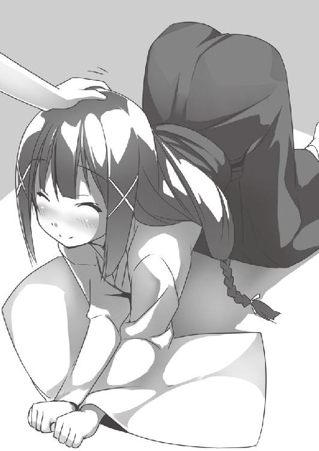

| ひきこもりパンデモニウム | |
| 壱日千次 | |
| KADOKAWA / メディアファクトリー (2013) | |
ＭＦ文庫Ｊ
ひきこもりパンデモニウム
壱日千次
口絵・本文イラスト●うすめ四郎
日高見春太は渾身の力を込めて、結界を殴りつけた。
結界は透き通り、お椀を伏せたような形で、幅二メートルほどの大きさである。
史上最強の退魔師により作られたそれは非常に堅牢で、鍛え抜かれた彼の拳でもびくともしない。
その中心に横たわるのは......死んだように眠る、黒髪の美しい少女だ。
春太は結界をたたき続けながら、今や唯一の家族である、一つ年下の義妹の名を叫ぶ。
「久遠......久遠！ 目を覚ませ!!」
義妹......久遠は辛そうに目をあけ、少し潤んだ瞳をこちらに向け、微笑し、白い手を伸ばしてきた。
「兄様......私はもうだめです。あなただけでも行ってください」
「馬鹿、そんなことしたら、養父さんや聖歌姉ちゃんに顔向けできねえよ！」
春太は痛みに歯を食いしばりながら、正拳突きや膝蹴りで結界への攻撃を続ける。
すると、どういうわけか......今までびくともしなかった結界が、少しずつ壊れはじめた。
「兄様、どうして、私なんかのために......」
「そんなの決まってるだろ」
春太は、ちっぽけな全ての「法力」を右拳に集中させた。
拳が光を放ち......それで殴りつけた結界は空中に霧散し、消える。
久遠は頬を染め、囚われの姫が騎士を迎えるような笑顔で、ぼそりと、
「やっと姉様ではなく、私のことを......」
春太は、そのほっそりとした両肩に触れ......後ろに回り込み、羽交い締めにして、ずるずる布団から引きずり出した。
「お前が留年するからだよ！」
史上最強の退魔師だが、引きこもり。それが義妹・久遠だった。
今朝もかなり高度な奥義、結界術を使って自室の布団に閉じこもっていたのである。
「いーやー！ 学校行きませんー！」
制服姿の久遠──いちおう着替えたらしい──は、廊下まで引きずられながらも首を横に振って、黒いストッキングに包まれた長い両足でふすまを挟む。
春太は、義妹の髪から漂ういい香りにくらくらしながら、
「久遠、子供みたいなリアクションするなよ......」
「そうでした。あの熱い夜、私は兄様に子供では無くされた......」
「リアクションに困ること言うなよ!?」
久遠は人差し指の中ほどを噛み、真っ赤になっている。
照れるならそんな嘘言わなければいいのに、と春太は思いつつ、彼女をそっと廊下におろし、正座して向き合った。
（......しっかし、綺麗になったよなあ）
久遠は、彼女を生んですぐに亡くなった、母親似らしい。
いわゆる姫カットの、腰までまっすぐに伸びた艶やかな黒髪。
かたちのいい胸から細い腰のライン。そして黒ストに包まれた、毎日の鍛錬により程良く締まった美脚。
泣き虫だった義妹がこんなに美しく......いや、今でも結構泣くけど。
おっと見とれている場合ではない。春太はコホンと咳払いをして、指を一本立てた。
「全く......日高見流退魔術を引きこもるために使うとは。養父さんが泣くぞ？」
そうですね......と久遠は遠い目をした。先代当主で、凄腕の退魔師だった実父を思いだしているのだろう。
「天国のお父様は......〝俺がコンビニバイト行くのが嫌な日に、結界張って引きこもったばっかりに〟と思うでしょうね」
「確かに泣くだろうな!?」
親のダメなところを真似てしまった久遠だった。
地獄に住まう悪魔と戦うための唯一の力〝法力〟を持つ者......退魔師。
ここ日高見家は室町時代から続く退魔の名門であり、幾度も悪魔......そして、それを地獄から喚び、使役する召喚師と激闘を繰り広げてきた。
しかし、明治以降悪魔が一度も出てこないので仕事が全くなくなり、没落の一途をたどっている。
しかも法力は、退魔師、悪魔、召喚師にしか効かないし、見えない。それ以外の人間には認識できないだけでなく、あたりもしないのだ。
久遠は形のいい眉を伏せ、
「学校いやです......法力が見えない人は皆、私のことを痛い子扱いするんですもの」
「久遠......」
彼女は、人見知りで友達がいない上、「退魔師」という家業が噂になってしまい、学年で嘲笑の的となっている。
春太も、自分を笑う声を聞いたことは、数え切れないほどある。
〝家で、悪魔と戦う訓練してるらしいぜ〟
〝そういえば日高見君の妹、小学校の時「私のお父さん」という題の作文でね......お父さんは退魔師してるって......〟
嫌な記憶に、春太が奥歯を噛んでいると、
「......でも、大丈夫です。私......頑張れます。悪魔の襲来から、みんなを守ることを想像すれば」
周りの無理解にめげず、けなげに微笑む義妹に、胸を熱くした春太だったが......
「悪魔が攻めてきたら、しばらく放置して町を荒らさせてから、私が出て行って、土下座させたり足を舐めさせたりしたあと、〝しょうがないなあ〟と助けることを想像すれば、頑張れます」
「おいおい久遠！」
「えへへ、冗談です」
久遠は舌をぺろっと出した。
春太は、ほうっと息を吐いて、「よかった......」とうずくまって床をたたき、
「お前の脚が、知らない奴らに舐められるなんて、耐えられないよ......」
「そこですかっ」
むしろ、悪魔より妹の脚を舐める奴を滅ぼしたい。
久遠は赤く染まった顔を両手で隠し、立ち上がって、長い廊下をかけていったあと、指の間からこちらを見て、
「照れるじゃないですか......もう」
右手を銃口のように春太に向け、
「兄様ったら！」
法力で練った弾を五連続で放ってきた。その全てが、春太に風穴をあけるほどの殺傷力を持つ。
しかし彼は〝照れ隠しに胸をポカポカ叩いてくる女の子〟を見るような笑顔で、
「ははは、久遠は照れ屋だな」
一瞬で両こぶしに法力を集中させ、迫り来る弾を次々殴ってはじき、軌道を変えると......弾は、天井をすりぬけていった。
春太の法力は義妹と比べものにならないほど弱いが、拳や足などの一点に集中させ、十年間、ずっと鍛えてきた空手の技と組み合わせれば何とか対処できるのだ。
無駄に超人的な攻防をしたあと、久遠は時計を見て、
「あ、兄様、そろそろ学校へいったらいかがです？」
春太は、今日はあきらめることにした。
「......そうだな......久遠、明日こそは行こうな」
久遠は口元に手を添えて、たおやかに微笑み、
「うふふ、これで、私の六十勝〇敗ですね」
「なんで学校行かなかった日を、お前の勝利としてカウントしてるの!?」
どちらかといえば負けな気がする。
春太は、養父から受け継いだ十字架の形をしたペンダントを握り、
「養父さん、俺は久遠を引きこもりから脱却させます」
と改めて誓うのだった。
兄妹は廊下を歩いて、四畳ほどの仏間に入り、仏壇の前に座って合掌した。時間はないが、習慣だから仕方ない。
背筋をピンと伸ばして祈る久遠。その凛とした姿は、神に仕える巫女のようだ。
「ご先祖様、我らに戦う機会を授けたまえ～。悪魔を地上に、お寄越しください～」
祈りの内容は、黒ミサの魔女のようであるが。
春太は、久遠に手を振って玄関を出た。
苔むした庭石や、大きな木......そして兄妹が毎日修行している道場や蔵もある広い庭をしばらく歩き、高さ三メートルはあろうかという、木製の分厚い門を押しあける。
この屋敷は小高い丘にポツンと立っている。両側が林に挟まれた薄暗い道を五十メートルほど下っていくと、通学路に出る。同じ制服を着た高校生が何人か歩いていた。
ここは葛西市。
人口十五万ほどの、地方最大の河川・葛西川の河口にある港町だ。
地方都市の例にもれず、通学路沿いにある商店街はずっとシャッターが閉まっている店が多い。
兄妹が通う、葛西第三高校は急勾配の坂の上にある。
彼はそれを、軽い足取りで登っていく。へろへろになっている生徒もいるが、対悪魔の修行や、家計を支えるためのバイトで体を鍛えている春太にとっては軽い運動だ。
（いい天気だな......あっ）
春太は空を見上げて、微笑した。
〝にいさま おきをつけて〟
という、大きな白い文字が、飛行機雲のように浮かんでいたからだ。
久遠がその膨大な法力を使って描いたもので、春太の周りを歩く、退魔師でない人たちは誰も気づいていない。
兄妹はこれを〝空メール〟と呼んでいた。
〝からメール〟ではない。〝そらメール〟である。
「法力なんて、悪魔が出てこない限りほとんど役に立たない」と悩む久遠に、春太がアイデアを出し、実用化に成功した日高見家の歴史にはない技だ。
久遠は、初めて空に大きな文字を表示するのに成功した日、得意げに胸を張った。
「これで、遠くにいる兄様に私の気持ちを伝えることができますね......これを、空メールと名付けましょう！」
「すごいよ。久遠......何かお祝いをしよう。欲しい物とかあるか？」
久遠は細い顎に人差し指をあて、うーんと首をかしげ、にこっと笑った。
「ええと......携帯電話が欲しいです！」
「空メール意味ねぇ！」
偉業はあっさり、文明の利器に駆逐されるか......と思ったが。
このとおり、空メールは兄妹の間で結構利用されている。久遠は一応携帯を持っているが、「登録が一人しかいない電話帳を見ると鬱になる」という理由で、あまり使っていない。
春太は、空メールを横目に、坂道をゆっくり登る。家で空を見上げながら「メールを打っている」義妹を想像すると微笑ましいが、自分の法力量では「返信」できないのが歯がゆい。
文字が変わった。久遠はまだ簡単な文字しか表示できない。
〝くるまに きをつけて ください〟
（わかってるよ、ありがとう）
春太は心の中で礼を言った。
〝いま なにしてるんですか？〟
（そりゃ、通学だけど......）
〝ひとりで さみしいです〟
（久遠......）
〝あなたの しゃしんを ながめながら すごしてます〟
（......）
〝コンナ ワタシ キライ？ デモ ステナイデ ソバニ イテ〟
「重い女か!!」
春太は思わずつっこんだ。
それを見ていたかのように、空に〝（・∧）てへぺろ〟と映し出される。兄がツッコむことを確信していたらしい。
春太が苦笑していると、すぐ後ろで声がした。
「お、重い女でごめん......十年以上、ずっと好きな人がいてごめん......」
「わ!?」
振り返ると、華やかな外見の少女が立っていた。
柔らかそうな栗色の髪に、少し勝ち気そうだが整った顔立ち。
そして......何より目を引きまくるのが、高二とは思えないほどの豊かな胸だ。
多々良沙枝。今年度はじめに春太のクラスに転校してきたばかりだが、その明るさと美貌、そして面倒見のよさから、早くもクラスで人気者になっている。
「多々良さん、なんか言った？ 重い女とか、ずっと好きとか、聞こえたけど......」
沙枝は「え!?」と目を見開いた後、わざとらしく己の肩を何度か揉んで、
「な、なんでもないわ。今日も胸が重いなーってだけよ。そういう意味で、重い女なのよ」
「そ、そうなのか......」
春太の目は、彼女の胸に引き寄せられる。確かにたっぷりしていて、重そうだ。ワイシャツのボタンが弾け飛ばないか心配になるほどである。
春太は目をそらして、
「でも、あまり、自分の胸がどうこう言わない方がいいぜ？」
「うん......私のこと、尻が軽い女って思わないで......」
「よくわかんなくなってきたな......」
胸が重くて尻軽な美少女がいたら、それはもう大変だ。
沙枝は誤魔化すように縁石の上にのり、両手でバランスをとって歩く。
「でも、さっきから見てたんだけど、日高見君、なにかとても楽しそうね」
なんで俺のこと見てたんだろう？ と春太は思いつつ、
「ああ、妹からメールが来てたんだよ」
「むっ......」沙枝は少し頬を膨らませた後、「あれ、春......日高見君、さっき携帯見てたかしら......？」
今、春太と言いかけた？
彼が首をかしげると、沙枝は春太の疑問をかき消すように、慌てた様子で、手をワタワタ振り、
「ひ、日高見君は、妹さんと仲良しなのね」
もちろん！ と胸を張る春太に、沙枝は何故か唇を噛んで......人差し指をつきつけてきた。
「でもダメよ？ いつかは妹離れしなきゃならないんだから......」
「そうだな。七十年後くらいにな」
「それは死別ではないかしら!?」
来世も一緒にいたい、と言わないだけ誉めてほしい。
そう春太が思っていると、携帯がメール受信を告げた。
久遠からのものである。文面は、
〝空メール、ご覧いただけましたか？〟
「......空メール？ じゃあさっき来たのって、空メールだったの？」
画面をのぞき込んだ沙枝は、春太と目があうとバツが悪そうにうつむいて、
「ご、ごめんなさい。文面が目に入っちゃって......」
「俺くらいのシスコンになると、からメールで何となく妹の意図がわかるのさ」
春太がそう言って誤魔化しながら、本文をスクロールさせると、
〝さっきの数通の空メール、ほとんど冗談ですよ。......でも、傍にいて欲しいというくだりは、本当です......〟
「からメールで、どれほど複雑な意思の疎通!?」
なんという兄妹の絆......と、沙枝が大きな胸をかき抱いておののいた。
春太は素早く返信をする。
〝バイト終わったらすぐ帰るから。あと今日は、こないだ転校してきた人と、通学路で一緒になったよ〟
先日、久遠には美少女が転校してきたことは伝えている。
十秒ほど経って......さわやかな青空に、ところどころ血が垂れたような、不気味で巨大な文字が浮かび上がった。
〝ド ウ し テ アナタ ノ トナリ ハ、 ワタシの、 シ テ イ セ キ〟
「重い女か!!」
無駄に巧い法力フォントに、春太は思わずつっこんだ。
その後ろで、なぜか沙枝が「重い女でごめんなさい......」と電柱に両手をついてうなだれいた。
学校へ行き、比較的まじめに授業を受け、級友に別れを告げて日雇いのバイトに向かう。
養父と先祖の残してくれた遺産はあるが、あまり多くないので無駄遣いはできない。
効率的に金を稼ぎ、かつ少しでも強い退魔師になれるよう、彼はいつもきつい肉体労働を選んでいた。
今日のバイトは引っ越しだ。重いタンスやら本棚やらをマンションの六階まで運んだので、結構疲れている。
バイト後すぐに帰宅し、居間をのぞくと、夕食の準備がしてあった。洗濯物も畳まれている。
久遠は引きこもっているのが申し訳ないと、買い物以外の家事をしてくれていた。
家庭的な妹だ......高校一年なのに家庭にいすぎるのは少し切ないが。
廊下を歩き、彼女の部屋のふすまの前で、〝久遠、ただいま〟と声をかけようとしたが......。
「〝ゆく川のごとき穏やかに、時に猛り......今こそ魔を滅せよ......〟」
中から〝詠唱〟が聞こえてきて、思いとどまる。
法力を練る練習をしているのだ。久遠は三歳、春太は六歳のころからずっと、退魔の訓練を続けている。
（......夕飯まで、家の補修でもするか。それ終わったら空手の稽古しよう）
古くて広い屋敷なので、いつもどこかが壊れている。
生まれてすぐ親に捨てられ、六歳まで児童養護施設で育った春太を引き取ってくれたのは、今は亡き養父であり、この家だった。
幽霊屋敷と揶揄する者もいるが、春太にとって家族の温かさを教えてくれた大事な場所だ。手先の器用な彼は、暇を見つけては補修をしていた。
廊下は〝Ｌ〟を上下逆にしたような形で、その両脇に部屋がいくつかある。
途中で廊下を曲がり、突き当たりの扉をあける。
壁のスイッチを入れると、安っぽい裸電球がつき、地下へ続く石段が浮かび上がった。石段の角はすり減っており、年月の長さを感じさせる。
靴を履き、石段をしばらく下りていくと......二十メートル四方ほどの、石壁で覆われた大きな部屋に出た。部屋の隅には養父が使っていた大きな机があり、その側に古い本などの雑多なものが積まれている。春太が歩くと、部屋全体にコツコツという音が響きわたる。
「えっと、板は......」
きょろきょろ見回していると......部屋の奥の床についている、ドアが目に入ってきた。
壁ではない。床にドアがあるのだ。
あまりにも異様な設備である。言い伝えによると、地獄に通じているらしく、先祖はこのドアから出てきた悪魔を迎撃するため、ここに家を建てたという。
ただ、日高見家にはそんな言い伝えが、いくらでもあるのだが。
幼いころは久遠と怯え、義姉に笑われたものだが、今では当たり前の光景すぎてなにも思わない。
しかし、今日は様子が違った。
「......え？ なんだこれ......」
ドアが、淡い光を放っている。
こんなことは、初めてだ。久遠に知らせに行こうと思う間もなく、ドアがゆっくりと開き......白い皮手袋に包まれた、小さくて可愛い手が出てきた。
指が床をつかみ、続いて色白でツリ目の少女が顔を出し、春太と目を合わせ「あっ」と一瞬びっくりしたあと、
「......む、大儀である」
「......そ、そりゃどうも......」
間抜けな挨拶をする彼をよそに、少女は、よいしょ、と床に立つ。
見た目は中一ほどだろうか。幼い肢体を包んでいるのは、白い革製のボンテージスーツだ。きらきら輝く銀髪には、イバラの形をした髪飾り。
そして、なにより特徴的なのが......ツノと尻尾に、羽。これは、まさか......。
「......き、君は、悪魔？ 地獄からきたの？」
悪魔は「むろんよ」と尻尾を振り、薄い胸を張って、春太を見上げる。
「聞いて驚け、妾は......」
「お、お待ちしてました！ 会わせたい子がいるんです！」
春太は悪魔の小さな手を取り、地下室を出て、石段をかけあがった。彼女は「お、おお!?」と戸惑っている。
久遠の部屋の前まで来ると、悪魔が羽を広げて威嚇してきた。
「お、おい、貴様......」
春太が「しーっ」と唇に人差し指を当てると、悪魔は思わず口に手を当てる。
「すみません、ちょっとここで待っててもらえますか」
「え......？」
悪魔は不思議そうに、春太を見上げた。
「妹を、びっくりさせてやりたいんです」
「お前の対応に、妾がびっくりしとるぞ!?」
もっと怯えるとかさあ......妾、確かに威厳がないけどさあ......などと唇をとがらせる悪魔を横目に、春太は義妹の喜ぶ顔を思い描いて、わくわくする。
むろん、悪魔が不穏な動きを見せれば、戦う準備はしているが。
悪魔を廊下に立たせ、そこから視線は決して切らず、ノックをして、久遠の部屋へ入る。
義妹は敷きっぱなしの布団の脇で正座して、日高見家の奥義書を読んでいた。
「久遠、読書中ごめんな。今日はお前に、会わせたい子がいるんだ」
「え、だ、誰ですか？ まさか......」
久遠は春太に向き合って正座しなおし、「私が引きこもってる間に、誰かと......？」などとブツブツ言ってから、
「それは、女の子......ですか......？」
「ん？ そうだな」
そんな！ と久遠は目を見開いたあと、形のいい胸をぎゅっと押さえて、
「か、可愛いのですか？」
春太は変な質問に戸惑いつつ、廊下の悪魔を改めて見直す。
「見た目か......？ まあ、とてつもなく可愛い子、だけどな」
悪魔は頬を染め、両手を組んでうつむいた。尻尾が嬉しそうにパタパタ動いている......格好の割に純情なのかもしれない。
朝と変わらず制服姿の久遠は黒ストごしの太股をつかんだあと、絞り出すように、
「その方とは......末永くお付き合いをしていくのですか？」
悪魔は、日高見家にとっては、永遠に交わることのない敵であろう。
「末永くというか......遥か昔からの宿命という感じかな。人生を通して向き合っていく覚悟だよ」
「そんな!?」
涙目になる久遠。
春太が手招きすると、ボンテージ姿の銀髪悪魔がおずおずと入ってきた。その姿に久遠はワナワナして、
「な、なんという格好の方......やはり、未だにお母様のお下がりが私服の、地味な私じゃダメだったのですか......」
「え、え？」
「兄様のバカァ!!」
パシーン！ と春太の頬を張ってくる。
当惑する春太の胸に久遠は顔を押しつけ、泣きながらイヤイヤをして、
「ご、ごめんなさい......で、でも......おおおお、おおおお、お幸せに......」
続いて悪魔へ土下座し、額をこすりつけ、
「兄様を、よろしくお願い致します、ね、姉様......」
「......！」
悪魔は銀色の瞳を見開き、一歩退がった。
（え、なんだ......？ どうしたんだ？）
春太は二人の様子を怪訝に思いつつも、布団に頭をつっこんでオイオイ泣く義妹の体を起こし、華奢な肩を抱いて、悪魔を手で示す。
「......ほら、お前があんなに会いたがっていた、悪魔さんだよ。わざわざ地獄から、来てくださったんだよ」
手術前の少年の病室に、憧れのスポーツ選手が来たような感じである。
「え......？ あ、あくま......？」
久遠は涙の残る目で、ツノ、羽、尻尾をまじまじと見た。
対する悪魔は、久遠の顔をぼうっと眺めている。
俺の妹の可愛さは悪魔にも通用するな、と春太が思っていると......。
「ほ、本当に悪魔さん？ ......あ、あの、これ、見えます？」
久遠が掌を上に向けて、短く詠唱すると、光り輝く法力の玉が現れた。
悪魔は当たり前のように、細い首をかしげる。
「法力、であろう？ 退魔師固有の能力ではないか」
ぱああっと久遠は微笑み、春太の腕を揺すってきて、
「や、やったあぁ！ 家族以外で、初めて法力が見れる方とお会いできました！」
「よかったな久遠......ほら、いい機会だから、もっと質問してみたら？」
はいっ！ と義妹は明るく返事をして、
「悪魔さん！ 私、いつか悪魔と戦いたいなあって夢見ながら、法力を鍛えてきたんです！」
「ま、まあ努力するのはいいことであるな......」
「どうしたら私、もっと強くなれると思いますか？」
「妾にそれを聞くのかえ!?」
主導権を完全に奪われた悪魔。
久遠は彼女を、仏間に案内する。先祖代々の位牌がたくさんあり、壁には三枚の遺影がかけられていた。
久遠は背筋をピンとのばして正座し、漆黒の瞳に涙をためて、がっちりした中年男性の遺影を見上げる。
「悪魔はいる、と言い続けたお父様は正しかったんですね......これで仏前に、いい報告ができます」
「いや、それ、悪魔に勝ってから報告したらどうか？」
悪魔が正論を言う。
久遠は感極まっているのか、その言葉を耳に入れず、
「明治以降、悪魔も天敵の召喚師も全く出てこないので......父は退魔師の仕事がなくペテン師扱いされ、失意のうちに亡くなったのです」
「そ、そうなのか......それは、悪いことしたのう」
悪魔は遺影を見上げて、ぽつりと、
「妾がもう少し早く来ておれば......」
間に合わなかった医者みたいなこと言うなあ......と春太は思った。
「お父様、ご覧ください」
久遠は、お鈴を〝チーン〟と鳴らし、傍らの銀髪少女を見て、
「悪魔、見つかりましたよ」
感動の再会番組で、生き別れの家族が見つかった時の司会者のように言った。
久遠は、目頭をそっと押さえたあと、三本の線香に火をつけ、一本を春太......そしてもう一本を悪魔に渡す。
「お線香をあげていただけますか」
「ええ!? 妾が!?」
「たぶん、お父様も喜ぶと思います」
「......わ、わかったわい......」
春太と久遠が線香立てにさすと、悪魔も続く。
兄妹が合掌し、悪魔も見よう見まねで手を合わせたとき......。
「ごふぉあ!?」
悪魔は吐血した。
「だ、大丈夫ですか!?」
「いや、合掌という聖なる動作をしたがために、体がダメージを受けたようじゃ......」
「そ、そうでしたか。無理なお願いをして申し訳ありません。やらなくて結構ですよ」
「いや、一度言ったことは実行せねば。こんなことで屈しては、大悪魔として名折れであるからな」
仏前で手を合わせる方が、大悪魔として名折れな気もするが......。
悪魔は多量の吐血をし、全身をヤバイ感じに痙攣させながらも合掌を終えた。
久遠は三つ指をついて、悪魔へ深々と頭を下げたあと、目をハンカチでぬぐい、
「ありがとうございます。これで父も、安らかに眠れると思います」
「思いっきり家に、悪魔が上がりこんどるのに......？」
悪魔は頬をひきつらせたあと、
「あ......あの、な。言いづらいのだがな」
「なんでしょう？」
きらきらした目で見つめる久遠に、悪魔はたじたじになりながら、
「わ、妾、地上を侵略しにきたのであるが......」
「わぁあ、ホントですか!? 侵略!?」
物騒な単語が出てきたにもかかわらず、久遠は満面の笑顔だ。
鍛えた法力の技を使えるのが、嬉しくて仕方ないのだろう。
「なんということでしょう!! 私、大切な沢山の人を守るため、絶対に負けません!!」
悪魔はニヤリと笑って、
「......ほう、大切な沢山の人、とな？」
「はい！ みんなを守りたいという想い......それが、私の力になるんです！ ええと、大切なのは、兄様と......」
久遠は指折り数えはじめたが、親指を折った時点で固まり、
「あとは、いなかったです......」
「守りたいという気持ち、あまり生まれそうにないな!?」
義妹は女の子座りになり、春太の肩に寄りかかってきて、死んだ目で、
「やっぱり、戦うのやめましょうか......」
「自分の心に負けそうであるぞ!?」
久遠は唇を尖らせながら、黒ストごしの瑞々しい太股をいじる。
春太の二の腕に、かすかに胸が当たっている......もう少し自分の美貌を自覚してくれ、と彼は思った。
たっぷり十分ほどかけて、久遠は立ち直った。
自室から愛刀を持ってきて、春太と悪魔を庭に連れ出す。外はすでに、夜になっていた。
久遠は悪魔に「ここへお願いします」と庭石の前に立たせたあと、春太の手をとって十五メートルほど離れる。
きりっと表情を引き締め、悪魔を指さし、
「日高見家退魔師、春太と久遠......我ら兄妹がいるかぎり、この地上に悪魔が栄えるところはありません！」
そういえば久遠、一人でよくこのセリフ練習してたなあ......と春太は思い出す。
悪魔は当惑しながら、
「お、おぉ......では、こちらから攻撃を......」
「私は負けられないのです！ 沢山の大切な人がいるから！」
「まだ台詞続くのかえ!?」
しかも先ほど、嘘と判明した台詞だ。
悪魔は律儀に「うむ」「それは感心」と台詞を全部聞いたあと、短く詠唱し......魔力で練り上げた弾──魔弾を連発してくる。
魔力も法力と同様、普通の人間には見えないが......違いは悪魔、退魔師、召喚師以外にも効くことだ。春太がよけた魔弾は、庭木の太い枝をへし折っていった。
かなりの威力だが......久遠は怯えるどころか「う、うわあぁ!? 魔弾だぁ!?」と大喜びしながら、左手で印を結び、法力の盾を張って受け止める。
「兄様、ほらほら、魔弾ですよ、魔力の弾丸!! やりましたぁあああああ！ 夢にまで見た魔弾ですううううぅうう!!」
悪魔は久遠のテンションに若干引きつつ、次は羽を利用して飛翔し......春太へ突撃し、拳を繰り出してきた。
春太は、毎日の稽古や、久遠との超人的なじゃれ合い同様、拳に法力を集中させて受け流し、反撃する。
義妹より遥かに少ない法力量を補うため、独自に空手の練習をし、身につけた戦闘スタイル......彼がここ十年来、ほぼ毎日突きや型を繰り返した庭の隅は踏み固められ、草一本生えていないほどだ。
悪魔は、春太と何度か打ち合ってから間合いを取り、何故かとても嬉しそうに笑った。
「やるのうっ。よっぽど修行したのであるな！ ......では、これはどうか？」
翼を広げ、詠唱を始める。
「〝日高見春太よ、我が命を聞け！〟」
これは、まさか......春太は手で耳をふさいだが、悪魔の声はそれをすりぬけて鼓膜をふるわせる。
「〝お前は日高見久遠の美脚の虜となり、それを舐めることしかできなくなるであろう〟......〈チャーム〉！」
チャーム......魅了の呪法だ。かけられた者は、術者の言うことを聞かなければならない。
だが......。
「......ん？ 効かないぞ？」
春太の気持ちには、何の変化もない。
おそらく、身につけているペンダントのせいだろう。魔除け効果......悪魔が使う石化魔法や、チャームなどへの耐性があると、養父が言っていた。
一つしかないため、久遠より遥かに耐性が低い春太が受け継いだのである。
久遠、俺は無事だぞ、と彼女をみたところ、地面に「の」の字を書いていた。
「兄様......やっぱり、私なんか、どうでもいいんですね......」
「お前......何言ってるんだよ......」
どんどん綺麗になるお前に、どれだけ俺が劣情を抑え込んでいるかも知らないで。
「そんなわけないだろ......ぶっちゃけ俺は脚フェチだが、お前のそれは至高のものだと思っている！」
「う、嘘......兄様が、そんな風に私のことを見てるわけが......」
春太は義妹の前に立ち、悪魔が放った魔弾を天に向かって蹴り上げた。
「一番似合う黒ストは、二十デニールだと前々から確信しているほどだ！」
「そんな具体的に考えていてくださったのですか!?」
デニールとはストッキングの糸の太さの単位であり、これにこだわりがある男はまず脚フェチであろう。
普通ならどん引きの春太の発言だが、久遠は嬉しそうにスクッと立ち上がり、
「......じゃ、じゃあ、私も攻撃しますねっ」
腰から刀を抜き、高らかに詠唱を開始する。
「〝遥か高みの至高天より来たれ、永劫の断罪者！〟」
濡れ羽色の髪を振り乱し、
「〝今こそ叫び、うねり、ねじり、邪悪なる者を皆塵に帰すがいいぃぃい！ 日高見流退魔術・奥義......〟」
久遠は刀を、天へ突き上げた。
「贖罪の煉獄ッ......〈鳳炎太后〉!!」
............。
一見、何も起こらない。
悪魔は首をかしげて、
「......ん？ 今、何かしたのかえ？」
久遠は焦った様子で、何度も空を指さす。
「いやいや、よく見てくださいよ......見えるでしょう？ あなたには」
悪魔は戸惑った表情のまま、視線を上に移動させていく。
次第に、あんぐり口をあけていき、
「え......何で、空が明るいの......？ 今、夜では......」
空のほとんどを、白い光が覆っている。
久遠は喜々として、技の解説をする。
「鳳炎太后......法力の弾丸を作り出して、ぶつける技です」
「こ、これ、法力弾!? 空全体をカバーするほど大きい......なにこれ!?」
悪魔は、ぺたりと尻餅をつき、あとずさった。
久遠はニコニコ笑って空を指さしながら、
「見えます!? 見えますか!? お父様が亡くなってから会得したこの奥義が!?」
「ま、まだ大きくなってる......どんな法力量!? 考えられない......!!」
俺の妹の実力は、あの悪魔にとってもチート級だったらしいな、と春太は思った。
久遠曰く、本気になれば太陽に匹敵する大きさ......実に直径・百四十万キロメートルほどの法力弾を放てるらしい。
巨大すぎて計測の方法がわからないのだが、とにかく途方もないスケールなのは確かだ。
「久遠、いきなりそんな技放ったら、多分死んでしまうぞ」
聞きたいこともあるし、戦意を喪失させればそれでいいだろう。
「あっ、そうかもしれませんね......では、威力を十万分の一に落としましょう。えい」
久遠は、ひょいっと刀を振った。
その軽い動作とは裏腹に......極太の光線が神の裁きのごとく、悪魔へ落ちていく。
悪魔は素早く、二十層以上の分厚い魔力防壁を張ったが、すべて障子紙のように突き破られた。光線は悪魔に当たらず、その脇の地面をすりぬけていく。
おそらく地球を貫通し、日本から反対側にあるブラジルを通り抜け、宇宙の果てへ消えたことだろう。
悪魔は全身をガタガタ震わせながら、
「じゅ、十万分の一でこれ......？ 食らったら妾、消滅してしまう......そんなことになったら......」
悪魔はなんとか立ち上がり、脚をもつれさせながら逃げていく。地獄へ帰るつもりらしい。
涙目でこちらを振り返り、
「妾を倒しても、人の心に闇がある限り、何度でもよみがえるんじゃからなー！」
あいつが何度よみがえっても、瞬殺されると思うが......。
義妹はわくわくを抑えきれない様子で、春太の腕にしがみついて飛び跳ねながら、
「兄様......これから、ベルゼバブとか、アスモデウスとか、ベリアルやら、大悪魔が次々と現れて、わくわくするような戦いができたら、うれしいですっ」
「そうかぁ」
鍛えた技を活用する機会ができて、本当によかった。
「そして、いずれは、悪魔王サタンと雌雄を決し......」
両手を組み、恋する乙女のようにうっとりする久遠だったが......悪魔の一言を聞いて、表情が固まる。
「くっそー、このサタンともあろうものが......」
「......え？」
あいつが、悪魔王サタンなの？
「地獄最強たる、この妾が......」
「あれで!?」
久遠が絶望的な表情をした。
彼女は必死のダッシュで悪魔......サタンに追いつき、発言の真偽を問う。
「妾が地獄最強、というのは嘘じゃ。見栄を張ったのじゃよ」
「そ、そうですか」
「最強であるベリアルは、妾の１・２倍は強い」
「大して変わらねぇ!!」
久遠は口調が変わるほど驚き、今度は悲し泣きするため春太に抱きついた。
悪魔──サタンは、家の中へ逃げていった。
春太は、「も、もうラスボス戦、終わりでずがあっ......？」とえぐえぐ泣く久遠をなんとか落ち着かせ、その手を引いてあとを追う。
地下室へ降りると、サタンが床の〝ドア〟をあけ、中に飛び込んでいくところだった。
春太が〝ドア〟のノブをひねってもびくともしない。言い伝え通り、人間界からは決して開けることができないらしい。
久遠は膝に手を当てて〝ドア〟を見おろし、心配そうに、
「兄様......また悪魔、来ていただけるでしょうか。さっき、五十万分の一くらいに手加減した方が、よかったでしょうか」
「侵略って言ってたし、また来てくれると思うけど」
「よかった......」
久遠は形のいい胸に指先を当て、ほっと息をついた。
「今度侵略に来ていただけたら、優しくお出迎えします......」
真顔で妙なことを言ったあと、目を閉じて腕組みし、
「しかし困りましたね。では、私は家にこもって悪魔が町を荒らすのを妨害しなくてはなりません」
確かに兄妹の留守中に、悪魔がこの家を通って人間界にでたら大変な事態になるだろう。
悪魔には、法力以外の攻撃が全く効かないのだ。
......しかし。
「久遠、これで、引きこもりを続ける口実ができたと思ってるんじゃないだろうな？」
「......む。さすがは兄様ですね。私の考えは筒抜けのようです」
久遠は唇を尖らせながらも、腰の後ろで両手を組んで、どこか嬉しそうに黒ストごしの爪先をつつき合わせる。格子柄のスカートが小刻みなリズムで揺れた。
春太は微笑して、
「俺と久遠、何年のつきあいだと思ってるんだよ」
「ええと、中学の文化祭の、後夜祭からですから......」
「なんで、後夜祭で告白して、つきあいだした感じになってんの？」
キャンプファイアーで告白した感じだ。
えへへ、冗談です、と久遠は笑ってから、凛と表情を引き締め、
「でも、私が引きこもっていないと、悪魔が出てきて人間界をめちゃくちゃにしますよ」
「なんてスケールの大きい自宅警備員なんだ......」
これほどの使命を背負った引きこもりもいないだろう。
「じゃあ久遠、交代で見張りをしような」
「......え、兄様も休んでくださるのですか？」
春太は自嘲の苦笑を浮かべて、
「......俺だって戦えるよ。退魔師としては、お前より遥かに弱いけど......」
なんといっても、史上最強の退魔師と毎日訓練をしてきた。
どんなに法力がちっぽけでも......さっきのサタンが地獄最強クラスなら、戦いようはあると思う。
「そうですね、兄様は、ずっと修行しておられました......増えない法力量をカバーするために、空手の鍛錬も、懸命に......」
久遠は頬を染め、春太の胸板に手を伸ばしてきて、鍛錬の成果を確かめるように、「かたい......」と呟きながら、細い指で優しく撫でる。
くすぐったくて、妙な気分になるな......と春太が思っていると、久遠は、春太の襟元を両手できゅっと掴み、すがるような上目遣いで、
「でも、なるべくなら、戦いは私にお任せくださいね。私、兄様が傷つくところだけは、絶対、死んでも見たくないんです......！」
「さっきサタンを紹介したとき、なぜかビンタされたけど......」
「あれは、私が混乱していて、兄様がどう傷ついたか見えなかったからいいんです」
「解釈、お前次第だな!?」
春太は驚愕しつつ言った。
久遠は長いまつげを伏せて、桃色の唇を噛み、
「......私には、大切な人はもう、兄様しかいないのです......」
父母も、姉も、もういない。
「兄様の身に何かあったら、私......どうしたらいいのですか......？」
「横たわる俺の死体に頬をすり寄せ、〝私のこと見てくれない、兄様が悪いんですからね？ えへ......へへ、これで、ずっと、一緒ぉ......ここが私の、指定席ぃ......〟と光を失った目で微笑んでくれ」
「殺したの私ですね!?」
ヤンデレた人のようだ。
あれ？ 意外とアリでは......と真剣に検討しだした義妹が怖いので、春太は対悪魔戦に思考を切り替える。
待ちに待った退魔術を活用する時だ。
明日からは、とりあえず学校を休み、交代で見張る。
ただ、いつまでもというわけにはいかないので、折を見て悪魔と交渉しつつ......春太が〝ドア〟を封印する方法を調べ直す。
（地獄の侵略を退け、久遠が自信をつけて引きこもりから脱却してくれればなおいいな......）
兄妹でしっかり話し合い、対悪魔戦の方針を決めたとき......〝ドア〟が開き、ビキニアーマー姿の女悪魔が出てきた。
久遠が春太の後ろに隠れると、悪魔はニヤリと笑う。
「へっ、怯えちゃって......可愛いじゃないか」
まあ、この大悪魔にして四天王が一人・アスモデウスが相手ともなれば......と言い掛けたとき、
「すいません、妹は、人見知りなもので......」
「そんな理由かい!?」
目を剥くアスモデウス。
さっきサタンが来たときは、悪魔が来たという驚きから初対面でも平気だったらしい。
春太は振り返り、久遠を見て、優しく言う。
「ほら、久遠」
久遠はモジモジしたあと、春太の後ろから顔を出し、頑張って笑顔を作って言った。
「......こっ、こんばんは。侵略の方ですか？」
日高見久遠は、地下室に持ちこんだ布団の上で正座し、小声で詠唱し、法力を練った。
〝対悪魔戦の気分が出る〟という理由から家に伝わる巫女服を着ており、視界の端で、〝ドア〟を見て、悪魔が来てもすぐに対処できるようにしてある。
久遠は練習を二時間ほど続けたあと、赤い袴の中の痺れた足をのばして「いたた」と顔をしかめたあと、
「......私、強くなりすぎたかもしれません......」
中三のあたりから、法力が凄まじい伸びを見せ、引きこもっていたこの二ヶ月間で技もかなり磨かれた。
久遠は「はあ......学校行っておけばよかったでしょうか......」とため息をついて、
「そうすれば、私もうちょっと弱かったでしょうし、悪魔と少しはまともな戦いができたのでは......？」
変な方向にクヨクヨする、史上最強の退魔師。
だめです、落ち込んじゃ！ と久遠は背筋を伸ばして、両こぶしを握った。
「ここはプラス思考。プラス思考。悪魔が侵略に来てくれた。それだけで十分ではないですか......」
久遠は強くなりすぎて、価値観が妙な感じになってしまっていた。
悪魔の侵略がはじまってから、今日で四日目。平日も含んでいるが、春太は学校へ行かずにここへいてくれる。
義兄は隣の布団で仮眠中で、その周りには古文書が山積みになっていた。
再び〝ドア〟を封じるための手段を探しているのだ。久遠は頬を染めて春太の頭を優しく撫でたあと、
（......空き時間、少し、あの練習もしましょうか）
久遠は指先に法力を集め、赤、青、緑色の玉を作った。
これは光の三原色といい、すべての色はこの組み合わせで作られる。
次いで法力玉を混ぜて、新しい色を作る。
昔、義兄がこれを応用した技で、泣いていた自分を慰めてくれた......久遠にとって、とても大切な思い出だ。
それをヒントに、ある技のアイデアを思いつき、密かに練習していたのである。
彼女は様々な色の法力玉を何百個も空中に浮かせ、あるものをイメージしながら操作し続けた。
（......難しいですね......ここをこうして......）
久遠は、戦いには全く役に立たない練習をしばらく続けた。
今まで、兄妹が戦った悪魔は、サタンに加え......春太が倒したアスモデウス。
久遠は、ベルフェゴールに、ベリアル。どれも名だたる大悪魔であり、地獄四天王と呼ばれるうちの三人らしい。
春太はアスモデウスに苦戦したが、久遠に至っては技の威力を五十万分の一に落としても圧倒してしまった。しかも、ほとんど傷つけることなくだ。
（......本当ならば）
久遠が本気を出せば瞬殺できるし、捕縛もできるのだが、悪魔が今のところ悪事を働いたわけではないことと......。
「......えへへ」
悪魔たちは、久遠が出す法力技にいちいちリアクションし、驚いてくれる。ほとんど本気は出せないが、〝努力して身につけた技を見て、誉めてくれる〟というだけで嬉しい。
家族以外の人間には笑われ続け、悪魔に理解されるとは皮肉なことだ。
人知れず街を守っている自分だが......世間から見れば、ただの「中二病の引きこもり」なのだろう。
小学生の時は特にバカにされ、いじめられたものだ。髪を掴まれ、転ばされ......泣きながら法力結界を張っても、いじめっ子たちはそれに気づくことすらなく、嫌らしく笑った。
『おまえ、〝たいまし〟なんだろ？ くやしかったら、技出して俺たちを倒してみろよー』
いつも義兄が助けてくれ、亡き姉が慰めてくれた。
「......」
今、久遠が恐れているのは、悪魔ではない。
戦いが終わることだ。
そうなれば、またふつうの生活に戻らなければならない......義兄しか理解者がいない、あの日常へ。
（......あ、そうです）
久遠は、夕飯のメニューを思いついた時のように、両手をポンとあわせた。
（地獄に攻め入り、征服し、女王になるのはどうでしょう？）
たぶん自分一人で、地獄の全軍より強いだろうし。
かつて地獄に入った人間はいないらしいが、夢見るのは自由だ。
久遠の脳裏に浮かぶのは......悪魔王の居城・万魔殿で悪魔たちから賞賛を受ける自分の姿。
地獄四天王をつき従え、豪奢なガウンを着た久遠は悪魔たちの歓呼に応える。
〝久遠さま万歳！〟
〝最強の退魔師にして地獄の王・久遠！〟
「えへへ......」
久遠は整った顔を残念にゆがめ、口の端からよだれを垂らした。もっと、もっと私を誉めて。
地獄の王になったら悪魔を使って、私と家族をバカにした奴らを、蹂躙してやろうか。
うふ、うふふ......暗い想像をしていると、大好きな人の声が脳内に響いた。
〝だ、だめだ、久遠！〟
「はっ！」
あわてて我に返り、傍らで眠る義兄を見る。
「いけない。こんな風にしたら、だめ。兄様に嫌われる。私ったら......」
久遠は桃色の唇を噛み、首を何度も振った。駄目。こんなことじゃ......。
そう、地獄の王になったら......。
〝悪魔のみなさん、地上へ攻めいりましょう！〟
〝アア、久遠、ガンバロウゼ！ サスガ俺ノ妹！〟
悪魔王となった久遠の傍らには、うつろな目の春太......そして、彼をチャームで操るサタンの姿があった。
春太は口をパクパクさせて、
〝アイシテルよ、俺の久遠。アイシテル〟
「えへ......これなら全く問題ありません。そして、蹂躙に向かいましょう。えへへへ」
久遠は愛刀を義兄に見立てて抱きしめ、布団の上をごろごろ転がった。袴の下の艶やかな太ももがむき出しになる。
鞘にほおずりしていると、いつの間にか起きた春太がびっくりした様子で、
「......く、久遠、どうした!? しっかりしろ！」
「......」
彼女は笑顔のまま固まった。まさか、変な妄想をしていたとはいえない。妹としての沽券に関わる。
ならば......久遠は四つん這いになり、義兄を見上げ、
「......わん！ わんわん！」
「な、もしかして、チャームで操られているのか!? お前の魔力耐性で、どうして......どこに悪魔がいるんだ!?」
犬のフリは沽券的に、何とかアリだ。
退魔師の沽券としてはどうかという気はするが......仕方ない。
ごまかしてみせます、と久遠は悲壮な決意をしつつ、柔らかい体を活かして、つま先で頬をかいた。
「久遠......なんてことだ......」

「くぅん......」
久遠は悲しげな声を出し、春太のそばで伏せる。
プライドを殺して、耐えなければ......と思っていると、
「おお、よしよし......」
頭をなでられ、思わず気持ちよさに目を細める。
「よしよし。可愛いなあ。本当に可愛い」
「......わ、わふう......」
久遠は仰向けになり、服従のポーズをとった。
春太は困ったような顔をしたあと、仕方ないと思ったのか脇腹を軽くくすぐってくる。
（い、犬、いいです。ああ......）
久遠は顔がデレデレになるのをこらえた。
（悪魔に侵略されてる今なら、チャーム受けたからと言い訳が出来ます。あと何回か、犬やりましょう）
侵略の存続を願う理由がまた一つ増えました、と思いつつ、久遠は「おおーん！」と遠吠えをあげた。地獄の面々も彼女に仕えたくはあるまい。
日高見春太は、混乱していた。
起きたらいきなり義妹が犬になっており、しかもじゃれついてきたのである。
まくれ上がる袴の中を見ないようにするのが大変だし、細い脇腹の感触が全く消えない。
（......チャームかかってるし、抱きしめても久遠、覚えてないんじゃね？）
そういう腐った考えがグルグル脳内を回る。
どうすればいいんだ......と思っていると、視線を感じた。
〝ドア〟がちょっとだけ開いており、「うわ、うわわ」と頬を真っ赤に染めたサタンが顔を出している。
「あ、あの......お邪魔かと思って......」
侵略者とは思えないセリフだが、ある意味助かった。
このままいけば、チャームで操られた義妹を滅茶苦茶にしてしまったかもしれない。
サタンは、「すまんの、いいところに」と頭を下げたあと、ふわりと飛びあがって地下室に降り立つ。彼女がチャームをかけたのではないのだろうか？
こほん、と可愛い空咳をしてから、目をつり上げて、
「ククク、この悪魔王は、地獄の底から再びよみがえったぞ......三日の時を経て」
「それは、よみがえるというよりも、休養ではないか？」
春太は軽くツッコみつつ、義妹の肩を揺する。
「久遠、サタンが来たぞ。正気に戻るんだ！」
「わぅ......？ わう？」
久遠が何度も瞬きすると......その目に、すーっと光が戻っていく。
「......あ、にい、さま......？ わ、私はいったい......？」
小芝居っぽい動作できょろきょろ周りを見て、「あっ！ サタン！」と叫んで立ち上がり、刀をとる。
「え、久遠、大丈夫なのか？」
「はい、私と兄様の、絆の力的な何かが......迷宮にとらわれた私の心に、手をさしのべてくれたのです！」
曖昧すぎて、何を言っているのかよくわからない。
「あと、私にチャームをかけた悪魔は、最後の力を振り絞って撃退しましたっ」
久遠は、言い訳っぽく早口で話す。春太の記憶によれば、チャームは術者を倒せば解けるはずだし、久遠の耐性なら精神的に大きなショックを受けたりしなければ、かからないと思うが......。
サタンが兄妹を見て、肩をすくめた。
三日前の戦いで敗北したとき「人の心に闇がある限り、妾は何度でもよみがえる」などと予言したのだが......。
サタンは「ふんっ」と鼻で笑い、唇の端をつり上げ、
「相変わらず、人の心に闇は絶えぬな。それに引き寄せられ、妾はよみがえったのだ」
三日では、ほとんど人の心は変わらないんじゃないか？
そう思う春太をよそに、サタンはラスボスのお約束、〝人類へのダメだし〟を続ける。
「人は永遠に愚かなままよ。互いに憎しみあい、傷つけあい......」
「そんなことはありません！」
久遠は凛とした瞳で叫んだ。その姿は、まさに勇者のそれだ。
サタンは久遠に冷笑を向け、
「いや、人は愚かだ......チャームにかかったフリをして、犬プレイにうつつをぬかす妹とか」
「いやああぁあ!!」
久遠は両手で顔を隠し、しゃがみこんでしまった。
（久遠......フリだったのか......）
春太が衝撃を受けていると、
「〝チャームかかってるし、抱きしめても覚えてないんじゃね？〟と腐った考えを持つ兄」
「なんでわかるんだよ!?」
人類へのダメだしというより、兄妹へのダメだしという気がする。
サタンは「かかかっ」とお腹を押さえて明るく笑ったあと......鋭い目で兄妹を見つめ、両手を広げ、構えた。
前回は、十万分の一に手加減した久遠に、惨敗したサタンだったが......何故か、嘲笑を浮かべて言った。
「人間どもよ。今回は、少しは楽しませてくれよ？」
「なんで前回勝った感じなんだ......？」
首をかしげる春太の横で、久遠は刀の柄に手を添え、不敵に笑った。
「ふふふ......私を、前回の私と同じと思わないことですね」
「なんじゃと？」
「四天王との戦い、そして密かな特訓を経て......」
しゃらんっ！ と刀身を鞘走らせ、切っ先を悪魔王に向ける。
「私は、対サタン戦に備え、丁度よい手加減の仕方を身につけました！ これであなたと、互角に戦えます！」
ほう......とサタンは目を細め、
「日高見久遠、貴様は、ついに妾のライバルとなったか......嬉しく思うぞ」
久遠が滅茶苦茶レベルを下げてライバルになるのだが、そこはいいらしい。
なんだこの会話......と思う春太の手を久遠が握ってきて、にっこり微笑んだ。
「兄様......あなたが側にいてくれるなら、私、不可能はないです！」
春太は少し考えたあと、
「よし、この戦い終わったら、一緒に学校行かないか？」
「......不可能はない気がします！」
気、という言葉を入れて逃げ道を作った久遠は、春太から思いっきり目をそらした。
サタンが叫ぶ。
「では、ラストバトルであるな！ ゆくぞ！」
退魔師兄妹と、悪魔王がぶつかりあおうとした時......。
「あの、な、何をしてるの......？」
地下室に突然響いた声に、「わたっ」とサタンがつんのめり、びたーんと額から転んだ。
ダメージはないだろうが、その姿に思わず春太は介抱する。
声の主は......地下室の入り口に立つ、栗色の髪の少女。
春太の同級生である、優等生の多々良沙枝だ。
「日高見君、しばらく休んでたからプリント持ってきたんだけど......中から変な声がしたから、心配になって......」
どうやら鍵を締め忘れていたらしい。
沙枝はサタンをまじまじと見て、「悪魔のコスプレ......？」と首をかしげたあと、
「日高見君、学校休んで......地下室で、えっちな服を着た外人さんと一緒に、何を......？」
サタンは小さな手で胸元をかくし、口をとがらせて、
「え、えっちな服とか言うでない......これは妾にとって、戦闘服のようなものなのだ」
「夜の商売の方ですか!?」
ビジネスマンにとってのスーツのようなものらしい。
沙枝はあっけにとられた顔で、
「も、もしかして、あなたは......デリヘル、という奴ですか？」
「で、でりへる？ それは何か？」
デリバリー・ヘルスの略で、家に出張しエッチなサービスをする仕事である。
よくそんなの知ってるな、優等生......と春太が沙枝を見ると、彼女は耳まで真っ赤にして、敷いてある布団を見つめ、消え入りそうな声で、
「その、で、デリバリー・ヘル............ス」
「デリバリー・ヘル？」
どうやら語尾が聞き取れなかったらしい。サタンはぶつぶつと、
「出前の地獄という意味か......？ まあ、この世を地獄のようにするという名目で来たんじゃから、間違っとらんわな......」
サタンは、兄妹に「誤解を解いてやるぞ」というようなウインクをしてから、沙枝に言い放った。
「そうよ、妾はデリヘルよ！」
「えええええ!? 日高見君、学校休んで、デリヘル呼んで、妹さんも加えて、地下室にお布団しいて何してるのよ!?」
サタンは間違った気遣いを続ける。
「我が配下の四天王は、実力的に物足りなかったようでな。満を持してリーダーたる妾が乗り込んできたというわけよ」
「デリヘルの四天王が来たの!? そしてあなたは店長さんですか!?」
まだ中学生くらいにしか見えないのに......と沙枝がサタンを見下ろす。
膨れあがる誤解に、久遠が「ち、違います」と反論した。
人見知りの彼女は、初めて見る沙枝が怖いのか......春太の陰に隠れて、ぼそぼそと、
「その、私たちはここで......悪魔と戦って......いて......」
沙枝は綺麗な眉をひそめたあと、はあ......とため息をついて、額を押さえた。久遠の〝自称退魔師〟という噂を知っているのかもしれない。
「......だから悪魔のコスプレの子を呼んだの？ ......現実を見て、学校に行ったらどう？」
「......！」
久遠は唇を血が出るほど噛みしめた。屈辱に体を震わせてうつむき......ぎゅっと閉じた目から、ぽろぽろ涙がこぼれる。
「あっ！ 久遠......！」
春太は親指を柔らかい頬に添えて、涙を拭った。そっと抱きしめ、頭をぽんぽんと叩き......その優しい仕草とは対照的に、鋭い目を沙枝に向ける。
事情を知らないとはいえ、悪魔から街を守った久遠に、なんてことを......！
そりゃ、久遠は手加減しまくって、悪魔との戦いを長引かせたけど......。
いいじゃないか。今までずっと努力してきて、やっと法力を活用できる機会がおとずれたんだから。
「......帰ってくれないかな......ここは俺たちの家だ。勝手に入ってこないで欲しい」
「あ......」
沙枝は兄妹の様子を見て、ハッとしている。
何か謝罪の言葉を探しているようだが......春太はそれを無視して、久遠をぎゅっと抱きしめ、背をなでた。
（養父さんも、こんな風によく笑われてた......）
なんで大切な家族を......俺に居場所をくれた人たちを、笑うんだ。
春太が腸を煮えくり返らせていると......。
「全く、知らぬということは罪よの」
冷たい声とともに、地下室に置いてあった大きな机が吹っ飛ばされ、壁にぶち当たった。
サタンが魔弾をぶつけたのだ。
「え、なに、今の......何で爆発したの？」
沙枝が訳も分からず怯えている。魔力は普通の人間には見えないが、モノを破壊することはできる。
春太は、地下室の中心に立つ悪魔王を見つめた。
銀髪が逆立ち、その周りにはどす黒い魔力が渦を巻いている。まるで台風でも発生しているかのように、古本や古文書が舞い上がる。
「どうしてかは......身をもって試してみよ」
にぃ......と唇の端をつり上げ、銃口のように沙枝へ掌を向け、魔弾を放った。
「危な......！」
春太は、沙枝の前に飛び込んで、両手を広げ、法力で防御をせずに魔弾を受け止めた。
「うっぐ!?」
沙枝を巻き込んで吹っ飛ばされ、床に倒れこむ。
「ひ、日高見君、いったいなにが......」
「......これを見るんだ」
激痛に脂汗をかきながら、ずたずたになった上着とシャツを引きちぎった。ひっ、と沙枝は悲鳴を上げる。
見事に鍛えられた胸から腹にかけて、巨大なハンマーで叩かれたようなドス黒い打撲傷ができている。幾筋か血も流れていた。
法力で防御するより、この方が悪魔の力を証明できるだろう。そう判断して、生身で受け止めたのだ。
「日高見君！ な、なんてひどい傷......」
「取り消してくれ」
え......と大きな目を開く沙枝へ、春太は絞り出すように言った。
「久遠は十年以上練習しつづけて、俺とは比較にならない退魔の技を身につけて......」
傷ついた己の胸を指さし、叫ぶ。
「こんなのドカドカ放ってくる悪魔たちと戦って、人知れず街を守ったんだ!! 俺の妹を馬鹿にするな!!」
地下室に声が反響する。
久遠が、呆然とした眼差しで春太を見つめていた。
サタンは、何故か微笑したあと......掌を春太に向けてくる。
「あ......ま、また、あれが来るの......!?」
沙枝は反射的に石段を登ろうとしたが、目をぎゅっと閉じて踏みとどまり、春太を守るように抱きついてきた。
恐怖にカチカチ歯を鳴らしながら、大きな胸を押し当ててきて、
「ごめんなさい、ごめんなさい......！ 私、ひどいことを......！」
春太は沙枝の頭をそっとつかみ、振り向かせた。
「見てて。大丈夫だから......なんたって史上最強の退魔師が、法力の詠唱をしてるから」
「〝......疾走れ、無垢なる法弾！〟〈蒼天撃止〉！」
久遠が無数の法力弾を放ち、サタンが放った魔弾をことごとく撃墜する。
そして、久遠が次に放った法力技でサタンが吹っ飛んでいき......戦いは終わった。
春太は、久遠と沙枝に胸の傷を治療してもらっていた。
久遠は血をふき取り、消毒薬を塗りながら、
「兄様、さっき言ってくれたこと......とっても嬉しかったです......」
「ああ......」
春太は恥ずかしくなり、頬を掻いて目をそらし、
「お前が犬のフリをしていた時の〝このいやらしいメス犬め〟という奴か？」
「違います！ そんなこと言ってくれなかったですよ！」
言ってくれなかった......？ ということはアリなのか？
義妹の深い闇に、春太は冷や汗をかく。
久遠は春太の割れた腹筋を撫でながら、
「妹を馬鹿にするなってくだりですよ......悪魔の力を証明するため、酷い傷を負って......」
「お前のためなら、こんなの、なんてことないさ！」
春太は男らしい表情で胸をドンとたたき......痛みに床を転げ回った。
仲よし兄妹の姿を眩しげに見ていた沙枝は、申し訳なさそうに目を伏せ、頭を下げる。
「ごめんなさい！ 私、ひどいことを言ってしまって......」
久遠はおろおろして、
「い、いえ、お顔をお上げください」
「......私、たぶん、嫉妬してたの......私の方が早く出会ったのにって」
「え？」
久遠の疑問に答えず、沙枝は春太に顔を向けた。
「あなたのことを、学校休んで悪魔プレイをする......お下劣が服を着て歩いている男だと、誤解してしまったわ......」
「そうか。詫びとして、二十五デニールの黒ストを毎日穿き続け、遭遇するたびに引きちぎらせる権利を俺によこせ」
「やはり、お下劣が服を着て歩いている男なの!?」
誤解ではないので、詫びをする必要はない。
春太としてはそういう気遣いをしたつもりだったが、「に、い、さ、ま～......」と久遠がギリギリと背中をつねってくる。
沙枝はくすくす笑ったあと、頬を膨らませる久遠に目を向け、
「妹さんは、ここ二ヶ月間ずっと引きこもっておられたらしいけど......それは、悪魔と戦っていたから？」
悪魔が来たのはここ三日だけで、その前は単なる引きこもりなのだが......。
久遠は深くうなずき、
「......そ、そうです」
「おおい！」
久遠は春太から目をそらし、可愛らしく唇をとがらせ、鳴らない口笛を吹いたあと、
「いやー、大変だったですねー。この二ヶ月、学校に行く暇もなかったですねー。おかげで友達できなかったですねー」
「久遠......お前......」
春太は度肝を抜かれた。
地上を救った英雄なのに、器は小さい。
「え、ええと......本当のところはどうなのかしら？」
沙枝が疑い始めたとき、サタンがうつぶせに倒れたまま、助け船を出してくれた。
「くちおしや......我ら悪魔の、二ヶ月間にもわたる悲願が......」
「悪魔の悲願、短い！ でも本当だったのね！」
沙枝は信じたらしい。久遠がサタンに両手を合わせ、「気遣い申し訳ないです」とペコペコ頭を下げている。
少し経ったあと......悪魔王は立ち上がって、こちらへ歩いてきた。角をポリポリかいて、
「娘よ、怖がらせてすまんかったの」
「は、はあ......」
本当に申し訳なさそうな様子に、沙枝はポカンと口をあけた。
「我ら悪魔軍団の、負けであるな。明日、降伏の使者をよこすからの」
いともあっさりと、言った。
サタンは、明日降伏の特使として、宰相のベルゼバブをよこすらしい。
ベルゼバブの別名は「蠅の王」。全世界のハエを支配していると言われる大悪魔だ。地獄四天王の中で、唯一兄妹が戦っていない悪魔である。
春太は傷の痛みに顔をしかめながらも腕まくりをして、掃除機を持った。
「降伏の特使としてベルゼバブがくるなら......失礼なきよう、しっかり掃除をしないとな」
むろん罠の可能性もあるし、警戒を怠ってはならないが。
うーん......と腕組みする久遠に、春太は首をかしげる。
「久遠、どうした？」
「いえ、ベルゼバブって、ハエでしょう？」
久遠は、書庫から持ってきた「悪魔大全」という古い本を開き、ベルゼバブの挿し絵を見せてきた。
二メートルほどの大きさの、ハエが描かれている。
「来るの、ハエですよ？ 家をものすごいピカピカにして出迎えたら、逆に嫌がらせだと思われないでしょうか？」
「え？ うーん......なくはない、かなあ......？」
「ここは、あえて汚くすれば、歓迎の意を示せるかもしれません」
「そ、そうかあ？」
「生ゴミとかを和平交渉の場に置いておけば、むしゃむしゃ喜んで食べていただけるかも......」
「そんなのと和平交渉したくないな......」
だが地上の平和のためだ。こらえないといけない。
兄妹は正座して向き合い、ハエの王ベルゼバブをもてなす打ち合わせをはじめた。
翌朝、地獄に通じる〝ドア〟が開き、長身の女性がふわりと中から飛び上がって、優雅に降り立った。
「地獄で宰相をつとめているベルゼバブです。どうぞお見知り置きを」
豊かな胸に手を当て、深く折り目正しい礼をする。
軍服をかっちり身にまとい、片眼鏡をかけている。有能な参謀、といった容姿である。
（......あれ？ ハエの王、というのは間違いか？）
ベルゼバブは視線を泳がせたあと、なにやらそわそわした様子で、
「あの、申し訳ありません。お手洗いはどこでしょう」
「ああ、やっぱり......」
「やっぱりとは何ですか!?」
ハエの王として、地上のトイレに興味があるのだろう。
そう考えた春太はベルゼバブをつれて一階への石段を上り、トイレに案内した。
「ここです。どうぞごゆっくり」
「ごゆっくりという言葉に、違う意味を感じますね......」
三分ほどで、ベルゼバブはトイレから出てきた。きょろきょろ周りを見回して、
「すみません、手を洗いたいのですが......」
「ええ!? 手を洗うんですか!?」
ハエの王なのに......春太はそう思ったが、ハエの生態を思い出す。
ベルゼバブを歓迎するため、兄妹で一生懸命調べたのだ。
（ああ、ハエがよくやってる、拝むように両前足をこすりあわせるアレか......？）
ハエの足には、壁などにくっつけるよう、吸着器官がついている。こすりあわせるのは、そこのゴミを取るためだ。
でも、ここでゴミを落とされるのはやだな......と春太は思い、ベルゼバブを縁側につれていき、彼女の手が庭に出るようにして、
「じゃあここで、好きなだけ手を綺麗にしてください」
「ここでどう洗えと!?」
次のもてなしを考える春太の後ろで、ベルゼバブが、「うう......やはり、私のイメージって、ハエなのね......」という悲しげな声を漏らしている。
兄妹はベルゼバブを、和平交渉の場である居間に案内した。
春太は座布団を示して、
「さあ、どうぞ」
「ありがとうございます。今日は、無理なお願いを聞いていただき......」
ベルゼバブの言葉が、止まる。彼女の視線の先......ちゃぶ台の上には、どす黒いバナナ、剥いてから一日経って変色した桃、濃い砂糖水が置かれていた。
ハエなら大喜びするであろう、兄妹が考えに考えたメニューだ。
口の端をヒクヒクさせるベルゼバブに、久遠は言う。
「すでに、使い魔の方も到着していたようですね」
「使い魔？」
久遠が指さした先には、一匹のハエが旋回していた。
ベルゼバブの額に、ピキィ！ と青筋が立つ。
「あれは使い魔ではありません......ただのハエです......ちょっとこれをお借りします」
ベルゼバブはチラシをくるくる丸めて、ハエめがけ軽く一閃させた。
ハエは床に落ち、ベルゼバブの足下でもがき苦しむ。
なんとなくその姿は、
〝ベルゼバブ様......なぜ私を殺すのです！ 決死の覚悟で、無敵の日高見久遠がいる、この家を偵察したというのに！〟
......と叫んでいる風に見えなくもない。
ベルゼバブは、もがくハエを氷のような目で見ると、チラシで包み、ギュッと握ってとどめを刺した。
春太は、それを見て戦慄する。
（さ、さすが地獄の宰相・ベルゼバブ......！ 使い魔をためらいなく、殺すとは......）
一方久遠は、勇敢なる偵察兵が眠るゴミ箱に、そっと合掌している。
春太がその背に手を当てると、彼女は唇を耳元に寄せてきて、
「兄様......対悪魔戦で、ついに戦死者が出てしまいました......」
まさか和平交渉の場でとは......春太は戦いの皮肉に心を痛めつつ、義妹の細い肩を抱く。
「ベルゼバブが帰ったら、あのハエ......ハエ氏を、二人で庭に埋め直そう」
「はい......」
立派な敵には、敬意を払わねばならない。
兄妹は、ちゃぶ台を挟んで地獄の宰相と向き合った。
春太は卓上を手で示し、
「友好の証として、僭越ながら果物を用意しました。よろしければ、どうぞ」
「......は、はい......」
ベルゼバブはどす黒いバナナへ震える手を伸ばし、食べ始めた。
（しかし、こいつやはり、恐ろしい奴だ......）
春太が、ベルゼバブを密かに睨んだとき、ハッとした。
地獄の宰相は、ぶよぶよのバナナを食べながら、「ぐすっ......」などと鼻を鳴らし、涙ぐみ、こうつぶやく。
「サタン様のため......我慢......我慢しないと......」
「......！」
春太は、その姿に権力者としての苦しみをみた。
彼女だって、あのハエを殺したくはなかったのだ。だけど、立場上仕方なく、使い魔をその手にかけたのだ。
優しい声で、言う。
「わかっていますよ、ベルゼバブさん」
「え......」
「あのハエ......いや、戦士は、俺たちが丁重に埋葬します」
「何の話ですか!?」
とぼけちゃって......彼女の立場では、あの偵察者が自分の陣営と認めるわけにはいかないだろう。
ベルゼバブは、バナナを食べ終え、続いて変色した桃に手を伸ばそうとしたとき......わっと泣き崩れた。
「わ、私もう、ハエの王、イヤなんですー！」
「ええ!?」
ベルゼバブは、片眼鏡の奥から、潤んだ瞳で、
「わ、私は......本当はハエの王などではないのです。もともとは天使なのですよ。古代カナン地方では、バアル・ゼブル（至高の王）と人々から慕われていたほどなのに......」
旧約聖書時代に、ユダヤ人が嘲笑的にバアル・ゼブルをバアル・ゼブブ（ハエの王）と呼んだのが始まりらしい。
その後サタンと共に神に戦いを挑み、敗れ、姿を変えられ悪魔になり、地獄に落とされたという。
「私ずっと、ハエの王、ハエの王って言われて......」
「そ、そうだったんですか......」
春太は、懸命に元気づけるための言葉を探した。
「ええと......その、人の噂も七十五日と言いますし」
「私の噂は、すでに神話級になってますわ!?」
聖書にもハエの王として登場してるので、もうどうしようもない。
久遠は何度も頭を下げて、
「そ、そうですか、大変失礼致しました。ハエの王と勘違いし、腐りかけの果物なんか出してしまって......」
お茶菓子、何かないでしょうか、と久遠は台所へいきゴソゴソしたあと、ポテトチップスを持ってきた。
袋をあけてちゃぶ台の上に載せると、ベルゼバブは恐る恐る口にふくむ。
「う、うまっ......何これ......おいしい......」
むさぼるように、両手を使ってあっという間に食べ尽くす。
ベルゼバブの汚れた手を見た春太が、
「あ、いま布巾をお持ちします」
「いえ、お気遣いなく。こうすれば大丈夫です」
ベルゼバブは手の粉を落とすべく、チップスの袋の上で両手を激しくこすりあわせ始めた。
その姿は、例のハエの拝むような動作を彷彿とさせる。
兄妹の視線に気づいたベルゼバブは、頬を染めて、手の動きを止めた。
「ち、ちがいます!! これは合掌です!! 地獄、侵略してすいませんでしたって、あなた方に謝ってるんです!!」
「え？ 悪魔が合掌したら......」
聖なる動作は、体にダメージを与えるはずだが。
「ごふぉああ!?」
ベルゼバブは吐血した。
腐りかけの果物と砂糖水、そして鮮血に染まったちゃぶ台を挟み、和平交渉は始まった。
ベルゼバブは懐から出したハンカチで卓上を拭いたあと、ネクタイを締め直した。
「申し訳ありません。この地獄の宰相ともあろうものが、交渉のさなか号泣したり、吐血したり......」
「大丈夫ですよ。サタンも仏壇に手を合わせたとき、何度も吐血してましたから」
春太は場を和ませるつもりで言ったのだが、ベルゼバブは何故かうつむき、元気のない声を出した。
「......、そうですか」
兄妹が怪訝に思っていると、ベルゼバブは再び背筋を伸ばし、
「我ら地獄は、日高見家ともう敵対しないことを誓約いたします」
「......」
久遠がうなだれた。もう法力で戦えないことに悩んでいるのだろう。
ベルゼバブは片眼鏡に手を当て、
「もしよろしければ、賠償金として、地獄で産出された金銀をたっぷり差し上げますが」
「地獄からの贈り物など、日高見家の者として貰うわけには......」
久遠は凛とした表情で言い掛けたが、少し考えたあと、ベルゼバブに顔を近づけて、
「あ、あの......それは、一生引きこもっても暮らせるほどの金額でしょうか？」
「おおい久遠！」
春太はつっこみつつ、〝金は自分たちで稼ぎます〟と言おうとした。
「......」
だが、声が出ない。
本音を言えば、金は非常にほしい。養父の遺産は少なく、春太のバイトでなんとか生活している状況だ。
（だけどなあ......）
ここで莫大な金をもらえば、自分はとことん堕落してしまう気がする。
しまいには、通行料をもらって地獄の軍勢をスルーで通しかねない。
兄妹はしっかり話しあって、結論を出した。
「い、いえ、ベルゼバブさん......滅茶苦茶ほしいですけど、いいです」
「......そうですか」
ベルゼバブは、微笑した。何の笑いだろう、と春太は不思議に思った。
「では、〝ドア〟は封印することにいたします。ご迷惑をおかけしました」
地獄の宰相は、深々と頭を下げた。
交渉が終わり、地下室に降り......少し待っていると、サタンが〝ドア〟から出てきた。
ベルゼバブが、彼女の前で立て膝をつく。
「我が主・サタンよ。交渉、つつがなく完了いたしました」
「うむ。大儀であった。お前たち四天王には悪いことをしたな......」
サタンはベルゼバブの肩に、小さな手を置いた。
「もったいなきお言葉......我らがあなたに受けたご恩にくらべれば、こんなことなど......」
春太は、その姿を黙って見つめた。この二人のことはよく知らないが、強い絆で結ばれているのは何となくわかる。
神話によると、サタンもベルゼバブ同様、元々は高位の天使だったが、かつて神に反逆して堕天......地獄へ追放され、悪魔に姿を変えられたらしい。
いわば戦友なのだろう。
ただ、サタンという言葉は「悪魔の王」という称号を示す、という説もあるのだ。もしそうなら、あの銀髪少女は「サタンの地位」にある、違う名前の悪魔ということになるのだが......。
春太が考え込んでいると、サタンがこちらに近づいてきた。兄妹を見上げて、
「日高見春太、日高見久遠よ。お主らは本当に強いな。よくここまで自らを鍛え上げたものだ」
俺は、退魔師として久遠の足下にも及ばないけどな......春太がうつむいていると、サタンが優しく微笑み、手袋をはずして床に置き、手をそっと握ってきた。
冷たい感触だが、そこからは何か温かいものが伝わってくる。
「お前は四天王に匹敵する力を身につけ、何より妹の心の支えとなっておる。胸を張るがよい」
「......！」
サタンはうつむいて、
「わ、我が......偉大なる好敵手たちよ」
声を詰まらせたあと、両手を広げて兄妹の首をつかむように抱きついてきた。あまりに敵意がなかったため、兄妹は全く反応できなかった。
「お主らは地獄の軍勢を退けたのだ。どうか、その名誉にふさわしく......強く、強く......生きていって......」
......泣いている？
どうして？
好敵手と認めた相手と、別れるのが辛いから、なのか......？
ベルゼバブを見ると、こちらに背を向けており、両こぶしをギリギリと握りしめていた。
状況が、わからない......！
久遠は戸惑いながらも、サタンの後頭部をさすっている。
たっぷり五分ほどして、ようやくサタンは兄妹から離れた。目を何度もこすりながら、
「では......さらばだ」
そして、泣きそうな苦笑いで、
「どうして、あの〝ドア〟は......うまくいかぬものよな......」
意味のわからないことを言い、身を翻す悪魔王。ベルゼバブはすでに〝ドア〟に入り、地獄へ帰っている。
何かがおかしい。
違和感がある。
そのもどかしさに悩む間にも、サタンは〝ドア〟へ向かっていく。
「ちょっと、待......」
春太の声にサタンが銀髪をひるがえし、振り向いたとき......轟音が響いた。
「!?」
春太は慌てて拳を構え、久遠は左手で印を結んだ。
「え、な、何が起こったの......？」
あろうことか、サタンが戸惑っている。
音が起きたのは......〝ドア〟の方向だ。
三人でうなずき、確認へ向かう。
「......ああっ！」
サタンが驚きの声をあげた。
〝ドア〟がゆがんでいる。金属がたわみ、波打っており......サタンがノブをひねっても、全くびくともしない。
「〝ドア〟が、破壊された......！ ベルゼバブがやったのかえ......!?」
「え、ということは......？」
久遠が春太に、不安げにしがみついてきた。
サタンは、力なく床にへたりこんだ。
「妾、地獄に、帰れなくなった......」
「どうしよう......仕事、しなきゃいけないのに......」
サタンは途方にくれたように、へたりこんだ。長い銀髪が床にだらりと広がっている。
久遠が、その背中を撫でておろおろしている。春太は〝ドア〟を見下ろして、
「ええと......ここを通らなきゃ、帰れないんだよな？」
「少なくとも、妾はそれ以外の方法を知らぬ......悪魔が地上で死んでも、地獄に転送されるのではなく、ただ消滅するだけだし......」
春太は腕組みして、考えた。
サタンは嘘をついており、地獄の作戦か何かか？
それとも......。
「ベルゼバブさんが裏切ったってことはないの？ 宰相なんだから、サタンがいなければ地獄のナンバー１だろ？」
「ち、ちがうっ。ベルゼバブは決して妾を裏切らぬ......いつも妾のことを考えてくれて......だからこそ、彼女は......」
「......??」
サタンはよくわからないことを言ったあと......立ち上がって、トボトボ地下室の入り口へ向かっていく。
「心配するな......大丈夫。出て行きますから」
「いやいやいや！ 私たちがくい止めた意味がないではないですか！」
久遠が慌てて羽交い締めにした。
どさくさで街に出られても困る。
とりあえず居間に連れて行き、兄妹会議をはじめた。久遠は、サタンの肩に手を置いて、珍しく強く主張する。
「兄様、家に置いてもいいでしょ？」
「ううむ......」
やはり、それしかないのか。腕組みして考える春太に、久遠は続ける。
「ちゃんと私、面倒見るから。散歩にも連れて行くからっ」
「なんで、捨て犬を拾ってきた感じに......」
まあ、サタンが散歩に行くのなら、兄妹どちらかがついていなければならないだろうが。
サタンが尻尾をうねうねさせて、久遠を威嚇する。
「久遠......この悪魔王を犬扱いするとは、いい度胸であるな」
「そんな、心外ですっ。あなたが犬なわけないじゃないですか。バカなこと言わないでくださいっ」
「あ、ありがとう......」
必死に否定する久遠に、サタンは微笑んだが......。
「兄様の犬は、私ですよ？」
「別に、犬ポジションを争っているわけではないぞ!?」
対悪魔戦を乗り越えて成長したどころか、変な性癖に目覚めてしまった久遠だった。
春太は咳払いし、結論を出した。
「じゃあ、協議の結果、サタンはとりあえず家に置くということで......街に出て、破壊とかされても困るしな」
久遠の顔が、ぱああっとほころんだ。
「ありがとう、兄様！」
「いや......優しい妹がいて、俺は嬉しいよ」
春太が目を細めていると、久遠はまっすぐな目で胸をたたき、
「私、責任を持って......家でつきっきりで、面倒見ますね！」
「お前、ひきこもる理由に使う気満々だな!?」
相変わらずブレない義妹だ。
春太はサタンに視線をうつして、
「で、俺、あの〝ドア〟を使わなくても地獄に戻す方法を調べるから」
正直難しいと思うが、できるかぎり古文書などに当たってみようと思う。
「あ、ありがとうございます！ ご厄介になります！」
サタンは正座に座り直し、深々と礼をした。羽が嬉しそうにパタパタ動いている。
兄妹は微笑して、
「なんだ、ずいぶんしおらしいな。もっといつも通りにしてろよ」
「そうですよサタン。あなたは悪魔を率いて侵略してくれた、恩人なのですから」
「お主らの価値観、やはりおかしいな......」
悪魔王が一番の常識人になりつつある家だ。
その後さらに兄妹は話し合って......サタンを夜など、兄妹が監視できない時はある方法で部屋に閉じこめることに決めた。あまりに自由にさせるわけにもいかない。
台所や蔵、地下室などへの立ち入りも、同じ方法を用いて禁止する。
サタンは「まあ、当然の処置じゃな」とあっさり納得してくれた。
久遠が淹れてくれたお茶で一息ついたあと、春太はサッシごしに空を見上げた。
「いい天気だな......よし、サタンの日用品を買いに行かないか？」
「......そ、外にでれる......？ じゃが妾、金が......」
上目遣いのサタンに、春太は「気にするな」と微笑み、言った。
「地獄へ帰れる手段が見つかったら、ベルゼバブさんに借金として払ってもらおう」
「ふ、ふん。妾は地獄の王よ。そんなもの踏み倒してみせるわい」
久遠が冷たい目で、
「何か言いましたか？ サタン。ちなみに私は今、この家の上空に月ほどの法力弾を作っていますが......」
「すいませんでした!!」
悪魔王が素早く土下座する。久遠が羽を撫でて「嘘ですよ、脅してごめんなさい。でもちゃんと払ってくださいね」と言った。
春太は二人の姿に微笑したあと、立ち上がって、
「さて......買い物に出発しよう」
久遠は、その言葉にビクッとし、ちゃぶ台に顔を伏せて、弱々しく手を振る。
「そ、そうですか......いってらっしゃい......」
「女物の生活用品、買わなきゃならないぞ？ 久遠も来た方がいいよ」
引きこもりの義妹に、外出してもらうチャンスだ。
最近は、学校どころか買い物すらも行けていなかったのである。
サタンは角に手を当てて、首をかしげ、
「ふむう......では、昨日のおっぱい娘に頼むか？」
そんな！ と言う久遠を横目に、サタンはちゃぶ台に身を乗り出してきて、
「妾、気をつかって春太と二人きりにするからの」
「それ、あなた逃亡するじゃないですかっ！」
私も行きますっ、と立ち上がる久遠を、サタンがニヤニヤと見ていた。
ツノ、尻尾、羽......それにボンテージスーツを隠すため、サタンにはダッフルコートと毛糸の帽子を身につけてもらった。
三人で家をでて、葛西第三高校にも続いている坂道を歩く。
悪魔王は目を輝かせながら、子供のように走り回り、
「おお、あれが人間界の図書館か。あとで行きたい！ 遠くに見えるのは......あれが海か！ なんと青く、広大な......！ 本当に、美しい......！」
春太にとっては見慣れた光景だが、地元を誉められて悪い気はしない。
外国の美少女、という風貌のサタンに、街の人々が好意的な視線を送っているが......。
「うう、しかし暑いの......」
さすがに初夏で、ボンテージの上にコートは、きつそうだ。
「春太～、コートの前を思い切り開いて、〝俺は自由だ!!〟と叫びつつ町中を疾走してよいか？」
「露出狂じゃねぇか！」
元気いっぱいの悪魔王とは裏腹に、街を救った英雄は、背を丸めて、前髪で顔が隠れる程にうつむいていた。
「うう......太陽が眩しいです......人目が気になります......やっぱり私の格好、おかしいんです......」
「いや、そんなに卑下しなくても......」
人の視線が集まるのは、単にスタイルがよくて可憐だからだろう。
ただ、久遠が着ているスウェットとジーンズは、十五年前に亡くなった母親のお下がりのため、少し古くさい......せっかく美人なのに、もったいないと春太は常々思っていた。
買い物に連れて行こうとしても、「私、成長中ですから買っても無駄になります」などと苦しい理由で断られ続けていたのだ。まあ確かに、久遠の胸は最近急に大きくなってきたのだが......。
町外れのショッピングモールにたどり着くと、サタンは両手を広げ、歓声をあげた。
「おお、なんと壮大な......我が居城・万魔殿にも引けをとらぬな」
建物の中に入ると、広い通路の両側に飲食店のテナントが立ち並んでいる。沢山の家族連れや、カップルでにぎわっていた。
この人たちは、地獄との戦いがあったことは知りもしない。
「平和な光景だな......」
つぶやく春太の横で、サタンは舌打ちする。
「くちおしや......お主ら兄妹がいなければ、ここを思う存分蹂躙できたものを」
兄妹に勝ったとして......サタンたちは、本当にそんな酷いことをしたのだろうか？
かすかな疑問を覚える春太をよそに、
「......」
久遠は微笑んで目を閉じ、誇りをかみしめるように、胸に手を当てていた。
歯ブラシやタオルなど、最低限の生活用品を買ったあと、服屋や靴屋などのテナントが入った通路を歩く。
お洒落な男女とすれ違う中......久遠は自分の格好に引け目を感じているのか、春太の陰でうつむき気味に歩いていた。挙動不審な彼女を指さし、くすくす笑っている者もいる。
春太は腹を立てた。俺の妹はなあ、ホントはすげえ美人なんだぞ。
「久遠、俺が金出すから、服買ったらどうだ？ 地獄に勝ったお祝いにさ」
「え......で、でも......」
春太の提案に、久遠は一瞬嬉しそうな顔をしたが、うつむいて両手をこね、
「わ、私、服の買い方、わからない......ですから」
サタンが眉をひそめ、
「......、一緒に買いにいくような友人は、おらんかったのか？」
久遠は羞恥に唇をかみしめ......頷いた。
数秒、気まずい沈黙が流れたあと......。
「この地獄の王に任せよ」
サタンは薄い胸を叩いて、久遠の手を引き、真剣な表情で店を見比べながら歩き始めた。
「あ、ありがとう......サタン」
顔をほころばせる久遠を、サタンはニコッと見上げて、
「うむ、お主に似合うボンテージを見つけてみせるぞ」
「ボンテージ限定ですか!? そんなＳＭの女王様みたいな格好、駄目ですよ！」
だって妾が一番詳しいのはそれよ、とサタンが言うと、久遠は春太を横目で見て、
「だいたい、私とサタンがボンテージで、兄様がふつう......そんな家、嫌すぎます......」
「仕方ないな。じゃあ俺......目隠し全裸で、常に首輪とボールギャグをして、豚として生活するからさ」
「私が女王様役なら嬉しいという意味じゃありません！」
ある意味地獄のような家だ。
「豚として毎日〝いい朝だね女王様〟とささやくぞ？」
「さわやかな豚です！」
「ハーブ豚を食べたときの感想のようだな......」
ちなみに、ボールギャグとは猿ぐつわの一種で、口にゴルフボール大の玉をくわえさせるものだ。
「全く、兄様ったら......バカなことばかり言って」
ごめんごめん、と春太が謝ると、
「常にボールギャグを噛んでたら、ささやけないはずですよ？」
「設定に沿ってないことを怒ってたのかよ!?」
不思議な怒り方をする義妹だ。
「しかしお前、ボールギャグって知ってたんだな......」
久遠は「あえ!?」と変な声を出し、真っ赤になって目をそらしたあと......手近な店に飛び込んでいき、服を一着つかんだ。
「う、うわー！ 何これ可愛いー！ ほしー！」
「......」
誤魔化してる感じがありありだが......買う気になってくれたのならいいだろう。
春太はサタンに服選びを任せ、一応警戒しながらその様子を眺めた。
悪魔王は小さな体で動き回り、服を何着も取って、楽しそうに久遠に当てがっている。
「頑張ってくれてるな......今度彼女のために、聖歌姉ちゃんの服仕立て直すか......ん？ あそこは......」
視界の隅に、ゲームコーナーが見えた。
春太の脳裏に、昔の記憶がよみがえる。
（あそこで、久遠、いじめられてたな......まだ、今ほど仲良くなれてないころか......）
小三の時、久遠、そして義姉の聖歌と来た日のことだ。
久遠と、それぞれ百円ずつ小遣いをもらい、ガチャガチャに使うことを楽しみにしながら、買い物をしていた。
春太が聖歌と仲良く話していると、久遠が急に怒りだしたのだ。
「姉様は私の！ あなたのじゃないですっ！」
すねて、どこかへ駆け去ってしまう。久遠は今と違い、春太を兄と呼ばず、貰い子として区別することがあった。
義姉と手分けして探したところ、ゲームコーナーの壁際で、五人ほどの少年が、久遠を取り囲んでいたのだ。
どうやら久遠の同級生と、その兄らしかった。
「おまえ、〝たいまし〟なんだろ？ くやしかったら技だして俺たちを倒してみろよー」
久遠は小突かれたり、肩で切りそろえた黒髪を掴まれ、引っ張られている。
彼女は、泣きながら法力結界を張っていたが、いじめっ子たちはそれに気づくことすらなく、小突いたり「うそつき」と久遠を嘲弄しつづけていた。
春太の中で何かが切れた。
「俺の妹に、なにしてんだオラアぁアアア!!」
全力疾走して跳躍し、一人にドロップキックをかました。
続いて、リーダー格らしき男に突撃する。久遠の髪をつかんでいた奴の、兄らしい。
春太より三つは年上で、かなり体も大きい......何度も殴られ、痛みに意識が飛びかけたところへ、もう一度、拳が飛んでくる。
（......落ち着け......練習通りに......！）
春太は飛来する拳を、左手で突き上げてはじき、顎に正拳突きをたたき込んだ。
近くの空手道場を見学に行き、教えてもらった基礎を、庭の隅っこで毎日繰り返して覚えた技だ。
法力量の少なさをこれで補い、立派な退魔師になる。
いつか、引き取ってくれた家族と共に、悪魔と戦いたいから......彼はこの後、高二の今に至るまでほぼ毎日訓練を続けることになる。
春太は、倒れたリーダーの髪を鷲掴みにし、殺意を込めた目でにらんだ。
「いいか？ 今度俺の妹をいじめたら、その時は......」
「そ、その時は......？」
「内部が空洞になった金属製の巨大な牛を作り、お前ら一人ずつ中に閉じこめ、下から火で炙るからな？」
「ファラリスの雄牛!?」
博識ないじめっ子だった。
古代ギリシャで設計された拷問器具である。
ほかの少年たちは、
「そ、そんな、山下さんがやられた......」
「〝葛西小のアレクサンドロス大王〟と呼ばれた山下さんが......」
古代オリエント及びギリシャ好きな集団だ。
春太が彼らを睨みつけると、「ひいいい！」と蜘蛛の子を散らすように逃げていく。
逃がさねえぞ、と追いかけ始めた時......後ろから駆けてきた聖歌に、抱きしめられた。
「しゅ、春太君！ 落ち着いて！」
優しい香りと感触に、一気に心拍数が跳ね上がる。
振り返ると、整っているが儚げな顔立ちの少女がいた。
腰にまで届く、まっすぐな姫カット......聖歌の死後久遠が真似ている髪型だった。
春太より八歳も年上で、国立の医大を目指す才女である。
聖歌は、「ほら、深呼吸、深呼吸」と春太の頭をなでてくれた。
すう、はあ......と繰り返すと、春太の心がだんだん穏やかになっていく。
「......ありがとう聖歌姉ちゃん、おかげで落ち着いたよ」
「うん......久遠のために、あんなに怒ってくれて、ありがとうね」
聖歌は春太をきゅっと抱きしめてくれ、慈しむように言った。
「春太君、見直したわよ」
「落ちついたので、聖歌姉ちゃんのおっぱい小さいってことが、よくわかる」
速攻で見損なわれ、バックドロップをかまされる。顔とは裏腹に、結構容赦がない。
受け身をとった春太はすぐに起き上がり、久遠の涙を服の袖でぬぐった。
彼女は泣き腫らした赤い目で、春太を見てくる。
「......あ、ありがとうございます......私のことを守ってくれて......」
春太は「当たり前じゃないか」と胸を張り、
「俺はよく、アンパンマンは君さ、と言われているほどの男だからな」
「たいていの子供が言われてます！」
国民的アニメを見ているなら。
聖歌は、二人の頭を撫でたあと、久遠の前で屈み、
「さあ久遠、おぶっていってあげるから、帰りましょ？」
はい姉様、と久遠が姉の背にしがみつき、艶やかな黒髪に顔をうずめる。
安心したのか、久遠の目から再び涙がこぼれる。
「う......ぐすっ......うう......」
しゃくりあげる久遠に、春太は困ってしまい、聖歌と目を合わせた。
何か......妹を元気づけられるものはないだろうか。
「そうだ......ちょっと待ってて、久遠」
春太は百円を握りしめて、全力で走った。ガチャガチャは欲しいけど、今は......。
彼は、五分ほどで戻った。その手には、肉まんの袋がある。
湯気が立つ肉まんを、半分にちぎって差し出し、
「さあ、これを食べて、元気を出すんだ」
久遠はそれを受け取り、ぼうっと春太の顔を見つめてきて、
「ア、アンパンマン様......」
「俺は以前、経歴が汚れてしまい、社会的に力が出せないので、新しい顔にしたんだ」
「整形して逃げていますね！」
つっこんで、久遠は少し笑顔になった。
よし、ここでもう一押し。久遠と仲良くなりたくて密かに練習したあれで、もっと元気に......。
春太は肉まんの袋を聖歌に渡し、目を閉じて......三本の指の先端に、赤、青、緑の法力の玉を作る。彼は法力量が少ないが、なんとか有効活用できないかと思って一人で色々実験しているうちに、戦闘には全く役に立たない、色の変化を覚えたのだった。
（う......ぐっ......）
脳が焼け付くほどに集中し、色を混ぜ......右手五本指、左手の人差指と中指の先端に、赤、橙、黄、緑、青、藍、紫の小さな法力玉をつけた。これだけで気の遠くなるような作業だ。
「み、見てて......久遠」
彼は七本の指をそろえ、弧を描くように、高速で振った。
「わあっ」と聖歌が歓声をあげる。
本当にわずかな間、彼女と久遠の目の前に、法力の小さな虹がかかったのだ。
法力量の少ない自分にはきつい。心臓がどくどく鳴り、全身から脂汗が吹き出す。
こんなちっぽけな技、天才退魔師の久遠に、呆れられないかな......と久遠を見ると、彼女は泣き笑いの表情で、
「と、とっても、綺麗でした......」聖歌の背中に隠れ、「......兄様」
「え......」
春太の胸に、温かいものが満ちる。初めて、兄と呼ばれた。
日高見家に引き取られてから一年半......なぜか養父と久遠は冷たかった。どうして自分を引き取ったのかと、疑問に思ったこともある。
でも、少しずつ打ち解け、本当の家族になれている。春太にはそれがとても嬉しかった。
聖歌は目を細めて、顔を伏せた春太の髪をなでてくれる。
「春太君、偉いわよ。とっても素敵な技ね。それに、欲しかったガチャガチャ我慢してまで......」
「うん、ご褒美にガチャガチャ買って？」
「結局、我慢できてないわ!!」
未練たっぷりである。
「さらなるご褒美に、三人でお風呂入ろ？」
「欲望底なしね、あなた!!」
久遠が聖歌に強く抱きついて、
「さあ、帰りましょう、姉様、そこの人」
「兄と呼んでくれ！」
久遠はアッカンベエをしたあと「......兄様っ」と微笑んだ。聖歌がそんな二人を、愛おしげに見つめている。
「......聖歌姉ちゃん」
春太の初恋の人。
（後ろから抱きしめられたとき、〝おっぱい小さいってことがよくわかる〟と言ってしまい、バックドロップを食らったな......）
バカなことをしたもんだよな......幼き日の過ちを思い出し、春太は苦笑する。
（無垢な子供を装えば、もっと長く抱きしめてもらえたのにな......）
これからは無垢な感じでいこう、とチョウチョを追いかけたりしたが、抱きしめてはもらえなかった。
サタンがトテトテ走ってきて、
「春太ー、久遠が着替え終わったぞよ......なんじゃ、一人でニコニコして。気味悪いぞよ」
「いや、小鳥に話しかけたりもしたけど、抱きしめてもらえなかったなと思ってさ」
「理由聞いたら、もっと気味悪いぞ!?」
無垢と言うより、ただ変な子供だ。
春太は、わくわく胸を躍らせながら試着室の前に立つ。
サタンがカーテンをつかみ、「では開けるぞよ」と言うと、中から弱々しい声がして、
「ま、待ってください、心の準備が......。ちょっと落ち着きますから」
わかった、と春太が三十秒ほど待つと......。
「......よし、着てきた服に戻して、落ち着きました」
「意味ねぇ！」
つっこむ春太を横目に、サタンがカーテンの下からのぞきこんで、
「なんじゃ、試着したままではないか。開けるぞよ」
「あ、ちょっと、待......」
カーテンが開くと、ひどく美しいものが目に飛び込んできた。
白いレースのチュニックに、黒髪がよく映えている。
淡いピンクのフレアスカートからは、普段は黒ストやズボンに包まれた白く艶やかな脚が、すっと伸びていた。
「......」
春太はその神々しさと、亡き家族への追憶が混じり、膝から崩れ落ち、拳で床を叩いた。
養父さん、聖歌姉ちゃん......いつも泣きべそをかいていた久遠は、本当に綺麗になりました。天国で、見てくれていますか。
久遠はオロオロして、
「に、兄様、なぜそんな凄まじいリアクションを？ ......似合わないのですか？」
春太は首を高速で横に振ったあと、
「だって、だってだって......久遠、綺麗なんだもん......」
「ど、どうして無垢な子供のように......」
しなやかな体をくねらせる久遠。春太は、この美しいものに包み込まれたいと衝動的に思い、
「ちょっと、チョウチョ追いかけてくる」
「なんでですか!?」
やはり、無垢を装えば抱きしめてもらえるという法則はなかったらしい。
「兄様、冗談ばかり......やっぱり、私なんか......」
カーテンを閉めようとした久遠だったが......春太はその手をガッチリつかみ、誠心誠意を込めて、滅茶苦茶似合うとか、お前の足が引き立っているとか、とうとうと語り、
「この言葉が嘘でない証拠に、俺は即買いする！ 店員さん、合計いくらですか？ 二万？ よし、買ったぞ！」
春太は店員さんに金を払った。バイトを増やせば、全く問題ないのだ。
彼は気づいていないが、店員さん全員がくすくす笑っていた。サタンも、苦笑している。
「あ、ああぅ......」
久遠は両手で顔を押さえて、服に値札をつけたまま、駆け出してしまった。
春太は義妹が脱いだ服を紙袋に入れ、後を追う。
サタンと一緒に店中を探したが、見つからず、携帯に電話しても、出てくれなかった。
久遠がいない隙に、サタンが何か悪さをするだろうか、と思ったが......悪魔王はうなだれている。
「春太よ、よけいなことだったかのう。久遠なら明るい服も絶対似合うと思って着せたのだが......」
「......」
気落ちした二人が外にでると、青空いっぱいに巨大な空メールがあった。
〝ありがとう とってもうれしかったです たいせつにします〟
「「......」」
春太は、サタンと顔を見合わせ、がっちりと握手する。
悪魔王は「よかったぁ......」と無邪気に微笑んだ後、空を再び見上げて、
「しかし空いっぱいにあんな字を......つくづく、我らは恐るべき敵と戦っていたのであるな......」
続いて、空メールには、家に無事ついたということと、サタンに街を案内して、不穏な動きを見せたらすぐに連絡してほしい、という連絡事項が映し出された。
春太は、コートの下で嬉しそうに尻尾を振るサタンを見て、
「しかし、お前、なんで地上のファッションに詳しいの？」
「え!?」
サタンは素っ頓狂な声をあげたあと、目を泳がせながら、
「いや、その......地上は基本的に地獄の後追いであるからの。貴様らが流行の最新と追いかけている格好は、我らが五年前に通った道よ」
「マジで!? 五年後お前らの格好が流行るの!?」
五年後の久遠がボンテージ着た日には、それはもう、お前......と春太は懊悩したあと、
「サタン、魔力で空に文字を書いて、久遠に返信してくれないか」
「......え、で、できるかのう......？ 久遠とは力のケタが違うが、簡単な字なら、なんとか......」
サタンは空を指さし、準備した。
「では頼む。文面は、〝紫陽花の咲き誇る季節、貴殿は益々御清栄の事とお慶び申し上げ奉り候......〟」
「できるか!!」
普通に、久遠へ携帯でメールを送ったあと、春太はサタンと共にぶらぶら歩いて、街を案内する。
「あそこが役所......それに、あそこが警察署だ」
ふんふん、と興味ぶかげに聞いていたサタンだったが、一つの建物を指さして、細い首をかしげる。
「春太よ、ここは何ぞや？」
小洒落た、レンガづくりの外観......メイド喫茶だ。いち地方都市の葛西市にありながら、本格的な内装と教育の行き届いた接客が好評で、遠方からの客も多い。
この市で巫女喫茶やいもうと喫茶も強気に展開しているチェーン店である。
春太は、すこし冗談めかして、
「日高見家の別荘。たくさんのメイドたちがいるんだよ」
「う、嘘じゃ～」
サタンが、コートの裾から出した尻尾で軽くつついてくる。
「こんな瀟洒な家が？ 貧乏な日高見家の別荘？ 冗談は休み休み......」
春太がサタンをつれて、メイド喫茶のドアをあけると、数人のメイドが深々と頭を下げ、声をそろえた。
「「「おかえりなさいませ、ご主人様」」」
「えええぇえ!? ほんとじゃった!!」
サタンが度肝を抜かれている。
この店は、一度興味本位で来たことがあるのだ。
午後四時という微妙な時間であるからか、他に客はいないらしい。
サタンは柔らかいソファに座り、ピカピカの店内を見回し、感嘆のため息をつく。
「掃除も行き届いておる......お主の指導の証よのう」
ありがとう、と春太は礼をいいつつ、サタンにメニューを差し出した。
飲食店だとバレないよう、値段のところは手で隠す。
「ふむう......これらが、この別荘のシェフのレパートリーというわけか......」
サタンはメニューを指さし、
「春太よ、この〝萌え萌えきゅん注入あいすみるく〟とはなんぞ？」
萌え萌えきゅんは、メイドさんが謎の踊りをしたあと、飲み物に「おいしくな～れ」と念力を注入してくれるオプションだ。
しかしこれは結構高く千五百円もするので、頼ませるわけにはいかない。
「これは日高見家のメイドである彼女らが、飲食物に法力を込めるのだ」
「な、なんと......そんなもの飲んだら、悪魔たる妾は、ただではすまぬな......」
サタンが、白い顔をさらに青ざめさせていると......メイドさん達の明るい声がした。
「「おかえりなさいませ、ご主人様」」
数人の男性客が、店に入ってくるところだった。
サタンは春太の手をとり、不安げに揺らしてくる。
「しゅ、春太ぁ！ あれは誰ぞ!? お前の別荘に、見知らぬおっさんが何人も入ってきたぞ？」
「ああ、あの人たちも、日高見家の者だよ」
「退魔師か!? そんな、日高見一族はお主らだけだと思っていたが......」
サタンは男性たちから死角になるよう、春太の陰に隠れ、帽子をずり下げて懸命にツノを隠そうとする。
「ひぃ......あやつら、妾に粘つくような視線を送ってくる......なぜじゃ、正体がバレたのか......」
見られているのは、サタンの美貌のせいだろう。
「ふふふ......」
春太が無意味に邪悪な笑みを浮かべると、サタンは大きく身を退いた。
「しゅ、春太......まさか妾を滅するために、ここへ......？」
春太は答えず、「ほら、あそこで萌え萌えきゅんの儀式が始まるぞ」と男性客の席を指さす。
そこではメイドさんが腰をくねらせて踊り、両手でハートマークをつくり、コーヒーに念力的なものを注入していた。
サタンは己を守るように、細い体を抱きしめ、
「な、なるほど......あの踊りからは得体の知れぬ恐怖を感じる。おそらく体内で法力を練っているのであるな」
男性客たちはメイドさんに拍手を送り、ついには自分たちも立ち上がって、みんなで萌え萌えきゅんの踊りを始めた。
その光景に、サタンの恐怖は頂点に達する。
「あやつら、集団で萌え萌えきゅんの踊りを!! 練り上げ、合体させた法力を妾にぶつけるつもりか!? 春太、助けておくれ!!」
「クックック、もう遅い」
春太も踊り始めた。
「やはりお前は敵か!? 謀りおったな!!」
サタンやっぱり、楽しい奴だな......と春太は両手でハートマークを作りつつ思った。
男性客が帰って行くと、サタンは薄い胸に手を当てて、深く呼吸した。
「ふう......命拾いしたわい。しかし日高見家の退魔師にかかれば、妾の命はいつでも奪えるのだぞ、ということか......」
リンゴジュースをチューチュー吸いつつ、
「ところで春太よ、ここのメイドに、きちんと給金は払っておるのか？」
春太はカウンターを指さし、
「帰る時、あそこで給料を払う仕組みになっている。今日は一ヶ月ぶりの給料日なのだ」
前にこの店来たのが、一ヶ月前だからな......と春太は心中ごちる。
「そ、そうなのか......これほど教育が行き届いたメイドじゃ。さぞかし多くの月給なのであろう」
そんなの払えてすごいのう、とサタンが尊敬のまなざしを送ってくる。
春太がサタンをつれてカウンターに行くと、メイドは伝票を見て、にっこり笑い、
「ご主人様、八百円いただきまーす」
「月給、安!!」
サタンが衝撃を受けている。
同情すら浮かべた目でメイドの手を握り、
「ここまで完璧な仕事をしても、月給八百円とは......日高見家、地獄の王もびっくりの労働環境よのう......」
金を払い、店を出た二人に、メイドたちが礼をする。
「「行ってらっしゃいませ、ご主人様」」
「うむ、しっかり励むがよいぞ」
サタンは手を振り、膝に手をついて、大きく息を吐いた。
「はぁ～......怖かった......やはり日高見家、恐ろしや......」
春太はサタンが可愛く思えてきたので、さらに驚かせてみたいと思い、
「実は俺には、久遠の他にも妹が十人以上いるんだ。こことは違う別荘に住んでいる」
「はぁ？」
サタンは顔の前で片手を振り、冷笑を浮かべて、
「ないない。それはないわ～。さっきのでやめときゃ良かったのに、冷めるわ～」
少しうざい感じで否定してきた。
春太はサタンを連れて、徒歩五分ほどにある「いもうと喫茶」に行き、ドアをあける。
妹役の少女たちが、声をそろえた。
「「お帰りなさい、お兄ちゃん！」」
「本当であった!!」
サタンは春太の後ろに身をかくし、ガタガタ震えた。
「無敵の久遠の妹が、十人以上......怖すぎる......」
ただ入っただけでは申し訳ないので、一番安いドーナツをテイクアウトする。
「日高見家相手に戦い挑んだ妾がバカでした......」と虚ろな目のサタンだったが、それを食べさせるとすぐに元気になった。
「「ただいまー」」
居間で洗濯物を畳んでいた久遠が、「おかえりなさいませ」と三つ指をついて迎えてくれた。不安げな瞳で、
「サタン......ずいぶん楽しそうに、兄様とお帰りですね......？」
サタンは久遠の前にぺたりと座り、身振り手振りを交えて熱く語った。
「うむ久遠よ、妾はこの家の恐ろしさを思い知ったぞ。あんな別荘を持っているとはのう」
「?? はい？」
久遠はカクンと首を傾げた。まっすぐな髪がサラサラと肩を流れる。
「しかも、あんなにメイドがいながら、春太と久遠は自分たちで家事をするのだな......」
久遠はポカンとしたあと、春太と目をあわせ、納得したような表情をし......口元に手をあてて笑う。
「サ、サタン、それは兄様に一杯食わされたのですよ」
「んん？」
久遠は、「それはメイド喫茶というもので、飲食店の形態の一つですよ」と説明した。
「では、次の場所にいた......」
まずい、と春太は止めようとした。
サタンの目が微かに笑っているように見えるのは、気のせいだろうか。
「あの妹たちも、嘘かえ？」
「いもうと？」
サタンは、〝妹がいっぱいいた別荘〟のことを久遠に説明する。
「へぇ......兄様？ 兄様の妹はこの久遠だけですよ？ なぜそんな、いもうと喫茶などに行くのですか？」
久遠はにっこり笑って、傍らの刀をとった。
「ま、待て久遠。この前、〝兄様が傷つくところは見たくないんです！〟と言ってたよな」
「兄様、心眼というものをご存じですか？」
「だから、お前から見えなきゃいいのかよ!?」
春太は罰として、夕食の準備を一人で行った。
居間を見ると、久遠がサタンに洗濯物の畳み方を得意げに教えていた。
翌朝、春太は庭で空手鍛錬をし、久遠と法力稽古を終えたあと、サタンの部屋......となっている客間に向かった。
ふすまには、春太がびっしり文字を書いたお札が何十枚も貼られている。部屋に閉じこめるための封印だ。悪魔が襲来してから春太が古文書を調べて作り始め、先日ようやく完成したのである。
久遠が強い法力を込めたため、サタンほどの悪魔でも閉じこめることができていた。日高見流独自の非常に複雑な結界のため、構造を知らなければ決してはずせないだろう。
春太はお札をはがし、八畳ほどの部屋に入る。
サタンは布団に抱きつき、「ん～、久遠～」と幸せそうな笑顔を浮かべていた。
着ているのは白い薄手のパジャマで、羽と尻尾を出せるように、春太が古着を仕立て直したものだ。
「妾にぴったりじゃ！ ありがとう春太よ！」
サタンが飛び回って喜ぶ様子は、実に微笑ましかった。
久遠が小六の時に着ていたものだと言うと「い、いや、ちょっと小さいかなー」などと強がっていたけれど。
布団の周りには、書庫から持ってきた本が積みあがっている。小説やノンフィクションなど雑多で......サタンの旺盛な知識欲をうかがわせた。
まるで、今は亡き義姉のようだ。
春太は、義姉が料理をしている姿を見るのが好きだった。見たことはないが......母親というのはこういう感じなんだろうな、と思ったからだ。
ある日、聖歌は調理台の上に小説を広げ、チラチラ見ながら包丁を操っていた。
「聖歌姉ちゃん、料理しながら本を読んだら危ないよ......そんなにおもしろいの？」
「ええ、とっても」
聖歌は退魔の訓練に加え、医師になるための勉強もしていたので、この時間が息抜きのようなものだった。
「俺が朗読してあげようか？ そうすれば危なくないよ」
「ありがとう！ 優しい子ね！」
聖歌はエプロンで手をぬぐったあと、春太の頭を撫でてくれ、指を一本立てて、
「じゃあ、ご褒美に......この作品を読み終えるまで朗読してくれたら、一緒に、お風呂に入りましょう！」
「やったあ！ うおぉおおおおおおお!!」
春太はテンションを爆発させ、両手をつきあげた。なんとしても今日中に読破するぞと意気込みつつ、
「ところで、それ、なんて作品？」
聖歌は意地悪く笑って、表紙を見せてきた。
「栗本薫著〝グイン・サーガ〟よ。全部で百五十二巻まであるわ」
「騙された!!」
膝から崩れ落ちる春太を、聖歌は、フフフと細い腰に手を当てて見下ろしてくる。
「春太君、これでは何年かかるかわからないわね......あれ、どうして、広告紙の裏に計算式を書いているの？」
「俺が十五歳、聖歌姉ちゃんが二十三歳の時、一緒に風呂に入るには一年あたりに何冊読めばいいかを、冷静に計算している」
「その年齢で一緒に入ると、生々しすぎるわ!!」
恐るべき切り替えの早さだった。
二人の様子を見た久遠が頬を膨らませ、「兄様、私と遊んでください......」と春太の袖を引っ張ってくる。
さすがに予定通りとはいかずとも、二十巻までは消化したのだが......聖歌は......。
春太はかぶりを振って、悲しい記憶を振り切る。
（バカなことだ。悪魔王と聖歌姉ちゃんを重ね合わせるなんて......彼女はきっと、天国で、天使として働いてる......）
死んだ人間のうち、善なる者は死後に白い翼を与えられて天使となり、神のもと天国で働くと退魔師の間では言い伝えられていた。春太と久遠はそれを信じ、心のなぐさめとしていた。
眠るサタンを揺らして起こし、居間へつれていき、三人で朝食をとる。テレビには、ローカルニュースが映っていた。
悪魔王はナイフとフォークを使って、優雅に鯖の塩焼きを食べながら、
「ほう、店を狙った強盗が多発中。お主らも気をつけるのであるぞ」
「侵略してきた奴のセリフとは思えないな......」
春太は適当に返事しつつ、ちゃぶ台の向かいに座る義妹をみた。ピンと背筋を伸ばして正座し、綺麗な箸遣いでご飯を口に運んでいる。
自分は今日から再び学校に行くが、彼女はどうする気だろうか......。
「私、準備をしてきますっ」
久遠はパタパタと自室へ駆けていった。
「久遠、学校へ行く気になってくれたのかな？」
「我ら悪魔と戦って成長したのであろう。それでこそ、我が好敵手よ」
春太とサタンは目を細めた。
食器を洗ったあと、久遠の部屋に向かう。
「......あれ？」
いない。
家の中を探し回る。縁側から外を見たとき、不思議なものを見つけた。
庭に、直径一メートルほどの、白く輝く棒が立っている。
「ん......これ、法力か？」
春太が棒を見上げると......まっすぐ上へ伸びており、地上三十メートルほどのところに透明な部屋があって、そこで久遠が寝ていた。
「......引きこもりかたが成長している！」
まさか法力で建造物を造ってしまうとは。
サタンが春太の横に来て、片手を庇にし、目を細めて空を見上げた。
「相変わらずすごいのう。どれだけの法力量なのか......」
「仕方ないな......」
春太はため息をついて、玄関へ向かい、靴を履く。
「じゃあ、サタン、行ってきます」
「おう、学校への道中、気をつけてな」
小さな手を振るサタン。
春太は庭を歩いて......法力の塔にしがみつき、よじ登りはじめた。
「上へ行くのかえ!?」
つっこむサタンを置き去りにして、春太は〝ジャックと豆の木〟よろしく登り続ける。この法力は柔らかめで、掴みやすい。
二十メートルほどの地点で、叫んだ。
「久遠んんんんんん!! 学校行くぞぉおおお!!」
ふと下を見ると、かなりの高さで目がくらんだ。
地上では、だいぶ小さくなったサタンが、心配そうに見上げている。
春太の無事を願っているのか、祈るように両手を合わせ......ぶほっ！ と吐血していた。
「何やってるんだサタン......しかしこれ、落ちたら死ぬかもな......」
なんで登校前に、こんな壮絶なことをしているんだ、と思いながら、全身の筋肉をフル活用して登る。
「あっ、兄様。さすがですねっ」
透明な部屋の中で久遠が嬉しそうに立ち上がり、春太を迎えた。
両手を大きく広げて、
「どうです。この天気のよさといったら！ 学校へ行くのバカバカしくなりませんか？」
確かに、久遠とピクニックとか行ったら最高だろうな、と春太が思っていると、
「兄様も休んで、一緒に居間でまんが読みましょうよ！」
「天気関係ないな！」
春太はつっこんだあと、久遠を見上げてハッとし......目をそらして、
「......た、確かに、お前の言うとおりバカらしいけどな......断腸の思いだ」
「兄様が、学校行くのを、そこまでいやがるなんて......」
いじめられているのですか？ と整った眉をひそめる久遠に、
「パンツ丸見えなのを、お前に報告するのは......」
「......、あっ!!」
久遠はあわててスカートを押さえ、へたりこみ、人差し指の腹を強く噛んだ。
「ああ......恥ずかしすぎて、頭の中真っ白になります......」
久遠の集中が解け、法力の塔が折れまがり、崩れ始めた。
春太は決死の思いで塔をつかむ。
「おおい！ 頭の中真っ白にするな！ 落ちる！ 落ちる！」
「そうですね。兄妹二人、堕ちていきましょう......」
ぎゃああ!! 春太が悲鳴をあげ、なんとか持ちこたえていると、サタンがパタパタ飛んできて、背中をつかんでくれた。
それを頼りに、彼は法力の塔を掴みなおして姿勢を安定させる。
「サタン、まさかお前が助けてくれるとは......」
「春太は、妾が地獄に帰る方法を捜してくれるんじゃろ？ 死なれたら困るわい」
春太はうなずき、決意を新たに頭上の義妹へ言い放った。
「久遠、今日はお前を、首に縄つけてもつれていくからなっ」
兄と堕ちる妄想をしていた久遠は「首に縄......？ 二日ぶりに私、犬......？」と頬を染めて、
「よ、夜の公園にですか？」
「なんで俺は朝っぱらから、法力の塔三十メートルよじのぼって、夜のお散歩プレイの予告をするんだよ!?」
長々とつっこむ春太の背中で、「この妹、すごいな......」と悪魔王がどん引きしている。
久遠は体育座りになったあと、額を膝につけた。
「怖いんです......笑われるのが......もう嫌なんです。私、がんばって法力身につけたのに......悪魔から街、守ったのに......」
「でも、多々良さんは理解してくれただろ？」
「そ、そうですけど......同学年の子は、私を......」
春太の顔が一瞬曇ったが、明るい表情を作って、力強く久遠に言った。
「久遠、俺がついてる。お昼も一緒に食べよう。もしも寂しかったら、たとえ授業中だって飛んでいくから」
「おお......」
春太は頼れる兄じゃのう、とサタンが背中をポンポンたたいてくれる。
彼はうなずき、義妹へ優しく続けた。
「それに、お前をいじめる奴がいたら、家にあるファラリスの雄牛で灼いてやるからさ」
「あるのかえ!?」
小学校の夏休み、工作の宿題が出たため廃材を利用し作ったのだ。
見事に大賞をとり、雄牛は体育館に展示され......それを見たいじめっ子たちは、涙目になっていた。
さらに春太は、全校朝礼で行われた授賞式のスピーチで、こう言った。
「作ることができたのは、ある人たちのおかげです。〝機会〟があれば、これで〝いっぱいお礼〟をしたいと思います」
「「「「「ひいいいいいい!!」」」」」
気絶するいじめっ子たちを横目に、久遠は両手を組み合わせ、ぽーっと頬を染めて壇上の春太を見ていたものだ。
サタンは手をフルフル震わせながら、
「サイコなのは久遠だけかと思いきや、春太もなかなかのものよな......あんな拷問器具、この悪魔王も持っておらんぞ......」
「サタン、あれは兄様が私のために作ってくれた、大切な宝物なのです」
「そ、そうか、では大事にするがよい......」
久遠はうなずき、うっとり目を閉じて、
「はい、時々抱いて寝てますし」
「拷問器具を!?」
横に倒せば添い寝も可能である。
アホな話をしているうちにも、時間は刻々とすぎていく。
春太は腕時計を見て、奥歯をかんだ。
「くっ、そろそろ行かないと......遅刻するかもな」
「この悪魔王が加勢しても、久遠を学校に行かせることはかなわんのか？ 恐るべきひきこもりよ」
戦慄するサタンを見て、久遠はなぜか得意げに、形のいい胸を張る。
「兄様、心配しないでください。私、友達作りを家でがんばりますから」
「ＳＮＳでもするのか？」
フェイスブックなど、家にいても交流を深められるツールはあるが......。
久遠は人差し指をツンツンあわせて、
「そ、そんなリア充ツール、使えないですよ......」
じゃあどうするのかな、と春太が首をかしげると、
「超巨大な〝ともだちぼしゅう〟という空メールを、住所を添えて宇宙の果てへ放ちます」
「ひとりでＮＡＳＡみたいなことするんだな!?」
相変わらず、スケールがでかいのか小さいのかわからない義妹だ。
久遠はくびれた腰に手を当てて、
「この方法で友達を作り、兄様をびっくりさせるんですからっ」
「宇宙人がいたことの方に、びっくりすると思うけどな......」
久遠が宇宙人を連れてきて、「お前に友達ができたのか」と驚いたら、宇宙人に「そっちかよ!?」とツッコまれると思う。
春太は法力の塔から降り、庭を歩いて門から出ると......林に挟まれた薄暗い道に、多々良沙枝が立っていた。今日から行くとは伝えていなかったのに、待っていたらしい。
制服に黒スト姿の沙枝は、不安げな様子で、
「......お、おはよう。一昨日はごめんね。妹さんに失礼なことを言って......」
〝詫びとして、二十五デニールの黒ストを毎日穿き続け、遭遇するたびに引きちぎらせる権利を俺によこせ〟
自分が言った冗談を本気にして、今日の彼女は黒ストなのだろう。
春太は「もういいよ」と苦笑して、
「俺が言った二十五デニールの黒ストを穿いてきたというだけで、君の誠意は伝わった」
「見ただけでデニール数がわかったの!?」
一言だけで、末期の黒ストフェチということが伝わった。
沙枝は頬を染め、わずかにスカートを持ち上げ、脚を見せてきた。
「そ、それで......どうするの？ 引きちぎる......の？」
「......え？」
久遠のすらりと引き締まった脚とは違い、むっちりとした......しかし太め感はまるで感じさせない奇跡のバランス。
どっちが上とは言えない、これはこれで一つの頂点。
世界って素晴らしいなあ、と思う春太に、沙枝は体を、挑発するようにくねらせる。大きな胸が弾んだ。
「ふん！ この私の魅力が怖いのね！ こんな薄暗い道でストッキングを引きちぎったら、どうしようもなく劣情が爆発しちゃうものね！」
春太は鋭い目を向け、
「俺が、歯止めが利かなくなるような男だと思うのか？」
「ご、ごめんなさい......」
私、調子に乗っちゃった......とうつむく沙枝に、
「実際そういう男なので、交番の前で引きちぎろう」
「歯止めが利かなくなるから、警察に頼ろうとするのね!?」
おそらく警官が、黒ストの片足部分を破ったあたりで止めてくれるだろう。
朝にふさわしくない会話をしつつ、通学路を歩く。
今までのくだりを話すと、沙枝は「はあ、悪魔王と、同居生活......」とあっけにとられた。
春太はうつむいて、
「どうしたら、久遠に楽しく学校に来てもらえるのかな......」
沙枝はわずかに唇をとがらせて、言った。
「日高見君は、本当に妹さんが大好きなのね......そんなに可愛いの？」
春太は煮えたぎる感情を押さえつけるように、ギュッと目を閉じ、両こぶしを強く握った。日高見家に来た当初、久遠にはなぜか冷たく当たられたものだが......今では誰よりも大切な家族だ。
久遠は小五の時車にひかれ、数日間目を覚まさなかったことがあり......自分は発狂しそうなほど取り乱してしまい、妹愛を再認識したものだ。
「ああもう、可愛くて可愛くて......バイトで夜遅く帰った時、俺が作った牛を抱いて寝てる時なんか、いじらしくて......」
「へえ......牛？」
沙枝は「手作りのぬいぐるみ？ いいな......」と拷問器具とは想像もせずに呟いた。
思い切ったように春太の前に回り込んで、自分を指さし、
「あ、あの......、牛さん、私も......欲しいな......」
「え、誰かを灼き殺したいの？」
「どうして!?」
そういう道具だからな......と春太は思った後、久遠が学校に行ける方法を、沙枝と考える。
彼女は両手を胸の下で組み、「うーん」と空を見上げた。巨乳が強調される、大変なポーズである。
「久遠さんの理解者を、増やせばいいんじゃないかしら......私に一つの案があるわ」
土曜日の午後、沙枝が家にやってきた。白いキャミソールの上に、薄手のジャケットを羽織っている。
よいしょ、と重そうな紙袋を居間で下ろし、中から四十冊ほどのライトノベルや漫画を取り出す。
「皆でこれを研究してみない？」
本は、どうやら〝異能バトルもの〟ばかりのようだ。
平和な世界の裏では、悪が跋扈し、人知れずそれらと戦う者たちがいる──などというジャンルである。
沙枝は、春太の陰に隠れてモジモジする久遠に、
「久遠さんって、退魔師の理解者を増やしたいんでしょ？」
「ま、まあ、少しは......」
「そのための、コレよ！」
沙枝は、〝異能バトルもの〟の本を指さし、
「こういうのって、大体〝異能者〟と〝普通の人〟の交流が描かれるじゃない」
それが、〝異能バトルもの〟の醍醐味の一つだろう。
〝異能者〟と〝普通の人〟は、時に近づき、時に価値観の相違でぶつかりあって、相手を理解していく。
春太はうなずいて、
「なるほど、〝異能者〟を、俺たち退魔師に当てはめ......〝普通の人〟とどう仲良くなったかに焦点を当てて、それを生かすわけだな？」
「ええ」
「ありがとう、多々良さん」
沙枝が胸を張ると、キャミソール越しの大きな胸がふるんっと揺れた。
皆でちゃぶ台を囲み、〝異能バトルもの〟のラノベと漫画を黙々と読む。
久遠は落ち着かなさげに、本と沙枝との間で視線をさまよわせていた。
サタンは彼女を見て、皮肉げに笑う。
「しかしこれで理解者を作ろうとは。史上最強の退魔師もミミッチイことするの～」
久遠が、むむっと眦をあげて、
「あ、あなたが敵としてもっと頑張り、ほどよく人類を危機に陥れていたら......私と兄様は、今ごろ人々から救世主として称えられていたのですよ！」
「お前が強すぎるのが悪いんじゃ！」
変ななすりつけ合いをする退魔師と悪魔王。
二人は「「う～」」と額をつけて睨み合ったあと......互いの頬をつかみあい、ムニムニする。姉妹みたいで微笑ましい絵づらだ。
久遠はサタンの指から解放されると、頬をさすって、
「申し訳ありません。私が悪いんです......太陽と同じくらいの法力弾を放てるなんて、強すぎるにもほどがありますよね......え、えへへ」
「自分を卑下しているようで、自慢しておるな......」
サラサラの黒髪を揺らしながら、「んふふ」と笑顔を浮かべる久遠。
よく知らない沙枝が来たため緊張していた彼女だが、サタンのおかげでリラックスできたようだ。
久遠は髪を指に絡ませ、
「でも......さっき私が言ったことは、事実だと思うのですよ」
「まあそうだな」
確かに、サタンたち悪魔軍団がもっと〝人類の敵〟として機能し、春太と久遠が倒していれば、兄妹は今頃名声のまっただ中にいただろう。
だが、そんな状況になれば、死傷者が出ていたはずで......春太も久遠も、そんなことは望まない。
義妹がこういう話をするのは、ただの遊びだ。
「あと、戦いの中、兄妹がぶつかり合うとかの展開があれば、もっと私と兄様の絆は強まっていたかも......」
皆がキョトンとする中、久遠は、
「たとえば......兄様が魔力で触手のバケモノにされて、街と私を襲うとか」
「やりたいか、そんな流れ!?」
度肝を抜かれる三人を無視して、久遠は夢見心地で語り始める。
日高見久遠は、義兄からの絶え間ない触手責めに悶えた。すでに上着ははぎ取られ、残るのは、ビリビリに破られた黒スト、それに包まれたパンツだけ。
それでも、彼女は健気に呼びかける。
「に、い......さまぁっ！ お願い、戻って！ 優しかった兄様に戻ってくださいっ！ んンンっ！」
その声は届くことなく、数百本もの触手は、久遠のしなやかな肢体をなで回す。
「ぬるぬるー、ぬるぬるぬる」
義兄はもう、これしか喋れないのだ。久遠の目に、涙があふれる。
触手が、久遠のパンツを剥こうとした、その時......奇跡が起こり、何か兄妹愛的なもので春太は正気を取り戻した。
そして、何やかやで久遠は悪魔をぶちのめし、平和が戻った。これからも、兄妹はずっと仲良く暮らしていくことだろう。
「これからも頑張りましょう、兄様！」
「ぬるぬるー！」
春太の触手の一本が、○をかたちづくった。
「え、俺、触手のまま!? 正気に戻っただけ!?」
「私は、兄様がどんな姿だろうとかまいません」
「俺がかまうよ！」
たぶん正気に戻っても、自分の姿に発狂すると思う。
「たとえ発狂しても、私が兄妹愛的なもので、正気に戻します」
「無限ループじゃねぇか！」
死ぬより恐ろしい事態だ。
アホな会話をしつつ、一時間ほど皆で本を読み......意見を出し合う段階に来た。
沙枝が「はい」と手を挙げて、
「人気のない夜の公園で、サタンさんが一人歩きの男子を襲い、それを久遠さんが助けに入る、というのはどうかしら？」
「なるほど、〝異能バトルもの〟の定番だね」
異能バトルの主人公は、物語冒頭においてなぜか公園で襲われることが多い。
それを〝戦うヒロイン〟が助け、〝この出会いが、全ての始まりだった──〟などとモノローグが流れるのがお約束だ。そこから、主人公は異能の世界に巻き込まれていく。
つまり、〝異能者〟の理解者になってくれるのだ。
久遠は髪をかきあげてから、首を傾げ、
「でも兄様、どうして主人公は、公園で巻き込まれることが多いんでしょうね？」
「周りへの被害が、少ないからじゃないかな」
なるほど......と久遠はうなずいて、
「そうですね。ペットショップで巻き込まれたら大変ですものね」
「バトルによる破壊で、動物逃げまくるだろうな......」
ペットショップで〝この出会いが、全ての始まりだった──〟とかモノローグを流すと、新しく犬を飼う感じになる。
サタンは頬杖をついて本を読みながら、
「なるほど......じゃがそれだと、久遠は助けた男の子と恋に落ちねばならんのでは？」
「えぇ!?」
確かにラノベにおいて、助けてくれたヒロインと恋愛関係にならないのは、ほとんどあるまい。
別にその流れに従う必要はないのだが、久遠は真っ赤になって、
「わ、私は助けた男子と、恋に......」
上目遣いで春太を見たあと、サタンに耳打ちする。
「......じゃあサタン、公園で兄様を襲ってください」
「理解者増やす目的は、どうした!?」
「〝この出会いが、全ての始まりだった──〟」
「お前ら兄妹、出会って何年じゃい......」
何も始まってなかったなら、逆に悲しい。
サタンはニヤリと笑って、
「じゃが、方向性は面白......間違っておらんと思うぞ」
面白いと言い掛けたな、こいつ......と春太は思った。
サタンはちゃぶ台ごしに身をのりだしてきて、犬のように尻尾を振った。
「春太、この近くに公園はないのかの？」
「近くにあるけど......」
「そうかそうか、連れて行ってたもれ」
春太は久遠と顔を見合わせた。
「「「「..................」」」」
四人は、家の近くの公園に来ていた。
ただ、〝異能バトルもの〟に出てくるような、やたらと広いものではなく......住宅地によくある、一辺あたりが十五メートルほどで、滑り台と砂場くらいしか遊具がない、小さな公園だ。
隣接する家から、夕食のカレーのにおいがしてくる。さすがにここで、異能バトルは......。
春太が久遠を見ると、「わかっています」とうなずいて、
「では......やりますか」
「やるのか!?」
なんでこんなところで行動力を無駄打ちするのか。
異能バトルの始まりが夕方では格好がつかないので、夜まで待つことにする。
「では流れを確認しようか？」
四人は滑り台の近くで車座になった。春太が言う。
「この公園で待ち、久遠と同年代の女の子が通りかかったらサタンが襲う......襲うと言っても、あまり怖がらせないように」
「む、難しいことを言うな、お前......」
つづいて春太は、真剣な表情の義妹に目を移す。
「で、それを久遠が助ける」
「はい、我が日高見流の誇りにかけて！」
やろうとしているのは八百長なのだが、ここは言うまい。
「あの、私は？」
手を挙げた沙枝に、春太は少し考えた後、
「俺、ちょっとサタンに触手のバケモノにしてもらうから、ぬるぬるしよう」
「やりたかったの!?」
久遠の詳細な語りに、ちょっと惹かれてしまった春太だった。
春太と沙枝がベンチに座ると、久遠は滑り台のそばでモジモジしながら、
「うう、緊張します......うまくできるでしょうか......サタン、ちょっとウォーミングアップしませんか？」
うむ、とサタンがうなずく。
久遠はサタンと、キャッチボールするかのように簡単な技を放ちあう。
だが、いつのまにか二人のテンションがあがってきて......だんだん強力な技を繰り出しあうようになった。
「ゆくぞ久遠！」
サタンは右手から魔力を出し、五メートルほどの蛇の形に変え、螺旋の軌道を描くように放った。久遠はそれを法力弾で撃墜し、ニヤリと笑う。
「ほう、見事ですね......では、私も、とっておきの技を出しましょう！」
久遠は右手を前に突き出し、詠唱をはじめた。
I pray for recurrence to constancy I mind chaos of the constancy......
（願うは永劫への回帰、厭うは永劫の混沌......）
「英語!?」
驚く沙枝に、春太は説明する。
「日高見家は、幕末あたりにヨーロッパの退魔師とも交流があったんだよ。その時に教わった詠唱だな」
You should be afraid the devil......
（懼れるがいい悪魔よ）
Eternal door open now!
（私は今こそ啓く、悠久の扉を！）
むろん詠唱の間にも、サタンの猛攻は続いている。しかし久遠は一切臆することなく......胸を張り、凛とした瞳で見つめ、左手で印を結んでしのぐ。
その姿は戦女神のようだが......沙枝は頬をひきつらせて、
「は、発音が、滅茶苦茶ね......」
英語苦手なのに、あんな難しい単語がある文の詠唱するから、と春太は思った。
〝懼れるがいい悪魔よ〟の箇所は、「ゆー、しゅど、びー、あふれいど、ざ、でびる」......という感じで抑揚がまるでなく、「英単語にルビ振って読んでる感」がバリバリである。
棒読みと、戦女神のような姿とのギャップがすごい。
「ええと......ええと......」
久遠は、英文を忘れたのか、詰まり始めた。頭を抱えたあと、ポケットに手をつっこみ、何かを取り出す。
沙枝が目をこらして、
「あっ、暗記カードかしら？」
「そういえば、家事してるときによくあれ見てたなあ」
「ふぇ、ふぇいぁるっと......」久遠は何度も読もうとしていたが、やがてはカードをくしゃくしゃ丸めて、
「ああ面倒！ 詠唱、自分で作ります！」
天才退魔師らしく、即興で作るらしい。
黒髪をなびかせ、再び英文詠唱を始めた。
I am a sword
（私は 剣）
Very very strong
（とてもとても 強い）
急に、文章のレベルが中一くらいまで下がった。
久遠は、もう英文作成に詰まったのか、額に手を当てて考えたあと、
Oh brother
（ああ 兄様）
Yeah haaa......
あなたと出会えた奇跡
時は経ち 私たち 家族のカタチ
でも未だ いない友達
「最後の方、ラップみたいになってるぞ!?」
いつのまにか日本語で、結末は切ない歌詞だ。
サタンが久遠を指さして、背をそらしながら大笑いする。
「くはははは！ なんじゃその詠唱は！ 妾が英語を教えてやろうか!?」
「うるさいです、うるさーい！」
久遠はバタバタ足を踏みならしたあと......「そのうちお願いします」と素直に了承し、詠唱を終え技を完成させた。
空に、何百というペンやコンパスなどの、文房具の形をした法力が現れ、サタンへ先端を向ける。
「受けてみなさいサタン、私の......友達がいない怒りをぶつけた、一撃を」
「英語の詠唱、全くいらんかったんでは!?」
しかも、サタンがぶつけられる筋合いはない怒りだ。
久遠が法力を解放すると、幾多の法力文房具が飛んでいき、サタンが魔力の盾でガードする。
それからは、互いに大技を打ち合う形の戦いがつづいた。
（うーむ、無駄に超絶な戦いだなあ......）
眺める春太に、沙枝が水筒からお茶をいれて、差し出してきた。
「ねえ、日高見君......これはスゴいの？ 私には、〝迫真のヒーローごっこ〟にしか見えないんだけど」
「時が時なら、神話として語られてもおかしくないほどだな」
人類の命運をかけた戦いとかだったら、よかったのに......と思いつつ、春太は両手をメガホンの形にして、叫んだ。
「おーい！ 目的を忘れてないか!?」
「やりますね！ サタン！」「ふははははは！」
二人ともテンションがあがってしまっていて、耳に入らないようだ。
「ね、ねえ、少しギャラリーが集まってきたわよ」
沙枝が不安げに服の裾を引いてきた。公園の入り口に、ジョギングや帰宅途中の人が、十人ほど集まって久遠とサタンを見ている。
このままでは、二人が変に思われてしまうだろう......春太は、ゆらりと立ち上がった。
「仕方ないな。俺がなんとかする」
「日高見君......神話のような戦いを、男らしく体を張って止めるのね......」
うっすら頬を染める沙枝に、春太は、ふっ、と笑い、
「いや、二人に携帯のカメラをむけて、なんか動画とかを撮影している感じにする」
「......」
ヘタしたら死ぬし、こんな所で命を懸けたくはない。
「わ、私もごまかすのに協力する」
沙枝は、ギャラリーの近くで久遠たちを見ながら「ＣＧの合成は、あの人に頼もうかしら」などと独り言を言いはじめた。これで撮影と思ってくれればいいが。
春太が二人に近づき、携帯のカメラを向けると、久遠が気づいてくれた。彼女はサタンの猛攻を受け流しつつ、ひらひら手を振って、
「あ、兄様っ。私の勇姿を撮影していただけるのですか？」
彼が黙ってギャラリーを指さすと、久遠の頬が、一気に真っ赤になる。
「あ、わわわ、私ったら......」
両手で顔を押さえ、公園を飛び出していってしまった。
追いかけよう、と春太が思ったとき、公園の上空に〝じゅっぷんほど あたまを ひやしてきます〟という空メールが浮かび上がった。
残った三人でベンチに座り、久遠を待つ。ギャラリーはすでに散ってしまった。
春太は、先ほど撮った動画を携帯で再生する。
サタンが画面を見、「ぬわっ!?」と変な声をあげた。
「こ、この器具は、遠くの者と会話するだけでなく、映像もとれるのか!?」
「それだけじゃない。写真も撮影できる」
なんと!? と驚くサタンに、春太は「どれ、撮ってやろう」とカメラを向けた。
「ちょ、ちょっと待つがよい」
サタンは銀髪を整えたあと、なぜか地面に四つん這いになり、悩ましげに小指をかんだ。
「ええと......何してんの？」
「地獄の王らしい、妖艶さを出してみたのだが......変かの？」
幼児体型の時点で厳しいと思う。
サタンはそれからも、胸元を強調したり、少しボンテージをずらしたりと、グラビアアイドルのようなノリだ。
春太は当初適当につきあっていたが、被写体の美しさからだんだんテンションがあがってきて、「いいねえ！ いいよ！」と叫びながら激写しだした。
ウインクしながら悪魔王を指さして、
「サタンちゃん、最高だよ！ じゃあそろそろ、脱いじゃおっか？」
怪しいカメラマンのような言動に、サタンは白い頬を染めて、
「さ、さすがにヌードはのう......沙枝、春太を止めておくれ！」
沙枝は長い足を組んで、栗色の髪をかき上げ、
「自分のキレイな時の姿を、ずっとカタチとして残せるのよ？ それって、すごいことだと思わない？」
「妾、あと数千年はこの姿であるぞ!?」
不老不死の者には通じない殺し文句である。
しかしおもしろいこと言うなあ、と沙枝を見ると、彼女はカアア......と首まで赤くしている。
春太が首をかしげた時、公園の入り口から、「ひっ」と悲鳴が聞こえた。
そこには、久遠と同学年ほどの少女が立っていた。春太を見て後ずさりし、
「ひ、ひぃ......ボンテージ姿の小学生を激写するだけでは飽きたらず、ヌードにさせようとする変態がいます！」
「ち、違......俺は......サタン、なんとか言ってくれ！」
サタンは人差指をくわえながら、春太の裾をつかんで、
「おにーちゃーん、いつ私、おうちに帰れるの？」
「おおいサタン！」
サタンが久々に悪魔としての本領を発揮した。
「ち、違うのよ。これは、違うの。私たちは、何も法に反することをしていないわ」
沙枝が弁解を開始した。成績優秀な彼女なら、うまくごまかしてくれるに違いない。
「これは、〝少女のヌードを撮っている〟のではなく、〝少女の成長記録を撮っている〟のよ。だから児ポ法違反ではないわ」
「ただの法律の抜け道です!!」
児ポ法とは児童ポルノ法の略であり、できることなら美少女の口からは聞きたくない言葉だ。
「多々良さん......君は何を......」
「わ、私、私───！」
沙枝はベンチに顔をつけて、おいおい嗚咽を始める。
すさまじくカオスな状況に、春太は立ち尽くす。
弁解を始めようとしたが......ふと、視界の隅に入った人影を見て、気が変わった。
（そうだな、俺がここへ来た目的は......）
一度だけ深呼吸をして、げヘヘと笑い、口の端からよだれを垂らして、
「......、そ、そうなんだ、俺は不審者だ。デュフフ」
えぇ!? と胸元を守る少女に心が折れそうになったが、春太は腹に力を込めて叫んだ。
「俺は、ボンテージ姿の女の子を撮影し、おまけに脱がせようとしていた変態だ!!」
次の瞬間、春太の体が吹っ飛ばされ、公園をごろごろ転がる。
法力弾を放った久遠がこちらへ走ってきて、
「に、兄様......私がいない間に、そんなことを!?」
春太は倒れ伏しながら、当初の作戦を思い返していた。
〝サタンが少女を襲い、それを久遠が助ける〟
少女を襲う役が、サタンから自分に変わっただけのことだ。
さあ、少女よ、久遠に礼を言え......そう春太が思っていると、脱兎のごとく逃げていく。
春太は少女の背中を指さし、
「ああ、久遠、女の子が逃げたぞ！ あの子を追え！」
そして、友達になるんだ！ ......と彼が久遠を見ると、そこには恐ろしいものがいた。
「サ、サタンを激写するだけでは飽きたらず......！ 知らない女の子まで毒牙に......！」
「く、久遠、その......！」
「どうして私をもっと撮らないのですか!!」
春太は再び吹っ飛ばされ、宙を舞った。
作戦は盛大な失敗に終わり、四人は警察を呼ばれる前に公園から逃げ出した。
様子がおかしかった沙枝と別れ、三人で帰路につく。
久遠はうつむき、しゅんとしながら、
「ごめんなさい......私、とんだ勘違いで攻撃を......兄様は、私のために変態のフリをしてくださったのに......」
ノリとはいえ〝脱いじゃおっか〟と言ったのは春太なのだが、そこは言うまい。
久遠は桃色の唇をかんで「ああ、私ったら......」と両手で顔を隠し、イヤイヤをする。髪の香りが春太の鼻孔に届く。
恥ずかしがる久遠、可愛いなあ......と彼が思っていると、
「私ったら、兄様の胴体の内部に、〝王〟の法力文字を作り、字の縦棒の部分で背骨、横棒の部分で肋骨六本を粉砕しようなんて思ってしまって......」
「ちょっと、可愛いと思える限界を超えちゃったな......」
すぐには死ねなさそうな、恐ろしい技だ。せめて〝主〟の字にして、ひと思いに頭部もろとも粉砕してほしい。
兄妹でグロテスクな会話をしていると、サタンが春太の背中に乗り、頭に顎を乗せてきた。彼はサタンの滑らかな太股に手を添え、おぶった。
うむ楽ちん楽ちん、とサタンは微笑んだ後、久遠を見下ろして、
「全く、久遠よ、触手だの骨を粉砕だの、少しは女らしいこと言わんかい」
久遠は頬を膨らませ、
「私だって女らしいところくらいあります。尽くすタイプだって、自分では思っているんですからっ」
確かに、久遠は引きこもっているが、家事は一通りこなせるな......と春太が思っていると、
「はい。家の蓄えを、むさぼり尽くすタイプと」
「ただの引きこもりだな!?」
「あはは」と久遠は笑ったが、次第にうつむき、目が光を失っていき、「あ、はは......うふふ......アハッ！」
「自虐ネタ、心が折れるならやめろよ!?」
春太は、久遠を元気づけたくて、手をそっと握る。
「あ......」と彼女は吐息を吐いたあと、見つめ返してきた。昔は一緒に寝ていたほどだったのに、こうするだけでドキドキするようになったのはいつからだろうか。
「だ、駄目です。刀を使う私の手、固くて......女の子らしくないでしょう？」
剣士系女の子のベタな台詞を言った義妹に、春太は首を横に振る。
久遠は嬉しそうに頬を染めて、
「に、兄様、鍛錬で身につけた手は、美しいと......」
「いや、お前が刀持ってるのって、ファッション感覚だしな」
「かっこいいから」という恐ろしく浅い理由なので、彼女の剣技は剣道初段にも遠く及ばない。手は実にスベスベしている。
サタンが、尻尾をピンと立てて驚いた。
「ええー......お前以前、妾に剣先つきつけて、タンカ切ったりしてたよな？ あれファッションかい!?」
「ああ、久遠はそこだけをよく練習して......」
春太が言うと、久遠が繋いでない方の手で胸をポカポカたたいてくる。
「な、なんで言うんですかぁ!?」
春太は微笑んで、
「悪かったよ久遠。俺の脳天に〝薔薇〟の法力文字を叩き込んでくれ」
「殺し尽くすタイプですね!?」
そんなの書けるかわからないが、そんな画数を叩き込まれたら、確実に死ぬだろう。
翌日の日曜、春太は空手の稽古、そして法力の訓練と朝食を終えた後、地下室に向かった。
角に散らばった、養父の机を片づけるためだ。
沙枝がここに来て、久遠を傷つけてしまった時、サタンが魔弾で破壊したものである。ここ数日バタバタしていたので、片づけを後回しにしていたのだった。
この地下室は、養父の悪魔研究室のような場所でもあり、彼はよく一人でこもっていた。
春太が机の中身を丁寧に整理していると......。
「......ん？ これは......古文書？」
古いぼろぼろの、薄い和綴じの本が、割れた引き出しの中に入っている。机が頑丈な作りだったため、破壊をまぬがれたらしい。
以前は厳重に鍵がかかっていたため、引き出しがあけられなかったのだ。
（あ、これおもしろそう......）
〝日高見法源 秘伝之書〟
著者は、日高見法源。兄妹を除けば、もっとも最近......明治期に悪魔と戦った、日高見家の英雄だ。
（よく聖歌姉ちゃんが、自慢げに話してくれたな......）
聖歌は、両手をいっぱいに広げて言った。
「法源様はね、とっても強い退魔師で......邪悪な召喚師が地獄から喚んだ悪魔を、ちぎっては投げ、ちぎっては投げしたのよ」彼女は、カッ！ と目を見開き、「ズゴゴゴ!! ドカーン!! ぐはあぁ！ 悪魔め許さんぞぉお！」
聖歌は部屋中を動き回って、法力弾を放ったり結界を張ったり、臨場感たっぷりに話す。
「聖歌姉ちゃん......おもしろいんだけど......」
「法源ええぇん!! あとは任せたぁあああ!!」と聖歌は日高見法源の父親を演じきったあと、長い姫カットを翻して息を荒げた。
「はあはあ......な、なにかしら？」
春太は布団に横たわりながら、
「なんで、眠れないからお話して、って言ったのに、そんなテンションの話？」
現に、隣の布団の久遠は「姉様、それからー？」と足をパタパタさせ、完全に目を覚ましている。
春太は布団に潜り込んだが、すぐに聖歌に引きはがされる。
「ここからがいいところなのよ？ どうして寝るの？」
「目的が変わってるよ!?」
至近距離で見下ろしてくる聖歌にドキドキしていると、養父が帰ってきた。夜の肉体労働のバイトを終えたからか、疲れた表情をしている。
「ただいまー......なんだ、ずいぶん賑やかだな」
きょうだい三人で、「おかえりなさーい」と声をそろえた。
「あのクソ正社員め～......悪魔さえ出てくれば、俺大活躍の世界になるのにな......」
ぶつぶつ愚痴る養父を、聖歌がなだめながらジャンパーを脱がせ、ハンガーにかける。
久遠が飛び起きて、父の足にしがみついた。
「姉様が、日高見法源さまのお話をしてくださったのです」
「......そ、そうか」
養父は何故か表情を曇らせた。
「おとうさま？」
首を傾げる久遠。養父は誤魔化すようにガハハハと笑い、
「よし、みんなで法源ごっこでもするか？ 召喚師役と悪魔役も作ってな！」
わーい、と万歳する久遠。
聖歌は「まったく、大人げないなあ......」と苦笑したあと、己を指さして、
「私、主役の法源役ね！」
「そこは普通、春太か久遠だよな!?」
つっこむ養父を横目に、春太が手をあげた。
「じゃあ俺、召喚師やる！ 久遠が悪魔役ね！」
「......あ、ああ......まだ大丈夫だからな......じゃあ俺、法源の父親やるかっ」
春太と久遠が召喚師陣営、養父と聖歌が退魔師陣営になった。
（さっき養父さんがボソッと言った、まだ大丈夫、ってなんだろう......？）
春太はそう思いつつ、適当な呪文を唱える。
「ええと、アブラカタブラ......我は悪魔・久遠を地獄から召喚したり......」
久遠がトテトテ走ってきて、春太の前で立て膝をつき、髪を整え〝何でも命令してください〟とばかりに頬を染める。最近はずいぶん自分になついてくれていた。
「悪魔・久遠よ、俺の寿命を使って契約し、そして命じる......共に、戦おうぞ」
召喚師は、寿命の残り半分を使って、自らが地獄から召喚した悪魔に何でも言うことを聞かせることができるのだ。
「はい、契約します。久遠はあなたの望みのままに。姉さ......法源を、共に倒しましょう」
うむ、と春太はうなずいて、
「全ては法源を我が軍門に入れ......イチャイチャするために！」
「むむっ。お断りしますっ」
「設定が破綻したぞ!?」
内部分裂を起こした召喚師陣営を見て、聖歌は「たはは......まだちょっと、早いなあ......」と赤くなった頬をかいている。
娘二人を取られそうになった養父は、ぎりぎりと春太を見てきて、
「おのれ、邪悪な召喚師め......聖歌も久遠も、一生嫁には出さんぞ！」
「お父様！ どこかには行くわよ！ なに言ってるのよ！」
聖歌が法力弾を放ち、養父は結界を張って受け止めた。退魔師陣営も分裂したようだ。
春太と久遠はうなずきあい、この隙に襲いかかった。
日高見流奥義が飛び交う無駄に豪華な「法源ごっこ」が始まった。
「......はは」
春太は思いだし笑いをした。
施設にいた時も、あれはあれで楽しかった。捨て子だとバカにされることもあったけど、職員は、優しい人が多かったし......外に遊びにいって、友達もできた。
（あの子......サーちゃんって、今何してんのかな......）
だけど、この家にも、大切な思い出がたくさんある。
家族の半分は、失ってしまったけれど。
退魔師の言い伝えによると、天国には巨大な書庫があり、そこには神が決めた〝人の寿命〟が記載された書類があるらしい。
それが事実だとすると、ずいぶんふざけた話だ。
悪魔と戦うためのこの家から、すでに養母、義姉、義父が早く亡くなっている。
以前、久遠が交通事故にあったときは、それかと思い神を恨んだものだが......助かってくれて、本当によかった。
（これは、後で読もう......）
春太は自室に戻り、日高見法源著の古文書を机にしまった。
（さて、久遠とサタンはどこかな）
聖歌が使っていた部屋から、二人の声が聞こえてきた。
ふすまをあけると、久遠がサタンの背中に、白いワンピースを当てている。
「あっ、兄様。これ姉様のなのですけれど、サタンにぴったりではないかと思いまして......きっと、使った方が喜んでいただけると思いますし」
「......」
これ着た聖歌姉ちゃん、綺麗だったな、と追憶に沈む春太を、久遠が少し悲しげに見つめてくる。
「ぼ、ぼうっとしてごめん久遠。仕立て直そう」
「......兄様は、やっぱりまだ、姉様のことを......」
久遠が何かぼそりとつぶやいて、サタンの耳がぴくんと反応した。
春太は裁縫道具を持ってきて、ワンピースをサタンの羽が出せるよう裁断し、縫い直していく。
縫い物は聖歌仕込みだ。久遠と共に教わったが、今では春太の方がずっと上手く、稽古着などをよく直している。
彼の鮮やかな手つきを、サタンはなぜか食い入るように見つめていた。
久遠にも手伝ってもらい、一時間ほどで直しおえ、春太はいったん部屋を出てサタンに着てもらう。「兄様、どうぞ」という声がしたためふすまをあけると......。
「おおっ、似合うじゃないか！」
外国のお嬢様が、避暑にでも来ているかのような可憐さだ。羽と黒い尻尾も、むしろアンバランスな魅力を醸し出している。
「そ、そうかえ......？」
サタンは照れくさそうに微笑んで、鏡の前で回ったあと......うつむいた。前髪で表情はわからないが、唇がふるえている。
「......あ、あり、がとう......」
皮肉もなにもない悪魔王の言葉を聞いて、退魔師兄妹は両手でハイタッチした。
「よし、じゃあ新しい服もできたし......せっかくだからみんなで外に出かけないか？」
久遠を外に連れ出す口実ができた。
「おお、それはよいな」
サタンが春太の手を握り、久遠を見ると、彼女も「わ、私も、行きます......」と着替えるため自室に戻っていった。
だんだん外出に抵抗感がなくなってきたようで、春太は嬉しくなる。サタンも微笑していた。
サタンにナップザックと麦わら帽子を身につけさせて、羽とツノを隠す。
久遠はこの間買った、チュニックとフレアスカートだ。
（ああ......何度見ても、可憐だ......）
春太は目を細めたあと「どこへ行くかな」と思案して、
「映画でも見ようか？ ほら、昔、聖歌姉ちゃんと三人で、たまに行った映画館にさ」
「あ......懐かしいですね」
門を出て、下り道をゆき、あまり人通りのない商店街をしばらく歩くと、葛西川の川辺に木造の小さな映画館が建っている。
上映作品を示す看板を見ると、聞いた事もない古いモノクロの洋画がやっているらしい。
中へ入ると、客は他に誰もいなかった。経営大丈夫かな、と思う間もなく上映が始まる。
兄妹愛をテーマにした物語らしく、フランスの田舎町で、ピエールとアンナという兄妹が、貧しくも仲良く暮らしていく。
日常を丁寧に描いているが......話に起伏がなく、淡々としていて正直面白くない。
（うーん、退屈だな......違うところ行けばよかったかな？）
右隣に座る久遠と目を合わせ、「つまらないね」とばかりに苦笑しあう。サタンはスヤスヤと早くも寝息を立てていた。
これが、あと一時間以上続くのか、と思った時......。
ピエールの台詞である〝おはよう、アンナ〟の字幕が〝おはよう、くおん〟に変わった。
続いて表示された〝朝食できてますよ、ピエール〟という字幕が、〝朝食できてますよ、にいさま〟に変わる。
どうやら......字幕が表示されたあとすぐ、久遠が登場人物名の箇所を法力で塗りつぶすように隠し、そこへ微妙に色を変えた空メールをかぶせたらしい。フォントも字幕のそれに似せている。
すごいもんだな、と彼女を見ると、得意げに微笑し、それからも、名前の改変を続けた。
確かに、この方がまだ楽しめるかもしれないな......と思った春太は、甘かった。
物語はここから超展開を見せたのだ。
この兄妹は血が繋がっていないことが発覚し、密かにしまっていた恋愛感情が一気に燃え上がる。
ピエールはアンナの肩をつかみ、熱く言った。
〝俺は......俺は、くおんを愛している!! ずっとずっと、くおんが好きだった！〟
〝私もです、にいさま！〟
愛を語らう字幕が自分たちの呼び方に改変され、春太は思わずのけぞった。
途中まで改変したのだから、やめるのはおかしいという雰囲気になってしまっている。
久遠は頬を染めながらも、〝私は機械的に、登場人物の名前を変えているだけですよ？〟とすまし顔だ。
（久遠、気づいているのか、この話の流れは......）
春太の嫌な予感は的中する。画面が切り替わり、寝室になった。
久遠が「あ......あ、まさか......」と声をふるわせる。
ピエールは、うっとりするアンナの肩をつかみ、
〝くおん......いいのか？〟
〝はい、にいさま......〟
案の定、ベッドシーンが始まった。
〝んあっ、んあああああっ、にいさま、にいさま！ ずっとずっと......あなたを！〟
〝くおん！ くおん！ 大好きだ！〟
互いを呼びつつ求め合う、ピエールとアンナ。
しかも、アンナは......なんというか、脱ぐと結構すごい体をしており、大きなスクリーンの中で胸が激しく揺れている。
おお、と思わず見入る春太を、久遠は睨みつけてきて......次なる神業を繰り出した。
アンナの乳首が......白いもので隠され、見えなくなったのだ。
（なに......!? 乳首を、法力でモザイクのように隠しただと!?）
激しいベッドシーンのため、大きな胸は弾むように動く。
それに伴って跳ね回る乳首に合わせ、ピンポイントで法力を動かす技術......！ しかも、同時に字幕の改変もしているのだ。
もはや神業なんていうものではない。
（天才だ......本当に、久遠は天才だ！）
春太は感動し、思わず拍手した。
久遠は両手を指揮者のように激しく動かし、字幕改変と乳首隠しを続ける。
〝ああっ、くおん！〟
〝私はずっと、あなたを......にいさま！〟
久遠の目は、ピエールとアンナの高ぶりと比例し、薬物中毒者のような妖しい光を放ちはじめた。
いよいよベッドシーンがクライマックスを迎える。アンナが狂おしく悶えたシーンに表示されたのは、これだ。
〝しゅごおおおお！ しゅっごいのおおお!! んほぉ！ はっはっ、はへぇへぇええ!! にいさま......！ くおん、もうらめぇ！〟
「いや、お前名前以外も変えてるだろ!?」
よく知らないが、こんな古い映画で〝しゅっごいのおおお!!〟〝らめぇ！〟なんて字幕はないと思う。時代を先取りしすぎだ。
そして、画面の中の女性が絶頂を迎えたとき......。
〝くおん、イギましゅううぅうううううう!!〟
という、実に百個近くの文字が、画面を埋め尽くすように右から左へと流れていく。ニコニコ動画の「弾幕」状態だ。
「あるかぁぁ!! こんな字幕！」
春太は思わず叫んだ。
そして映画が終わり、音楽とともにスタッフロールがゆっくり上から下へ流れていく。
俳優を表示する箇所で、「ピエール」と「アンナ」の箇所が、それぞれ「にいさま」「くおん」に変わっていた。
ものすごく疲れて、上映室からホールへ出る。
傍らの久遠と目が合うと、バッと目をそらし、長い足をくねらせながらつぶやく。
「いや、その、家族で見るベッドシーンって、気まずくなりますよね......」
「そうなんだけど、久遠が千倍くらいに気まずくしたと思う」
久遠は「ああぅ......」と人差し指の真ん中を噛み、壁を向いてしゃがむ。
「その......途中からなんかもう、頭の中がふあーっとなってしまいまして......」
「俺もふあーっとしてるよ......」
正直、さっきの上映後に見る、久遠の後ろ姿は蠱惑的すぎる。
（久遠が、俺の知らない誰かと結ばれたとき、大空いっぱいに〝しゅごいのおおおお!!〟と弾幕が浮かぶのかもしれない......それを俺は、どんな気持ちで見るのだろう......）
煮えた頭で、アホなのかセンチメンタルなのかよくわからないことを考えていると、サタンが裾を引っ張ってきた。ぐっすり眠ったのか、子供のように目をこすりながら、
「なあ......面白い映画じゃったのか？ 妾も見ておけばよかった......」
「ま、まあ、あんな映画は他にないだろうな......感動すら覚えたよ」
久遠の力に、だが。
春太は、ようやく立ち上がった久遠を見て、
「帰ったら、多々良さんも呼んで勉強会しないか？ 俺、対悪魔戦で休んでた分を取り戻したいんだよ」
それに、久遠の学校復帰にも備えたい。
沙枝ともっと仲良くなってもらい、家族以外との交友関係も広げて欲しいし。
「ええ？ 勉強ですかあ......？ しかも、どうして兄様、多々良さんと......」
不安げな顔をする久遠の耳に、春太は唇をよせて、
「勉強しないと、さっきの乳首隠し技を〝法力モザイク〟と名付けて、お前の名とともに日高見家の秘伝書へ書き込むぞ？」
「いやぁあああ!? ひ、ひどすぎる!!」
末代まで残る脅迫だ。
久遠はサタンの後ろに隠れ、涙目で指さしてくる。
「に、兄様なんか嫌いです。今度から下着、別々に洗いますからねっ」
反抗期の娘のようなことをいう久遠に、
「よし、では俺が久遠のパンツを洗うから、久遠が久遠のブラな」
「パンツとブラ別々の担当ということではありません！」
ごめんごめん、と謝りつつ、
「でも、俺、久遠と一緒に勉強会したいんだよ。駄目か？」
久遠の顔がぱあっと輝き、嬉しそうにサタンに抱きつく。
「そ、そうですか。ではやろうかな......ねえサタン、仕方ない兄様ですねっ？」
そうじゃな、とサタンはうなずき、
「うむ、字幕使って卑猥な物語に改変する妹ともども、仕方ない兄妹よ」
「見てたんですかぁ!?」
サタンは唇をきゅっと噛み、赤くなった顔をそむけた。上映終了直後はあまりのことに、見ないフリをしていたらしい。
気遣いのできる悪魔王は、頭をかかえてうずくまる久遠の背をポンポンたたき、
「ま、まあ、妾が英語を教えてやろう。元気出せ？ な？」
春太は二人の様子に微笑した後、携帯を取り出し、沙枝に誘いのメールを打ちつつ、
「久遠、俺、夜八時からバイトがあるから、それまでみっちりやろう」
有意義な休日になりそうだな、と思う春太を、久遠は申し訳なさそうに見あげて、ぼそっと言った。
「兄様にばかり働かせて、私......」
翌週の日曜日、春太は空手と法力の稽古を終え、朝食を食べたあと、自室にこもって座布団に座り、傍らに積み上げた古文書と格闘した。
サタンを地獄に帰す方法を探すためである。
庭の蔵にあったもののうち、かなりの分を読破しているが......結論は変わらない。
「やっぱり、召喚師だよな......」
地獄と人間界をつなぐ〝ドア〟は他にもあるのかもしれないが、その場所がわからない。
だが召喚師は、魔法陣を描いて人間界と地獄を繋ぎ、悪魔を行き来させることができる。
ただ、家の記録によれば、最後に召喚師が現れたのは明治......日高見法源が倒した時代まで遡らなければならない。
（......手詰まりだなあ......）
春太は仰向けになり、天井を見上げた。
（でも、久遠はサタンとケンカもするけど、楽しくやってるみたいだし）
もうしばらく、三人で生活するのも悪くないかな、とも思う。
（焦らず行こう。今度は、養父さんの机に入ってた古文書でも読んでみようかな......）
そんなことを考えつつ、春太が居間へ行くと、久遠が正座し、ちゃぶ台の上の薄い雑誌を読んでいた。サタンが横から興味深げにのぞき込んでいる。
「ずいぶん熱心だな。何読んでるの？」
声をかけると、「に、にいさまっ!?」と慌てて久遠は雑誌を背中に隠した。
「............」
春太は、ニコッ......と優しい笑みを浮かべて、身をひるがえす。
「どうぞ、ごゆっくり。俺はコンビニで時間つぶしてくるから」
久遠がヘッドスライディングをし、彼のジャージの裾をつかんできた。
「に、にいさま、別にいかがわしい本を読んでいた訳ではないですっ」
「そ、そうか......」
春太はしゃがみ、すがるように見上げてくる漆黒の瞳をのぞきこんで、
「俺、〝あの小さかった久遠が、もうそんな年になったのか、いかがわしい本買うのも仕方ないよな〟と思ってさ」
「私と兄様、一つしか違わないですよ......？」
春太はうなずき、
「買うのも仕方ないよな」
「絶対に兄様、いかがわしい本を持っていますね！」
語るに落ちた瞬間だった。
久遠はちゃぶ台の上の雑誌をとる。
そこには、「短期バイト募集中！」と大きく書かれていた。アルバイト情報が載った、フリーペーパーである。
「あの......私も、何かバイトをしようかと」
春太は、久遠の整った顔をまじまじと見た。
「心配はわかります......でも、兄様はいつも、家計を支えるために働いてくださっていますし、私も何かしたいのです！ 外に出るのも、少しずつ慣れてきましたし！」
久遠は立ち上がり、拳をきゅっと握った。
「そ、そうか、久遠、俺応援するよ！」
学校に行くのが先のような気もするが、こういうのは勢いが大事だ。
久遠は形のいい胸の前で腕組みし、サタンを見下ろす。
「ふふふ、どうですか。新たな世界に飛び込もうとする私！ ただの居候のあなたから、一歩リードしていますね！」
不登校の現実は何も変わっていないが、久遠はえらい勝ち誇る。
ひきこもりの特徴、「情報を仕入れただけなのに何かをやった気になる」である。
「しゃ、しゃあないじゃろうが。妾......身分証明もできぬし......何か金が稼げるなら、やりたいのじゃが......」
唇を尖らせ、人差し指をつんつん合わせるサタン。
春太は頬杖をついて、
「サタンが金を稼ぐ方法......うーん、内職とかかな......。久遠は何か案はないか？」
「はい？ そうですね......」
久遠は唇に人差し指を当てて、可愛く首をかしげ、
「さらっと考えた限りでは......チャームを活用して銀行強盗をし、お札の通し番号から足が付かぬよう、何とか〝ドア〟をあけて地獄へ現金を隠し、強盗の時効である十年が過ぎるまで寝かせる、くらいですね。あとはちょっと浮かばないです......」
「さらっと考えた割には、えらい緻密な計画だな......」
家宅捜索への備えまでしているし、強盗の時効も初めて知った。
久遠は「今のは冗談ですよ、やっちゃダメですよ」とサタンに釘をさして、再び細い指でページをめくる。
さっき思わず隠したのは、バイトを決めてから春太をびっくりさせたかったらしい。
春太はこれまで、ビル清掃やコンサート会場設営など、色々なバイトを経験している。
なにが久遠に向くかな、と三人分のコーヒーを淹れつつ思案して、
「そうだな......新聞配達なんかどうだ？」
サタンが薄い胸の前で、手をポンと叩く。
「なるほど、久遠でもつとまりそうではあるな。接客とか苦手そうであるし」
久遠は、むむっと頬を膨らませた。
「接客くらいできますよ！ なんといっても、私は......」
おお、と期待をこめる二人に、久遠は凛とした表情で言い放つ。
「私は、喋る時には喋るのですよ！」
「それ、人見知りな人の常套句だぞ！」
〝行けたら行く〟並に信用がおけない言葉だ。
久遠は黒髪を翻してそっぽを向いた。
「ふん。じゃあ私、適当にページを開いて、目をつぶって指さしたところに面接に行きます。なんだってできるって、証明してみせますから」
「ええ!? なんという意地っ張り......」
久遠は情報誌と、携帯を持って自室へ行ってしまった。
春太がサタンと顔を見合わせていると、久遠が戻ってきて、春太の膝に手を置き、息を荒げて言った。
「めめめめ、面接してくれるそうです」
おおっ、と春太はサタンと手を取って喜びあう。彼女の羽と尻尾が嬉しげにパタパタ動いていた。
二人の様子に目を細め、久遠が言う。
「あの......少し面接の練習をしたいのです。つきあっていただけませんか？」
春太はうなずき、サタンと並んで座った。
久遠を向かいに正座させ、今まで受けた面接を思い返して、質問する。
「まず、お名前をおしえてください」
「は、はいっ！ 日高見久遠。十五歳です。がんばって働きます！」
たどたどしいが、久遠はハッキリした声で答えた。
「では、自己アピールをお願いします」
「私は規律に厳しい性格です」
お前、引きこもりでは......と春太はツッコみかけたが、こらえる。
久遠は稽古をいつも真面目にしているし、確かにそういう一面もあるのだ。
「ほう、では、具体的なエピソードはありますか？」
久遠は上目遣いで、少し意地悪な笑みを浮かべ、
「......はい、私の兄様は十六歳ですのに、十八禁のいかがわしい本を持っている御様子。それを燃やしたいと思います」
春太は「なるほど......」と深くうなずいて、立ち上がり、
「わかりました。合否の判定を別室で行いますので、ここでしばしお待ちを」
「自室に行って、いかがわしい本を退避させる気ですねっ」
春太は大きくため息をついて、
「......久遠、俺、悲しいよ。せっかく、面接の練習につきあってるのにさ......」
「あ......ご、ごめんなさい兄様。つい甘えてしまって......真面目にするから、き、嫌わないで......」
久遠は涙目になって、春太を引き留めようと服の裾をつかんできた。
彼はそれを邪険に振り払い、冷たく言い放つ。
「燃やしていい本とだめな本の、合否の判定してくるから」
「退避ではなく選別!?」
ばれた時点で、ある程度燃やされることは覚悟していた。
「よし、判定に行くぞ、サタン」
「妾はどう判定すればよいのか!?」
それから三人で何度か面接の練習をすると、久遠は「うふふ、ふふふ」と微笑み、両こぶしを握って立ち上がった。
「これで私に死角はありません！ 兄様、サタン、ご照覧ください！ この久遠、己の力で立派に仕事についてみせましょう！」
春太とサタンは、その凛々しき姿に「おおー」と拍手した。
「......」
「いやー、いい天気ですね、兄様!!」
「......」
「な、なんでしょう、そんなジト目で見て」
「だってさー、〝己の力で立派に仕事につく〟って高らかに宣言したのに、ついてきてくれって......」
「つ、ついてきてくれなきゃ、いかがわしい本を全部燃やしますよ、と脅して兄様をつれてくるのも、私の力ですっ」
久遠は頬を染めてそっぽをむいた。
面接ということで学校の制服を着ている。長い足を包む黒ストが、実にまぶしい。
家ではサタンが、結界を張った部屋の中で留守番している。
「久遠、もう教えてくれてもいいだろ。面接受けるのって、なんてとこなの？」
彼女は綺麗な字が書かれたメモ用紙をみて、
「はい。ええと......商店街を抜けてしばらく歩き、右手に曲がると、〝ピンクスラッシュ〟という看板が見えてくるそうです。何のお店なんでしょうね？」
「......」
春太の背筋が凍った。
（......ま、マジか......）
彼がたまに行っている、エロい本やＤＶＤ、大人のグッズなどを専門に販売する大型店である。
さっき会話に出たエロ本も、そこで買ったものだ。
「久遠、ちょっと待......」
そこまでいいかけて、飲みこんだ。
店のことを言い、「なんで知っているのですか？」となり......体内に〝王〟の法力文字を入れられ、背骨と肋骨を粉砕されるかもしれない。
春太がガクガク震えていると、いつのまにか店にたどりついた。
小さいスーパーほどの建物で、薄いピンク色の外観をしている。
外から見ただけでは、何の店かよくわからないだろう。
「......」
久遠は面接を恐れてか、春太の手を握ってきて、長い足をもじもじくねらせる。
その時自動ドアが開き、客が出てきて、ぎょっとした目で兄妹のことを見てきた。
（どうみても、俺、女の子をいかがわしい店に連れてきた奴だな......）
ダメだ。ここは言ってしまおう、と思った春太だったが、
「兄様、怖い......です......」
「だろう。では帰......」
「でも私、行きます。新しい世界に飛び込むって、決めたんですから！」
客が、「ここで新しい世界!? 妹に!?」と一見清楚な久遠とアダルト専門店を見比べて、度肝を抜かれる。
そして、春太を見て、地面に唾を吐いたあと、駆け去っていった。
「......」
呆然としていると、久遠はすでに入り口で手招きしていた。
中に入ると、久遠は初めての面接と見知らぬ客の視線をおそれて、春太の右腕にすがりついてきた。そのため、周りの様子が目に入っていない。
少し歩くと、めくるめく肌色の空間が広がる。
そういう本、そういうＤＶＤ......。
「......ん？」
視線を感じ、振り返ると、店員の一人がこちらを見ていた。
その見た目はかなり怪しい。店のエプロンはつけているが、サングラス、そして帽子とマスクで顔を隠している。春太がここへ来たとき、時々見かける店員だ。体のラインからして、女性のようなのだが......。
久遠は、相変わらず周りをみず、面接に怯えながらも、一歩一歩進んでいく。
鞭、縄、ボールギャグなどのＳＭグッズが売っているコーナーにさしかかったとき、
「に、兄様、怖いです......」
「面接がか？ よし、じゃあ帰ろうぜ。実は、ここはな......」
「でも私、頑張ります。なんだってできるって、証明するんですから！」
「なんだってできる!?」と周りの客がＳＭグッズと久遠を見比べて驚愕した。
そして、ゴミを見るような目で春太を見てくる。
どうやら凄まじい変態兄貴と思われているようだ。
春太がうつむいていると、足に痛みが走った。
「え？」
なぜか、さっきのサングラス店員が、春太の足をぎりぎり踏みつけている。
そして、謝りもせず、そっぽを向いてレジカウンターの中へ入っていった。
春太が首をかしげたとき......突然、店内に大声が響きわたった。
「金を出せ！」
若い男が、サングラス店員の二の腕をつかみ、ナイフをつきつけている。
（強盗......!? この前、朝のニュースで言ってたやつか!?）
店内の空気が緊迫し、サングラス店員は遠目にもわかるほど震えていた。
「兄様っ......」
久遠が体を寄せてきたので、春太はその耳元で素早く指示を出した。
強盗が、春太にナイフの切っ先を向けてくる。
「おい、そこのお前！ 喋るな！」
「ひっ......」
春太は両手をあげ、敵意がないことを示すように正座した。人質のサングラス店員は、何故かガッカリしたようにうなだれる。
「へ、いい心がけだな......他の客も同じようにしろ！」
隣に正座した久遠が、空メールで〝ほんとうに やるのですか？〟と確認をとってくる。
春太はうなずき、強盗の様子をジッと観察した。
ナイフの切っ先は、客たちを威嚇するようにゆらめいている。
慎重に、今までの戦闘経験から......サングラス店員を絶対安全に救うための、タイミングを窺う。
強盗の視線、ナイフの位置......様々な情報から、彼は判断を下した。
今なら絶対に、俺たちの方が速い！
（久遠！）
彼女を軽く肘でついた瞬間......背中から、とてつもない衝撃を食らう。久遠が法力により、春太を前にはじいたのだ。正座したのは、床の上を滑走するためである。
摩擦熱に顔をしかめ、懸命にバランスをとりながら、強盗の至近距離まで到達。
「な、なんだっ!?」
強盗からしたら、度肝を抜かれる光景だろう。完全に物理法則に反して近づいてきたのだから。
反射的にナイフを向けてくるが、こんなもの、悪魔と戦った春太にすればハエが止まるほどに遅い。
手首をつかんで捻り上げ、ナイフを落とし......わき腹に強烈な拳をたたき込んで気絶させる。
一瞬の沈黙のあと......。
おおおおおおっ!! と客たちから歓声があがる。さっきのゴミ扱いとはえらい違いだ。
久遠が駆け寄ってきて、不安げな瞳で、
「兄様、お怪我は!?」
「大丈夫だよ。久遠......ありがとう」
「いえ......私も、法力が役に立って、凄く嬉しいです......！」
春太は久遠の背中を撫でる。仲むつまじい兄妹の姿に、店内に拍手が起こった。
春太は、爽やかな笑顔で客に応えながらも、
（よし、お礼に、この店の商品券的なものがもらえるだろうなっ）
下心全開でわくわくしていると、男性店員がこちらへ近づき、声をかけてきた。
「ありがとう、少年！」
「いや......当然のことをしたまでです」
頭をかき、照れるフリをして目をそらし、〝よし、あのエロマンガもらおう〟と目星をつけていると、
「なんという手柄だ！ 警察に表彰されるのは確実だろう。ヒーローとして、新聞にも載るにちがいない！」
「......」
それは、まずくないか？
春太は、自分が載った新聞記事を想像する。
〝お手柄高校生兄妹、アダルト専門店にて強盗を撃退〟
高校生・日高見春太君、久遠さん。葛西市内のアダルト専門店・ピンクスラッシュに兄妹そろって来店し、二人で商品を見ていたとき、たまたま遭遇した強盗を撃退した。
なにその公開処刑？
春太は冷や汗をだらだら流したあと......久遠の手をつかみ、逃げ出した。
男性店員が問いかけてくる。
「あ......君、名前を教えてくれ！」
「名乗るほどの者ではありません！」
春太が言ったとき、久遠が必死の形相で振り返り、
「日高見久遠、十五歳です。がんばって働きます！」
「面接じゃねぇぞ!?」
思わぬところで練習の成果を出してしまった久遠は、続けて、
「自己アピールします。私、規律に厳しいです！」
「規律に厳しい十五歳は、この店に来ないよ!?」
店員が突っ込むのを耳に入れず、久遠は、
「どれだけ厳しいかというと、兄様が買ったエロ本を、燃やします！」
「ここの店員に、致命的に向いてねぇ!!」
商品には愛情を持たねばならない。
「え、ここの商品......？」
久遠は、店の中を見回し......本当にようやく、自分がどういう場所にいたのか気づいたらしく、耳まで真っ赤になり、「はぅ」と目を回して、気絶した。
（映画館であんなにハッチャケたのに、根は純情だよな......）
春太はそう思いつつ、義妹をお姫様だっこの要領で受け止め、自分の上着を脱いで床に敷き、その上に寝かせ、介抱する。
手で扇いで風を送っていると、人質だったサングラス店員が近づいてきて、深く頭を下げた。
「あ、ありがとう......」
「え？」
意外なことに、聞きおぼえのある少女の声だった。
彼女が帽子をとると、鮮やかな栗色の髪が高級なシャンプーの香りとともに広がる。
サングラスとマスクを外したその素顔は......多々良沙枝だ。
どうしてこんなところに......と春太が思っていると、彼女が、
「さっき、久遠さんと来店したときは、どうしてくれようかと思ったけれど......」
足を思い切り踏まれたのは、そのためらしい。
「そうだったのか。でも、怪我がなくてよかったよ」
春太がそう言うと、沙枝の顔がふにゃっと崩れ、胸にすがりついてきた。
ポロポロ涙をこぼしながら、
「こ、怖かった......ナイフ、怖かったよ......」
春太は戸惑いつつも、えずく彼女の背中を、優しくなでた。
「ご、ごめんね、みっともない姿を......」
「わかるよ。俺に優しくされて、張りつめていた糸を切ってしまったんだよな」
「う、うん......安心して......気が抜けて......」
「その大きな胸で張りつめていた、ブラの糸を......」
「ブラの糸は健在よ!? どうしてあなたに優しくされた瞬間、ブラひもを切るのよ!?」
だとしたら大変な痴女だ。
沙枝は目元をぬぐって、かすかにほほえみ、
「......ふふ、変な冗談聞いて、少し安心できたわ。気遣いのできる人ね」
「ああ。なんたって俺は、お礼に商品券をよこせと言うのを自重するほどの男だからな」
「自重していないわ!? 思いっきり要求してるわ！」
では、どうすればもらえるのだろう？
答えのないパズルに悩みつつ......春太はエロマンガを一冊手に取り、沙枝に差し出した。
「え？」
彼女は戸惑ったものの、職業意識が芽生えたのか、本を包み、「はい、こちら、千円になります」と営業スマイルを浮かべて差し出してきた。
春太はニヒルにほほえみながら、千円を差し出す。
「ふ......事件のあと、初めて笑ったな。その笑顔のためなら、千円くらい、安いもんさ」
「いえ、さっき一回、笑ったわよ？」
「......」
かっこいい理由付けで買おうとしたのだが、失敗に終わったようだ。
駆けつけてきた沙枝の母親に後の対応を任せ、沙枝、そして目を覚ました久遠をつれて日高見家に戻る。
サタンを結界から出し、居間に集まった。
沙枝は、お茶を出した久遠に頭を下げたあと、ゆっくりと話しだした。
「私......実は、あの店の社長の娘なの」
多数の女優を抱え、アダルトＤＶＤの制作から販売まで手がける、業界二位の大手である。
沙枝はうつむいて、悔しげにズボンをつかむ。
「私、前の学校では、エロ女ってバカにされて......いつも一人で......だから、ここへ転校してきて、心機一転がんばろうって思ったの。だから優等生らしく振る舞って......」
「そうだったんですか......」
久遠がうつむく。沙枝も、自分たちと同じく家業をバカにされ、孤立していたのだ。
今日店にいたのは、人手が足りなかったため、顔を隠して助っ人に入っていたのだという。
沙枝は春太を熱っぽい目で見てきて、
「でも日高見君......いえ......春太」
「え？」
そういえば、以前も彼女は、自分のことを名前で呼ぼうとしたことがある。
久遠が不安げに沙枝を見て、眉をひそめた。
「なんか怪しいです......でも、私には十年前から培った絆が......ポッと出の多々良さんとは違うのです......」
沙枝は決意を込めたように、春太を見てきて、
「あなたは、十一年前と同じように、私を助けてくれたわ」
「私より前!?」
久遠は目を見開いたが、自分に言い聞かせるように、
「で、でも、家業のことでいじめられてた私を、兄様はいつも助けてくれて......」
「私が家業のことでいじめられて、一人で泣いてた時、そばにいてくれて......」
「それもかよ!!」
久遠が何かを叫んでいるが、懸命に記憶を掘り起こす春太の耳には届かない。
一人で泣いていた女の子......栗色の髪......十一年前......まだ施設にいた時......断片が少しずつ繋がり、答えになる。
「あっ、君、サーちゃんか!?」
ずっとあだ名で呼んでいたし、綺麗になりすぎていて、ぜんぜん気づかなかった。
沙枝は目尻に涙を浮かべて、「う、うん、うんっ......」と言った後、語り始めた。
小学一年の多々良沙枝は、通学路から離れた田んぼの側に座り、泣いていた。耳には、クラスメイトの嘲笑する声が残っている。
〝多々良の母ちゃん、へんたいビデオの監督ー。さわると、うつるぞー、エロス菌が移るぞー、エロになるぞー〟
「......」
彼らは、沙枝の体に触り、それを友達にタッチして「多々良菌を移す」という遊びをしていた。
「......ぅう......」
沙枝は、張り裂けそうな悲しみを抱え、男の子たちから必死で逃げ、通学路から離れた田んぼのそばに座り、ぐすぐす泣く。
すぐに家へは帰らない。自分の中にある怒りの気持ちを、大好きな両親に向けてしまいそうで怖かった。
「......なんで泣いてるの？」
自分を呼ぶ声に顔をあげると、見たことのない少年がいた。
沙枝は何度も目をぬぐって、
「泣いて......ないわ......」
「そうなんだ、じゃあ俺と、遊ば......」
「......うるさい」沙枝の言葉に、少年はビクっと身をすくませた。「あっちへ行ってくれない？」
少年は、悲しそうに「ご、ごめん」と言って離れていった。
（関係ない子に、怒りをぶつけてしまった......）
そんな自分がますます嫌いになる。
少年は、何度か深呼吸してから勇気を振り絞るように、再び近づいてきて言った。
「俺と遊ばない？ ......本当に、心から嫌だったら、もうしつこくしないから」
少年が手を差し出してきたが......沙枝はそれを取るのをためらう。
「あの、私、汚い、の......」
「汚い?? どこが？ ......心？」
「心じゃないわよっ！」
あれ、つっこんじゃった、と思った沙枝だが、
「......私、菌がいっぱいついてるの」
「菌？ 俺の方がすごいぞ。朝にヤクルト五本飲んだから、生きたまま腸内に達した乳酸菌が七百五十億個はあるんだぞ。俺の勝ちだな」
「なんの話!?」
「乳酸菌は悪い菌を殺してくれるんだぜ。ヤクルト飲めば治るよ。だから、遊ぼう？」
意味がわからないが、沙枝は少年の妙なペースに飲まれてしまった。
「......わ、わかった......じゃあ、何をして遊ぶの？」
少年は、ほっとした表情をしたあと、不敵な笑みを浮かべて、
「ふふふ、俺は子供じゃないから、大人の遊びするんだ」
大人の遊び......なんだろう？ お父さんが時々している麻雀とか？
沙枝がドキドキしながら言葉を待つと、少年は男らしく己を指し、
「幼児プレイだ！」
「私たち、幼児じゃないの!?」
厳密に言えば小学校に就学するまでなのだが、小一時点ではかなり幼児に近いといえよう。
それはなに？ と沙枝が聞くと、
「俺もよく知らないけど、大人が幼児のように振る舞う遊びらしいんだ。だから、俺たちも幼児のように振る舞おう？」
「けっこう振る舞っているのでは!?」
「よし、幼児プレイしながら、おままごとしよう。俺お父さん役、君お母さん役ね」
沙枝は少年のよくわからぬ勢いに押され、田んぼの浅い水路で皿を洗う仕草をはじめた。
「......あ、あらパパ、お帰りなさい」
彼はなぜか草の上をハイハイで向かってきて、指をくわえながら、
「ママ～、ボク、いじめられたでちゅ」
「え？ え？ お父さん役じゃなくて？」
「課長にいじめられたでちゅ～」
「ああ！ こういう事!?」
沙枝は幼児プレイをようやく理解した。理解してよかったかはわからないが。
彼女が戸惑っていると......少年の目が一瞬正気に戻り、
「俺......捨て子なんだ......だからもしかしたら、幼児プレイで母親のぬくもりを求めてるのかもしれないな......」
「そ、そうなの......」
少年は涙を流さないためか、空を見上げて、
「君には、結婚してから初めて言うけどさ......」
「幼児プレイの設定!?」
実は本当なのだが、彼は歯を食いしばり「バブー」と絞り出すように泣いて、アホのふりをした。
（泣かないぞ、俺、男の子だもん......）
同情なんかされてたまるか、と少年は決意をしつつ、沙枝を元気づけるため、幼児プレイを続けた。
日高見春太は頭を抱え、ひざに顔をうずめた。
「なにしてんの俺......そんな小さい頃から、幼児プレイだなんて......」
「さすが兄様ですね!!」
「ああっ！ 久遠が皮肉を！」
愕然とする春太に、サタンが邪悪な笑顔で、体をくねくねさせながら、
「ねえ春太～、幼児プレイって、なんでちゅかぁ～？ バブー」
「明らかに知ってるじゃねえか！」
「わかんないでちゅー、ハーイ」
「別にイクラちゃんのように喋れば幼児プレイになるわけではないからな？ そもそも幼児プレイとは......」
「さすが幼児プレイの麒麟児・春太であるな。並々ならぬこだわりを感じるぞ」
「ああっ！ サタンの罠にかかった！」
熱く語りだす感じになってしまった。
沙枝はくすくす笑って、
「それから、春太は何度も私と遊んでくれて......。あなたは養子にもらわれて離れ離れになったけど、友達がいなかった私にとって、とっても楽しかった思い出なの」
沙枝は、目を赤くしながら、
「あの時、声をかけてくれてありがとう」
春太はキメ顔で、遠くを見た。
「俺、自分の引き出し、すべて使って......泣いている君を、笑顔にしたい。そう、思ったから......」
「幼児プレイが引き出しの中にあったのは、どうかと思います」
義妹のつっこみが痛い。
沙枝は大きな胸に手を当て、目をつぶり、優しく微笑みながら、
「私、この春、葛西市に引っ越してきて......春太と、運命の再会をした時は本当に驚いたわ......その日は、夜も眠れなくて......」
ああ、いじらしいなあ......と春太は目を細め、
「そうか、俺をクラスで見て、ビックリしたんだね？」
沙枝は「いいえ、再会したのは......」と首を振り、春太を上目遣いで見、
「あなたが〝ピンクスラッシュ〟に入ってきて、防犯カメラに映った時よ」
「運命の再会、防犯カメラごしかよ!!」
運命の再会を、何度も巻き戻して見放題だ。
沙枝が、母親に頼まれてカメラ番をしていた時に、来たという。
「私、声をかける勇気がなくて......ずっと、あなたがくるのを心待ちにしてたわ。防犯カメラのモニターを見ながら」
非常に健気だが、やってることはアダルトショップの監視だ。
「私......ある日、たまらなくなって、スタッフルームを飛び出し、春太のそばに行って、その手をきゅっと握ったの」
「わぁあ......思い切りましたね」
久遠が驚きつつ、沙枝に尋ねる。
「そして、何と言ったのですか？ 〝春太......私のこと、わかる？〟とかですか？」
沙枝はふるふると首を横に振り、「私、勇気がなかったから、低い声で......」と前置きしたあと、
「〝あ、あなた、ＤＶＤをカバンに入れませんでした？〟と」
「万引きＧメンのフリで照れ隠しを!?」
春太はこの時、マジでビビった記憶がある。
濡れ衣とはいえ、久遠を呼ばれたら心中されてもおかしくない。
「本当に私は臆病者だったわ......でも私、少しでもそばに行きたいと思い、精一杯の勇気を出して、春太がエロ本立ち読みしてる隣で、商品の陳列を直したりしたわ」
純情なのはわかるが、やってることは色々とおかしい。
沙枝は微笑して、
「春太は......変わらない。私の側にいてくれた、あの日と......」
「ふふふ、そうだろう。今日も久遠と一緒に、強盗を撃退したからな」
ニヒルに笑う春太に、沙枝はまた首を横に振って、
「買うエロ本は、年上お姉さんに甘えるシチュばかりだもの。幼児プレイが好きだった頃と、変わっていないわ」
「もうやめて!!」
春太はちゃぶ台に頭を打ち付けた。サタンが何故か頬を染め「こ、困る......」と胸元を隠している。
春太の頬が久遠につままれ、グイッと引っ張られた。
「に、い、さ、ま......私が尊敬する人間をご存じですか？」
「た、確か、聖歌姉ちゃんだよな」
「はい。ですが......今それに、始皇帝が加わりました」
「エロ本を燃やす気か!?」
始皇帝は焚書坑儒と言って、実用書以外の本をすべて燃やしたことがある。
沙枝が頬を真っ赤にして、こちらを見てきた。
「あの......春太、明日から、一緒に学校行かない？」
「う、うん」
春太がうなずくと、沙枝が両手をとって、「よかったぁ......」と言った。
「が、学校一緒に行けること？」
春太が、久遠とは違う手の感触にどぎまぎしていると、沙枝は泣き笑いを浮かべて、
「それだけじゃない。やっとあなたに言えたの......！ 私のこと......！」
日高見久遠は、見つめ合う二人の様子を呆然とながめていた。サタンが耳打ちしてくる。
「久遠、学校行かんと、あいつに春太を取られるかもしれんぞ」
「そんなまさか、兄様は今でも姉様のことを......」
「......」
久遠は一笑に伏そうとしたが、沙枝は本当に綺麗な人だし、義兄が心変わりしても全くおかしくない。
それに、退魔以外ヘッポコな自分より、義兄はこういうしっかりした人を好むのではないのだろうか。
ぎゅっと目を閉じる。
〝おまえ、たいまし、なんだってな〟〝うそつき〟
あんな風に笑われるのは嫌だ。
でも......義兄を取られるのは、もっと嫌だ。
姉属性のエロ本を燃やして、それで妹である自分に、気持ちを向けてくれるわけがない......いや、燃やすことは、燃やすけど。
生まれてすぐに親に捨てられ、傷を負った義兄を包み込めるような......姉の聖歌のような人間になりたいのだ。
引きこもっている二ヶ月半の間、色々なことがあった。
磨いてきた技で、悪魔軍団に勝利した。義兄に誘われ、少しずつ外に出るようになった。新しい服を買ってもらい、似合うと誉めてもらった。サタンのような......友達も、できた。
積み上げた自信を糧に、踏み出すのだ。明日は私の誕生日だし、区切りをつけるにはいい日かもしれない。
久遠は、祈るように両手を組み、臆病な自分を振り切るように、叫んだ。
「わ......私も、私も......学校、行きますっ！」
今日から、久遠が再び登校する。
といっても、学校でうまくいかないことには、真の解決とはいかないだろうが......。
（......あとは、サタンの問題か）
春太は、机の引き出しから、この間地下室で手に入れた〝日高見法源 秘伝之書〟などの古文書を取り出した。先祖の中では、もっとも最近召喚師と接した人間である。
（これ、今日の夜読もう......久遠はどこかな）
廊下を歩き、仏間をのぞくとサタン、それに......一心不乱に祈る、久遠の姿があった。
彼女は今日で十六歳になり、春太と同い年になった。そのことを報告しているのだろうか、と思っていると......。
「父様、母様、姉様......今日から学校に行く、久遠をお守りください......」
どうやら、学校での加護を願っているらしい。
悪魔との戦いの前には、一度もあんな祈りをしていなかったのだが。
春太がその事をサタンに言うと、複雑な顔をした。
祈りを解いた久遠に、サタンが話しかける。
「終わったかえ？」
はい、と久遠はうなずき、
「では、これより日高見家に伝わる、戦いの前の剣舞をいたします。十年前に教わって以来、久しぶりですが......」
「だから、妾たちとの戦いの前にやらんかい!?」
久遠にとって、地獄よりも学校の方が強敵なのだろう。
春太も一緒に舞ったあと、いつものようにサタンを部屋に入れ、入り口に札を貼り、結界を張る。
「......ごめんなさい、サタン」
「気にすることはない。最初に決めたルール通りやっているだけだし、妾は元々お主らの敵。当然の処置よ」
サタンは結界の中からひらひら手を振り、春太に、意味ありげな目配せをしてきた。
彼はうなずき、久遠をつれて玄関を通り、門を出る。
そこには沙枝が待っていた。幼なじみということが判明したからか、今までとは全く違って見える。
「お、おはよう......日高見く......」
沙枝は少しためらってから、不安げに上目遣いで、
「しゅ、春太っ」
春太は胸を打ち抜かれ、カハァと息を吐いた。
沙枝が期待を込めるように見てくる。〝多々良さん〟以外で呼べ、ということだろう。
さすがに高校生を〝サーちゃん〟と呼ぶのは気が引けるし、呼び捨てもさすがに......。
「じゃ、じゃあ、沙枝さん」
沙枝はニコッと笑ったが、その後、ちょっと口をとがらせ、「〝さん〟ね......まあ、今はそれでいいわ」と呟く。
見つめ合って、ぽわぽわしていると......久遠が、割って入ってきた。
「い、今はだなんて......いずれは、なんと呼ばれたいのですか？」
「なんとなくわかるでしょう？」
言い返す沙枝に、久遠は額に人差し指を当てて考え、
「ええと......〝メス豚二号〟とか、ですか？」
通学路で何を口走ってるんだ、久遠......しかも一号は誰だ。
沙枝は顔を真っ赤にして、「何を言ってるの!?」と言い、
「そこに行くまで、間にワンクッション挟むわよ！」
「挟めばいいのかよ!?」
春太は目を剥いた。
久遠は質問を続ける。
「ワ、ワンクッションって、たとえば？ 兄様からの呼び方......
第一段階〝沙枝さん〟
第三段階〝メス豚二号〟
の間に何を挟むのですか？」
なんだこの会話は、と春太が思っていると、沙枝は口元に手を当てて考え込み、
「〝メス豚七号〟ね」
「ただの出世!?」
第二段階から第三段階で、大きく出世する。間違いなくメス豚一号を脅かす存在だ。
「やりますね......多々良さん」
「ふふふ......」
少女二人に挟まれながら通学路を歩き、坂の上の学校に到着する。
久遠は、さっきまでの元気はどこへやらで、校門で立ち止まり、校舎を見つめて立ち尽くしてしまった。
「......、......」
二ヶ月半ぶりの登校だ。無理もない......通りかかる、久遠と同学年の子がチラチラこちらを見ているのがわかる。
久遠はそれを感じ、うつむいて縮こまってしまった。
春太は彼女の正面に回って、両手をくるむように握った。「あ......」と久遠が頬を染めて見返してくる。
「お前のことを知らない奴が、どんなにインチキとか、中二病とか笑ったとしても」
春太は久遠の目をまっすぐに見て、
「俺だけは、お前の強さと、努力し続けた気高さを知っているよ」
春太も昔、捨て子ということでよくからかわれた。
だが、施設の職員......そして、日高見家の人たちが自分の存在を肯定してくれたから、何とか生きてこられたと思う。
「だから......うまくいえないけど......誰がなんと言おうと、俺だけは味方だよ」
沙枝がおずおず「わ、私も」と手を挙げた。
久遠の顔がふにゃっと崩れる。
「兄様......ありがとうございます」
「うん......」
「メス豚十号さんも......」
「誰が十号よ!?」
メス豚ではなく、七号から下がった序列にツッコむのか、と春太は思った。
「私......行ってみます。怖いことは怖いですけど、兄様や多々良さん、それに......天国の家族が、見守っていてくださいます」
春太はいとおしさをこめて、そっと頭を撫でた。
「ああ、それでこそ、メス豚一号だ」
「はいっ！」
久遠はいい返事をして、校舎へ歩いていく。
その後ろ姿は、戦場に向かう剣士のような、気高さがあり──。
突然長い黒髪をひるがえし、こっちをみた。
「って、てええええ、誰がメス豚一号ですかぁ!?」
「今一瞬、受け入れなかったか!?」
ノリツッコミにしては、実に自然な動きだった。
放課後、春太は久遠を沙枝に任せ、全力ダッシュで沙枝の家に行き、彼女の母親から荷物を受け取り、続いて家に戻り、サタンの部屋の結界を外した。
「待ちくたびれたぞよ......」
畳の上に、折り紙のチェーンが何本もある。サタンが今日一日かけて作ったものだ。
これから、久遠の誕生パーティだ。家族以外のメンツが来るのは初めてだし、盛大に祝いたい。
「よし、久遠の好物の、唐揚げを作るぞ」
春太は台所に入って、鳥肉を切り、ボウルに入れ、生姜醤油を手でもみ込んで下味をつけながら......居間のサタンの様子をみた。
彼女は小さな体を伸ばして、折り紙のチェーンを壁に貼っていた。見覚えがある光景......生前の聖歌が、よくああいう姿勢をとっていた。
サタンが銀髪をなびかせて振り返り、
「ん、なんじゃ春太。妾の尻をなめ回すように見て」
そういうつもりではなかったが、義姉の聖歌と重ねたとは言いづらい。
ここは泥をかぶって、ごまかそう。
サタンはカラリと笑って、いやらしく腰をひねり、
「くははは、気にするでない。妾の罪深き美貌が悪いのよ」
「ごめんな。お前の尻をガン見しながら、若鶏の生肉をこねくり回していたんだ」
「お前の方が罪深いな!?」
かぶる必要のない泥までかぶった気がする。
ちゃぶ台の上にはすでに、ケーキが載っていた。沙枝の母親から受け取った、沙枝手作りのものだ。
準備を終え、久遠が帰ってくるのを待ちかまえる。サタンは何度も飾り付けやプログラムの確認をしていた。
サッシごしに外を見ていると、久遠が沙枝と庭を歩いてきた。
昼休みに三人で弁当を食べた時と同様、あまり元気がない。どうやら、久々の登校はあまりうまくいかなかったらしい。
久遠は部屋に入ってきて、呆然と見回し、
「あ、あの......これ......」
春太とサタンはうなずきあい、クラッカーを放ち、沙枝とともに拍手をする。暗かった久遠の顔が、泣き笑いに変わった。
コップにジュースを注ぎ、四人でちゃぶ台を囲み、乾杯する。
「おめでとう久遠」「めでたいことである」「おめでとう」
「あ、ありがとうございます......うああぁあ......何かしてくれるかな、とは期待してましたが、ここまでとはぁあああ......」
久遠は泣きながら、コップを持った手をぶるぶる震わせている。中身がこぼれまくりだ。
沙枝がティッシュを持って、「ええと、涙とジュースどちらを拭こうかしら」と困っている。
サタンが丁寧にケーキを四等分し、取り分けた。
「久遠、沙枝が作ってくれたのだぞ。スポンジも焼いたものだし......見事なものよ」
「そ、それほど難しいものではないわ」
沙枝はそういいながら、久遠の反応をチラチラと窺っている。
「あ、ありがとうございます......すごく、おいしいです」
沙枝の顔がぱあっと華やいだ。
久遠は、折り紙のチェーンなどで飾り付けられた室内を見回す。
「飾り付けも、とってもすてきです」
サタンがにっこり笑い、尻尾をパタパタ揺らした。
春太は義妹の様子に目を細めつつ「あいよ、プレゼント」と紙袋を渡した。
中身は、この間久遠が服を買った店の、ミニワンピースだ。
サタンから、これも欲しそうにしていたということを聞いたのである。
「あ、ありがとう......ございます......」
久遠は紙袋をきゅっと抱きしめたあと、上目遣いで、
「でも、これ......高かったのではありませんか？」
「まあ、爪に火をともすようにして買ったな」
久遠は耳まで赤くして、
「で、でも兄様......昨日、え、エロ本を買ってらっしゃいましたけど......」
「エロ本にも火をともしたじゃないか」
「あれは私が燃やしたのです！」
なぜか姉属性のものを重点的に燃やされた。
続いて沙枝が、豪奢な栗色の髪をすいて、
「私からは、女優としてデビューする権利をプレゼントするわ」
「じょ、女優ですか？」
「そう！ あなたの美貌なら、スターは確実よ」
「そ、そんな......私なんか......」
久遠は両頬を押さえたものの、ハッとして、
「って、多々良さんのとこの女優って、えっちなＤＶＤの女優じゃないですか!?」
プレゼントではなく、ただの勧誘だ。
「久遠さん、お誕生日、おめでとう」
「新たな女優の誕生した日、という意味ではないですよね!?」
久遠は涙目で、春太の後ろに隠れる。
「まあまあ久遠、落ち着いてくれ」
「兄様......」
「落ち着いて、メリットとデメリットをよく考えてみてくれ」
「なんであなた、天秤にかけさせようとしているのですか!?」
久遠は「何か言ってください」とサタンの右腕にしがみついた。
悪魔王は唐揚げを「こりゃ旨い」と食べつつ、横目で、
「いいから、書類にハンコ押しちゃいなよ」
「どこかの事務所!?」
誕生パーティが一瞬にしてスカウト現場になった久遠は、悲鳴をあげる。
春太の胸にしがみついて、涙目で見上げてきた。
「に、兄様はっ、私の悩ましい姿が......五十万以上の人に見られても、いいのですか!?」
「結構売れることを想定しているじゃないか......」
五十万本も売れたら、大ヒットの部類ではなかろうか。
まあ、やりすぎはいけない。
沙枝に目配せすると、彼女は微笑し「冗談よ」と後ろから久遠を抱きしめ、その眼前に小さな包みを出した。
「私からは、これをあげるわ......ミュールなの。これを履いたら久遠さんの綺麗な脚がさらに映えると思うわ」
なんて素晴らしいプレゼントだ、と春太は感動した。
二人のプレゼントが終わり、視線がサタンへ集まる。
「すまんな、久遠、妾には、こんなものしか用意できんかった......」
悪魔王はもじもじと、恥ずかしそうにちゃぶ台の下から、花で編まれた冠を取り出した。
「わあ......きれいですね。どこでこんなに花を？」
「春太に連れていってもらって、一本一本摘み、編んだのよ。心を込めてな......」
サタンは背中を丸め、ラッピングされた二人のプレゼントと見比べて、唇をかむ。
「二人と比べると、金もかかっておらん。みすぼらしくて......すまない......」
「そんなことはないです！」久遠は花冠をかぶって「とっても嬉しいですよ！」
「久遠......」
悪魔王なのに、一番ハートフルなプレゼントだ。沙枝は、「私、何を言ってたのかしら......」とちゃぶ台に顔を伏せている。
久遠が感謝をこめて抱きしめると、サタンはとても幸せそうに笑った。
美少女二人が仲良くするのはいいものだ......春太が思っていると、沙枝が唇を尖らせて、
「......ふん。春太もいいわね。こんな可愛い子が家に二人もいて」
「......む」
ここは、このお嬢様に俺の苦労を教えてやらなくては。
朝早く起きて修行、家の修繕や掃除、朝食の準備もしているのに。
「そんないいもんじゃないぞ。朝からこいつら二人に、種馬のように働かされてるんだ」
「馬車馬ではないの!?」
アマゾネスの村に拉致された男のようじゃな、とサタンがつぶやいたあと、手元のプログラムに目をおとし、
「よし、ではクイズ大会を開始する！ 妾が問題をだそう......最初の解答者は春太ぞ！」
春太は、久遠と沙枝の「がんばってー」という声援に応える。
サタンは威嚇するように翼を広げ、悪魔王にふさわしい邪悪な目つきで、叫んだ。
「ではゆくぞ春太......サービス問題！」
「最初の問題から!?」
つっこむ春太を見て、久遠と沙枝が楽しそうに微笑みあう。
サタンは「では問題です」と指を一本立てて、
「多々良沙枝の、おっぱいのサイズは......」
ぶほっ！ と沙枝がミネラルウォーターを吹き出す。ワイシャツの胸元にかかり、下着がわずかにすけた。
「ななな、なに、そのクイズ!?」
サタンは一顧だにせず、問題を続ける。
「92センチですが......最近成長いちじるしいという、久遠の胸は何センチであるか？」
「私のサイズ、前置きで言われたわ!?」
愕然とする沙枝の横で、久遠が胸元をかくし、サタンにキスしそうなほど顔を近づけて、
「ちょちょちょ、ちょっとサタン！」
「だって、春太へのサービス問題じゃからな」
「そういう意味のサービス!?」
サタンは優しく久遠の頭を撫でて、
「大丈夫であるぞ。不正解の場合、答え合わせはせぬから」
「そ、そうですか。ならば安心......」
久遠は安堵の息を吐くと、沙枝が「裏切りもの！」と胸を隠しながら叫んだ。
「ジャジャン」とサタンは口で言ってから、
「久遠の胸は何センチか......一、85・二、83、どちらであるか？」
「おおいサタン！ 二択では不正解でもわかるではないですか！ しかも、その数値は......」
叫ぶ久遠の横で、春太は腕組みして考えたあと......。
「一の85」
「ぶぶー！」
では、正解は二の83なのだろうか？ と春太が思ったとき、久遠が胸を押さえて叫んだ。
「違います！ 81です！」
「あー、言ってしまったな。せっかく、久遠にもサービスしたのであるが......」
「私にも!?」
確かに２センチサービスした。
サタンは、ふう......と一息ついたあと、プログラムを見て、
「クイズ大会も終わったし、次はトランプ大会である」
「ただの、私たちのバストサイズの暴露大会でしたよ!?」
トランプでは、沙枝が強さを見せた。92センチの胸をたゆんと揺らせて、万歳する。
「私の優勝ー！ 春太がビリ！」
春太は沈痛な顔でうつむき、
「わかった。甘んじて沙枝さんの罰ゲームを受けるよ......俺をＡＶ男優として使うなり、カメラマンとして使うなり、好きにするがいい」
「かなり方向が限定されているわ！」
ぜんぜん罰ゲームにならない。
「俺、男優として、馬車馬のように働くよ」
「そこは種馬ではないの!?」
沙枝の返しもいろいろおかしくなってきた。
楽しい時間は続いていく。沙枝は何度か時計を見たが、帰ろうとはしなかった。
（三人で、いろいろ準備してよかったな......）
春太が、笑顔を絶やさない久遠を見て安堵の吐息をつくと、彼女がこちらを見て、左腕に抱きついてきた。
甘えるように、肩に頬をすりよせてきて、
「ありがとう......ございました......」
春太は微笑し、その背中をぽんぽんと叩く。
大切な、俺の家族。
こっちこそ、俺をこの家に迎え入れてくれてありがとう、と久遠、亡き養父、義姉に、何度めかもわからない感謝をした。
パーティを終え、春太は沙枝を家まで送った。
家に戻り、久遠とサタンが寝た後、自室であぐらをかいて、養父の机から取り出した〝日高見法源 秘伝之書〟を広げる。
「......ん？」
裏表紙に、雄渾な字で、妙なことが書いてあった。
ここに記したのは、禁忌中の禁忌である。決して日高見家以外の者に見せてはならない。覚悟なき者は読んではならない。
「ずいぶんもったいぶるな......」
春太は怯えることなく、知的好奇心からページをめくった。
退魔師の存在意義は、悪魔を滅することにあり。
だが、襲来は非常に希で、悪魔を使役する召喚師も滅多に出てこぬ。
よって、我は自ら召喚師を育成し、悪魔を喚ばせ、暴れさせ、それを討ったものなり。人々は英雄と我を讃えたり。
「え、召喚師を......育てた......!?」
退魔の名門、日高見家が？
春太は慌てて、ページをめくった。
以下に、召喚師を育成する法を記す。ゆめゆめ他言することなかれ。
一、日高見家以外から、召喚師の才を持つ子供を見つけよ。
その子は退魔師同様、法力が使えて、見えるはずだ。ただ、その量は退魔師よりかなり少ないであろうが......。
二、その子に法力の訓練を施せ。
召喚師と退魔師の育成法は酷似している。十年も経てば本人が知らぬ間に、悪魔召喚に必要な回路が体にできるであろう。
三、秘伝の薬を飲ませ、狂わせ、傀儡とせよ。
以下に薬の作製法、処方の仕方を記す。オオバコ、シロツメグサ、微量のトリカブトに......の薬を加え......発酵させたものを......、............普段の食事に混ぜて食べさせ......。
狂ってきたら、庭の蔵の奥にある、仕掛けによって隠された地下牢に、閉じこめるとよい......仕掛けの場所と、外し方は......。
四、そうして育てた召喚師に悪魔を召喚させ、寿命の半分と引きかえに使役の契約を結ばせ、悪魔を暴れさせ、退魔の技で討て。さすれば皆は汝を讃えよう。
「............はは」
春太は、笑った。自分でも表情がひきつっているのがわかるし、強い寒気で体が小刻みにふるえている。
「......これ、俺みたい、だよな......」
日高見家以外の子で......かなり弱いけど法力が使えて、見えて、訓練を十年以上やっている。
彼は強くかぶりを振った。
（何考えてるんだ、俺......養父さんは、生活が苦しかったのに、俺に家族の温かさを教えるために......）
......いや。
生活が苦しかったから、なのか？
〝悪魔がこないかなあ、戦いたいなあ〟というのが、養父や久遠の口癖で......。
春太が悪魔を召喚し、暴れ回り、それを倒せば日高見家の人間が英雄になれる。
この家に来たばかりのときは、養父と久遠が、なぜか冷たかった。
それに......昔「法源ごっこ」をし、春太が召喚師役をすると言ったときの、養父の妙な言葉が、脳裏に響いた。
〝......あ、ああ......まだ大丈夫だからな......〟
まだ大丈夫って、何のことだ？
俺が召喚師役をやっても、あの時まだ回路が出来てないから召喚できないということか？
「いやいやいやいや......んなわけないって」
春太は畳の上をウロウロ歩き、自分が退魔師であることを確認する方法を考えた。
「あ、そうだ」
積みあがった古文書の下の方......ここに、召喚師に関するものがあった。
小刻みに震える指でページをめくり、悪魔召喚の方法についての記述を読む。
自分が先ほどのプログラム通りに育てられた召喚師なら、法力の鍛錬により召喚の回路ができており、地獄から悪魔を喚ぶことができるはず。
右手を前にかざし、呪文を詠唱する。
「ええと、〝我は悪魔を召喚す......いと高き姿にて現れし、紫電の光にも似た門を通り、我が命に従い、現れよ！ エルオヒム......！ アイシア、エルオン、アデナイ！〟」
この後、召喚する悪魔の名を言わなければならないが、人間界にいるサタンは喚べないし、自分で喚ばないと〝契約〟もできないらしい。
どうせ来ないし、あの人でいいか、と思い、久遠たちを起こさぬ程度のボリュームで叫んだ。
「出でよ、地獄の宰相にして戦慄の堕天使・ベルゼバブ！」
......。
何も起こらない。
「だよなあ......」
うわあ、恥ずかしい......と春太が苦笑した時、床が光を放ち、畳の上に黒い魔法陣が現れた。
そして、その中心に、片眼鏡をかけた巨乳美女が現れた。
地獄の宰相・ベルゼバブだ。
サタンに似せたぬいぐるみに、盛んにほおずりしている。部屋で一人だったのか、スカートがまくれあがっていた。
「ああ......我が主、我が主......！ 〝ドア〟を破壊したことを、お許しください......！」
「......」
春太は、その前でたっぷり十分ばかり呆然としていた。
ベルゼバブは、ぬいぐるみに何度もキスをしたあと、こっちを見て、
「ぎゃあああ!! 何ですか!? このラッキースケベ退魔師！」
春太は、ハッとして、
「......え？ いやいやいや......ぜんぜんラッキーじゃないですよ......あと、退魔師でも、なかったみたいで......」
春太は魔法陣を閉じ、ベルゼバブを地獄へ帰す。その方法は、なんとなくだが、わかったのだ。
「え、なんですか？ 今のなんですかぁ!?」
ベルゼバブの悲鳴が聞こえてきたが、今は対処する余裕がない。
春太はくずれおち、胎児のように丸まって、歯をガチガチ鳴らした。
「え、ええ......？ 俺、退魔師の天敵・召喚師、なの......？」
サタンを地獄へ帰す方法は見つかったが......。
〝育てた召喚師に悪魔を召喚させ、寿命の半分と引きかえに使役の契約を結ばせ、悪魔を暴れさせ、退魔の技で討て。さすれば皆は汝を讃えよう〟
「俺って、このために引き取られたの......？」
（......一睡もできなかった）
春太は悶々と一夜を過ごした。暗記するほど〝日高見法源 秘伝之書〟を読み返し、考えたが、答えは出ない。
時刻は六時。
いつもなら空手の練習をすでに終え、久遠と法力の稽古をする時間なのだが......。
「兄様っ。おはようございます」
久遠がふすまをあけた。誕生パーティの余韻が残っているのか、とても明るい表情である。体を起こした春太の横に座り、
「昨日はすっごく楽しかったです。ありがとうございました」
「あ、ああ......うん、よかった」
「さ、今日も法力のお稽古、がんばりましょう」
久遠が右手をつかみ、引っ張ってきた。
十年以上続けてきた、家族の習慣......。
二、その子に法力の訓練を施せ。......十年も経てば本人が知らぬ間に、悪魔召喚に必要な回路が体にできるであろう。
「!!」
春太は久遠の手を、振り払った。
「え、に、兄様......？」
少し怯えたような義妹に、春太はあわてて取り繕う。
「あ、ご、ごめんな！ ちょっと体調が悪くてさ......」
「そうなのですか？ そういえば、顔色がとても悪いです......」
顔をのぞき込んでくる久遠には、一片の悪意も見られない。
だが......心の片隅に、彼女を疑う心が芽生えてしまった。
世界でここにしかない、自分の居場所......それを、根底から覆されるようなことを、知ってしまった。
久遠が部屋を去ったあと、春太は布団に潜って震え続けた。
一時間ほど経って......久遠が再び顔を出した。
「兄様、朝食ができましたよ」
ふらふらと立ち上がり、居間へ向かう。サタンが「おはよう」と言っているようだったが、返事をする気力もなかった。
ちゃぶ台の上には、ご飯と味噌汁、目玉焼き、お浸しなどのおいしそうな朝食が、湯気をたてていた。
久遠がエプロンを外して向かいに正座しつつ、
「大丈夫ですか？ できれば、食べてくださいね」
「......」
三、秘伝の薬を飲ませ、狂わせ、傀儡とせよ。
以下に薬の作製法、処方の仕方を記す。オオバコ、シロツメグサ、微量のトリカブトに......の薬を加え......発酵させたものを......、............普段の食事に混ぜて食べさせ......。
古文書の一節が、呪いのように心を縛る。
「......兄様？」
春太は、わき上がる想像を「バカなことだ」とねじ伏せる。これに薬が入っているなんて、絶対にありえない。
久遠へ向けて無理矢理笑顔を作った。
「お、おいしそうだな！ いただきます！」
ごはんを口の中に入れたが......何度のみこもうとしても、喉を通っていかない。
「......兄様？」
「ご、ごめん久遠......ちょっと今日、俺、変で......食べられないんだ......ごめんな......」
「え......」
久遠が作った食事を生まれて初めて残し、罪悪感を抱いて居間を飛び出す。
庭をうつろな目で歩き回る。
自分が召喚師なのは間違いない。
養父がそれにずっと気づかず、退魔師と勘違いして育てた可能性は、低いのではないか。
彼の机の中に、あの古文書があったからだ。養父は突然に死んだので、処分する暇がなかったのかもしれない。
〝まだ大丈夫〟という言葉も、古文書の内容を知らなければ出てこないだろう。
（ダメだ......体を動かして、いったんすっきりしよう）
春太は、空手の稽古を始めた。
半身に構え、左足を踏み出し、正拳突きを放つ。ビシュッ！ と鋭い風切り音がした。
近所の道場の稽古を見学に行き、基本技を覚え、それを毎日毎日繰り返してきた。
法力量の少なさを補い、家族と共に、悪魔と戦うために。
しばらく、型稽古を行ったが......やがて体に力が入らなくなり、立ち尽くす。
（......俺が続けてきたこれは、なんだったんだ？）
法力量が少なくて、当たり前だ。自分は、退魔師ではなかったのだから。
〝お前って、捨て子なんだってな......あれ？ 何その顔？ 知らなかったの？〟
昔、同じ施設の子供から嘲笑混じりで言われた時は、世界の全てから否定されたような気分だった。
だから、日高見家に引き取られたときは、すごく嬉しかった。
捨てられた自分を、必要としてくれたということだから。
でもそれは......家の再興の生け贄にするためだったとしたら？
〝......悪魔さえ出てくれば、俺大活躍の世界になるのにな......〟
養父の言葉が、またしてもよみがえる。
春太は、溺れた者が藁にすがるように、ただ一人の家族のことを思いだした。
「学校......行かないと......せっかく、久遠が行く気になってくれたんだから......」
......久遠？
久遠は......。
四、そうして育てた召喚師に悪魔を召喚させ、寿命の半分と引きかえに使役の契約を結ばせ、悪魔を暴れさせ、退魔の技で討て。さすれば皆は汝を讃えよう。
俺に、こんなことさせようとした奴の、娘じゃないか？
「う、うぐっ......！」
壁へ両手をつけ、強く頭を打ち付ける。
「に、兄様、どうなされたのですか!?」
久遠が走ってきて、後ろから抱きついた。
春太は、おろおろしてハンカチを額に押し当ててくる義妹を見下ろし、
「久遠......お前は......お前は......」
養父さんの計画を、知っていたのか？
だから、俺がこの家に来たばかりの時......冷たくしたのか？ 情を移さないために？
「......っ！」
まずい......今の俺の状態はまずい。冷静な思考ができない。
春太は両目をぎゅっと閉じて、懸命に自分を抑えつけた。
「く、久遠......俺は休むわ。学校行っておいで」
「で、でも......兄様、苦しんでらっしゃるのに......悩みがあるなら、私に......」
「いいから!!」
春太が珍しくあげた怒声に、久遠はびくっと震えた。
「......は、はい......サタンは、部屋に閉じこめて、いきます......」
「うん。サタンには悪いが......しばらく中にいてもらおう。食料は多めに渡しておいて」
今は相手をする余裕がないし、久遠の精神状態が悪くなれば、魔力耐性が落ちてサタンのチャームにかかりやすくなってしまうからだ。
「兄様、いつでも、私に相談してくださいね......頼りないかもしれませんけど......」
こんな態度をとっても、自分を気遣ってくれる久遠に、胸が締め付けられた。
（そうだ。誤解に決まってる。久遠が帰ってくるまでに、その証拠を見つけよう）
春太は、古文書の一文を思い出した。
狂ってきたら、庭の蔵の奥にある、仕掛けによって隠された地下牢に、閉じこめるとよい......仕掛けの場所と、外し方は......。
そんなもん、ないに決まってる。そうすれば、俺の疑念も少しは晴れるはず。
春太は、かすかな希望にすがるように、蔵へ入った。
「あったよ......地下牢......」
二時間ほどの探索で、古文書の記述通りに蔵の仕掛けを発見し、地下への梯子を降りると......鋼鉄製の格子で閉ざされた、牢があったのだ。
土壁で、じめじめして暗く、ネズミや虫がいて......とても人が住むような環境ではない。
牢の中にはトイレらしき穴。床からは太くて錆びた鎖が出ており、その先には、罪人の足に装着するような鉄製の輪がついている。おそらくここへ、明治時代に日高見法源があのプログラムで〝育てた〟召喚師が閉じこめられていたのだろう。土壁には、爪で引っかいたような痕がいくつもあった。
（お、俺......養父さんが生きてたら、こんなところに......？）
春太を何よりも愕然とさせたのは、鉄格子の外側に、ホームセンターで買ったような、どう見てもせいぜい二十年ほどしか経っていない木製の戸棚があったことだ。
そして......その下に、戸棚から落下したらしい割れたガラス瓶が散乱している。誰が割ったのか......養父か、それともネズミか？
このガラス瓶で、〝狂わせる薬〟を作っていたのだろうか？
目の奥が熱くなり、春太は胸を押さえて何度も咳こんだ。こみあがってくる吐き気を押さえ、逃げるように地上への梯子を登り、壁に手をつけ、ふらふらと蔵の外に出た。
太陽のまぶしさに目を細めると、久遠が庭を歩いてくるのが見え、春太に気づいて、駆けてきた。
「あ、あの......早退しました。兄様が、心配で......」
春太は目をそらし、低い声で言った。
「......よせ、学校をさぼる口実に、俺を使うな」
「口実だ......なんて......」
久遠は悲しげにうつむいた。
トゲのある言葉を投げてしまったことを後悔するが......頭の中がぐちゃぐちゃで、うまく話すことができない。
久遠が胸にすがりつき、涙ぐんだ大きな瞳で見上げてくる。
「どうして相談してくださらないんです？ 私じゃ......そんなに頼りにならないですか？」
そういうことじゃない。
わからないんだ。
自分を形成していた大切な土台が、根本から覆されたようで......。
久遠は、あのプログラムを知っているのか？
知らなかったとしても、日高見流に誇りを持つ彼女が、先祖の真実を聞いたらどんなに傷つくか......。
黙り込む春太を見て、久遠は顔を伏せて唇をかんだ。
「......姉様だったら、悩みを相談されてましたか？」
聖歌だけは、この家に来た当初から、ずっと優しかった。それに、彼女は久遠や養父よりずっと強い心を持っていた。
「......そうかもな。聖歌姉ちゃんなら、相談できた、かもな」
「......やっぱり、兄様は、姉様のことが......今でも......」
「え？」
久遠はいったい、何の話をしているんだ？
久遠は顔をあげ、
「兄様は、まだ姉様が好きなんでしょう！」
「はぁ!? 今何の関係があるんだ、それ!?」
「関係ないですが、あります！」
久遠の言ってることは支離滅裂だ。
「何を......何を言ってんだお前......人の気も知らないで......」
春太は額を押さえ、全身に力を込め、爆発しそうな感情を抑えこもうとした。
「あ......」
我に返る久遠に、春太は冷たく言い放つ。
「あっち行け！ 顔も見たくない！」
「......！」
久遠の瞳に涙がじわっと浮かび、黒髪をひるがえして駆けていった。
春太はハッとしてうずくまり、歯をくいしばって地面を何度もたたく。
「......ああ......！ 久遠に、ひどい事、言っちまった......」
でも、どうすればいいのだろう。
落ち込んでいる理由を話したら、久遠は、父親を軽蔑してしまうかもしれない。
彼女を傷つけずにすむ方法が、わからない。
何が真実なのかも。
「......ちくしょう......！」
春太は両手で土をつかんだ。
日高見久遠は、涙を流すままにしながら、崩れ落ちるように自室に入った。
どうして、あんなことを言ってしまったんだろう。
大事なのは、そこじゃないはず。
今すべきは......理由はわからないけれど傷ついている義兄に、寄り添うことではないか。
（......どうして私は......！）
自分のことしか考えられないんだろう。つくづく嫌になる。
「ごめんなさい......ごめんなさい兄様......」
嗚咽していると......部屋の真ん中に、古い和綴じの本が置いてあるのを見つけた。
誰が置いたのだろう？
（兄様でしょうか......？ これは、なんでしょう？ 〝日高見法源 秘伝之書〟？）
久遠は退魔術の古文書を読むため、古典にある程度の知識があった。
何気ない気持ちで、開く。
押入れの中から、自分をじっと見ている視線に、気づくことなく。
日高見春太は、自室で力なく座っていた。
夕食を作る気力も起きない。家の中は、とても静かだ......昨日の誕生パーティが、遥か昔のことのように思える。
廊下を、ぺたぺたと歩く音が、こちらへ近づいてきている。
兄様、という声とともに、ふすまの開く音がした。久遠が入ってきたらしい。
「......久遠......」
春太は後ろを向いたまま、返事をした。さっきの手前、まだ顔を合わせづらい。
近づいてくる気配がして......背中に、柔らかく、暖かい感触がした。
（!?）
久遠が抱きついてきたのだ。
首筋に彼女の髪がかかり、くすぐったくて気持ちいい。
細い指が、誘うように春太の顎をまさぐり、胸を強く押しつけてくる。
〝どうした〟と言おうとしたとき、背筋に電流が走った。
耳へ、熱い吐息とともに何度も唇を押し当ててきたのだ。
そして......「お慕いしております。ずっとずっと」という声が聞こえてきた。
脳髄を溶かすような甘い響きが、疲れ切った体に優しく響く。
ぼうっとした頭で思わず振り向いた時、はっとした。
「久遠......お前......!?」
目の、焦点が合っていない。
（これは......もしかして、チャーム!? 操られているのか!?）
細い両肩を押さえ、自分から引きはがす。
久遠の魔力耐性なら、よほどのことがない限りチャームなどかからないはずだし、サタンはそもそも......。
「なんじゃい、やっぱ未遂で終わったんかい」
つまらなそうな声が聞こえ、サタンがひょいっと顔を出した。
「なんで......お前......結界から出てるんだ!?」
あれは日高見流の秘伝で、構造を知らなければ決してはずせないはず......！
「この悪魔王の手にかかれば、容易いものよ」
サタンはこともなく言い、子供が自慢するように続けた。
「......ちなみに、久遠の魔力耐性が落ちた理由はな......これを見せたのよ」
〝日高見法源 秘伝之書〟を放り投げてきた。春太が部屋を出た隙に、かすめ取っていたらしい。暗記するほど読み込んだのが、仇となった。
「興味深い書物であった。お前が落ち込んどったのも、これが原因か......地獄と地上をつなぐ召喚師が、妾の目の前に、ずっといたとはな」
サタンは「かかかっ」と無邪気に笑い、太股をペチペチたたいて、
「つくづく傑作じゃったわ。お前が苦しんでいたわけを知り、久遠が発狂したように取り乱す様は......兄様、兄様と大泣きしおってな。あれほど鉄壁だった魔力耐性が、妾のチャームの支配下に入るほどに落ちたからな」
「......！」
久遠は......知らなかったのだ。
春太が、あのプログラムの通りに育てられていたことを。
義妹にたいして、わずかでも疑念を持ったことを後悔する。
しかも、最強の久遠がサタンの支配下にある今、自分に勝ち目は......！
サタンが久遠に目配せし、
「さあ、我が僕・日高見久遠よ、日高見春太をお前の法力技で拘束せよ！」
「......」
サタンの命令に、なぜか久遠は全く反応しない。
「......ほう、我がチャームに逆らうとは。麗しき兄妹愛という奴か？」
まあよいわ、とサタンは肩をすくめ、
「日高見春太よ、取り引きせぬか？」
「取り引き？」
「お前の召喚師としての能力は、実に貴重なのよ。地獄が地上に攻めいる上での、輸送役としてな。世界征服のあかつきには、礼ははずむぞ」
確かに、法力以外が全く通用しない悪魔たちなら、それは容易いだろう。
「その報酬は......久遠よ」
「な......に!?」
サタンは尻尾の先で久遠を指し、
「お前一緒に暮らしていて、久遠に劣情を感じんかったんか？ こんないい女、地獄にも天国にも滅多におらんわ......そうだ、あの沙枝という、おっぱい娘もお前のものにすればよい」
「......」
春太は立ち上がり、構えた。
チャームは、術者を倒せば解除されるはず。
だが......春太は、悲しい目で言った。
「どうしてだ？ お前と俺たち兄妹、敵だったけどルールを決めて、楽しくやってきたはずなのに......」
「......、......」
サタンは強く下唇を噛んだあと、再び鼻で笑った。
「はん。あんなもん、泡沫のもの。夢のようなものにすぎぬわ」
「だが......」
サタンは「うるさい！ 妾はお前たちとは相容れぬ！」と春太を指さし、
「お前を半殺しにし、魔力耐性を落とし、チャームで操って生ける屍としてやろう！」
悪魔王が跳躍し、拳を放ってきた。
春太は両手に法力を集中させ、左手で受け流し、右手で殴りつける。
サタンはガラスサッシを突き破って、庭へ出て行く。だが羽をつかって体勢を安定させ......久遠に魔弾を放った。
「!?」
春太は左足を大きく踏み出し、それを軸に体を旋回させ、魔弾を後ろ回し蹴りで打ち返す。
うつろな目の義妹を後ろ手にかばい、構え、庭に降り立った悪魔王を睨みつけた。
「久遠、ごめんな、お前を疑ってしまって......ひどいこと、言っちまって......」
「......あ、あ......」
「必ず、元に戻すからな」
春太は久遠の肩を抱いたあと、サタンへ向けて疾走した。
（兄様......兄様！）
日高見久遠は、心の中で叫び続けた。
体が全くいうことを聞いてくれない。サタンの命令があると勝手に動くような感じだ。これがチャーム......！
月明かりが照らす庭で、春太が悪魔王に立ち向かっている。
義兄は、サタンに魔弾で吹っ飛ばされても、殴られても、歯を食いしばって、毎日の練習で身につけた技で反撃する。
自分がいじめられていた時、助けてくれたように。
（悲しいけれど......お父様はおそらく、あの古文書のプログラムを行おうとしたのでしょうね......）
久遠には、いくつか心当たりがあった。
春太が来たばかりの時......父は、こんなことを言ったのだ。
〝久遠、あまり春太と仲良くなりすぎるなよ〟
ならばどうして引き取るのかと不思議だったが......今思えば、情を移さないためだったのかもしれない。
久遠はそれを理由に、冷たくしたこともある。
人見知りの自分は、そもそも家へ部外者が来るのに反対だったのだ。
〝あなたなんか嫌いです。どうして私たちの家にいるんですかっ！〟
などと口走ったことすらあり、久遠は今でも後悔している......一人、蔵の陰で泣いていた義兄の姿が、今も忘れられない。
だが、彼は必死で空手と法力の修行をし、明るく振る舞い、家族に溶け込もうとした。
親に捨てられた空白を、埋めるかのように。
聖歌はすぐに打ち解け、続いて久遠が、そして、いつの間にか父も、春太と笑顔で過ごすようになった。
小三のある日のことを、久遠はよく覚えている。
聖歌が軽く放った法力弾を、春太は初めて、法力と空手の組み合わせにより拳ではじき返したのだ。
少ない法力を補い、家族と一緒に悪魔と戦うため......幼い彼が必死で考え、独自に練習し身につけた戦闘スタイルだった。
聖歌と手を取り合い、嬉しそうに笑う春太を、父は目を細めて見、こう言った。
「久遠、俺、悪人にはやっぱなれないのかもなあ......」
「?? お父様は、正義の退魔師でしょう？ 日高見法源様にも負けないような、強い......」
おそらく父は、サタンとも互角に戦えただろう。悪魔軍団が攻めてくれば、文字通り人類の希望だっただろうが......一度もそれを使う機会はなかった。
「......そうだな。俺は強い。だから、悪魔と戦いたくて仕方なかったし、俺をバカにし、ペテン師扱いした奴らを、見返したかった......だから......お、俺は......」
父は深い後悔に沈むように、ぎゅっと目を閉じた。
「だけど、お前らと四人で過ごす時間が、いつの間にか......」
「......お父様？」
「ごめんなあ、春太......いつか......いつか......俺、謝るから......許してくれ......」
しゃがみこんで、頭を抱えて苦しんでいた父の姿が忘れられない......きっと私と同様、心の弱い人だったのだろう。
おそらく父は、義兄と生活することで、思い直したのだ。
義兄の、家族にとけ込もうとする努力が、私と同様......父の心にも、きっと届いたのだ。
日高見春太は、魔弾の直撃を胸に食らい、膝をついた。
「う......ぐっ......！」
法力でガードしたが、さすがに苦しい。
左腕はまともに上がらず、全身の痛みに法力を集中させるのも難しくなっている。
だがサタンにもかなりダメージを与えた。白かったボンテージは所々血に染まっている。
悪魔王は息を荒げながら、
「......お、お前は......本当に努力したのだな。たったそれだけの法力で、妾とここまで戦えるとは......」
その声には純粋な賞賛があったが......すぐに犬歯をむき出しにして、「なあ春太よぉ」と笑う。
「偽りの家族に溶け込むために頑張ったんだろ!? 悲しいなぁ、お前!!」
小柄な体からは考えられない強烈な蹴りを食らい、五メートル以上吹っ飛ばされ、土の上を転がる。
すぐ近くに、久遠が立っていた。いつの間にか庭に出てきたらしい。
（最初は偽りだったのかもしれない）
でも、この胸に思い出はたくさんある。久遠とも、聖歌とも......そして、養父とも。
その積み重ねが......四肢に力をみなぎらせ、自分を立ち上がらせる。
「久遠......！」
春太は義妹を背に守り、決意を込めた瞳で悪魔王を睨みつけた。
これ以上、誰にも俺から家族を奪わせない。
退魔師としてではない。
退魔師の天敵・召喚師の力で、家族を守る。
ごほっ、と血を吐いたあと、懸命に呼吸を整え、詠唱を開始した。
「......、......」
「......ん、なんだ、何をつぶやいておる？」
サタンが首をかしげた。
「......紫電の光にも似た門を通り......我が命に従い、現れよ！」
「貴様......まさか！」
春太は右手を前につきだし、腹の底から叫んだ。
「エルオヒム！ アイシア、エルオンアデナイ！ 出でよ、堕天使ベルゼバブ！」
春太の前に魔法陣が現れ、地獄の宰相が召喚される。
だが、これではまだ、彼女はサタンの味方だ。
寿命の半分を差しだす契約をし、俺の支配下におかなければ。
「ベルゼバブよ、俺の命令に従え！ 共に悪魔王と戦うのだ！ 今我は、貴様に、寿命の───」
「待て！ やめろ！」
サタンの声を無視し、契約を続ける。
「残り半分を──！」
差し出す。そう言おうとしたとき。
「降参する!! チャームも解除する！ 契約しちゃ駄目!!」
悲鳴にも似た声とともに、サタンが手をかざす。
すると、チャームが解け......久遠が背中に思い切り抱きついてきた。泣きじゃくりながら、
「ごめんなさい！ ごめんなさい......!! 私の家は、あなたに、なんということを......！」
「......久遠は、何も、知らなかったんだろ......？」
「で、でも......」
春太はベルゼバブに手を向け、地獄に戻す。
「ほら久遠。俺、退魔師じゃない。天敵の召喚師なんだ」
でも、この家にいて、お前の兄でいて、いいかな......。
そう問おうとしたが、久遠はそんなことはどうでもいいとばかりに、何度も、兄様、兄様と呼んでくれる。
ああ。
こういう子なのだ。
春太は、微笑んだ......ずいぶん久しぶりに笑った気がした。
振り返り、久遠と強く抱き合ったあと、肩を借りて歩き、庭にへたりこむサタンを見下ろす。
久遠のチャームが解けた今、サタンに勝ち目はない。
義妹の目にあるのは......怒りより、悲しみだった。
「サタン、あなたはずっと、反撃の機会を......？ ......仲良く、なれたと、思ったのに......」
サタンは顔を伏せているため、表情がよくわからなかった。
「......何も言うことはない。春太よ......虫のいい話だと思うだろうが、妾を地獄へ返してたもれ」
「......」
先ほどまでは動き回られたため、それができなかったのである。
春太は、サタンの下に転送魔法陣を出した。
地獄へ転送する直前......サタンが一瞬だけ、兄妹の顔を焼き付けるように見つめてきた。
それは、皮肉さも、邪悪さもない、ただ切なさと悲しさに満ちた表情。
「......、......!!」
それを見た瞬間、春太の脳裏に雷光のようなひらめきが浮かんだ。
地獄への転送を慌てて取りやめ、魔法陣を消す。
（......考えてみれば）
サタンが動き、暴れ回ったおかげで久遠と仲直りできたのだ。
召喚師として義妹を救ったため、この力も使い方次第だと受け入れられる。
（今日だけじゃない）
サタンの侵略のおかげで、俺と久遠は、磨いてきた法力技を活用する機会ができた。久遠は学校にも再び通えるほど、自信がついた。
〝サタンは、名前ではなく、「悪魔の王」という称号だ、という説もある〟
〝ベルゼバブたち悪魔は、もともと天使だったが、神に逆らい、悪魔に姿を変えられ地獄に堕とされた〟
〝人の寿命は神が決めており、それが記載された書類がある〟
〝善人が死ぬと、天使になって、天国で神の下働くことがある〟
今まで得た知識の断片がつながり、ひらめきを補足していく。
そして......久遠は以前......。
「......久遠、すまないけどサタンを拘束してくれ。痛くしないように」
「は、はい......」
久遠は、短く詠唱をし、法力を縄状にしてサタンを捕縛した。
不安げに見上げてくるサタンの細い喉に、春太は法力を込めた手刀をつきつける。
「兄様!?」と叫ぶ久遠を横目に、次は召喚魔法陣を出しベルゼバブを再び喚んだ。
「......ああっ！」
サタンの危機を見て、ベルゼバブが短く悲鳴をあげ......そして、春太を睨みつけた。
「あなたは、この方を......誰だと思っているのですか！」
「へえ、サタン以外の何だっていうんです？」
春太は冷笑を浮かべて、手刀でサタンの喉をつつきながら、考える。
（ベルゼバブさんは以前〝ドア〟を破壊し、地獄へ戻ろうとしたサタンを地上に留めた......）
サタンの決意に逆らってでも、優先させるべきことが、ベルゼバブにはあるのだ。
それはきっと......サタンの幸せ。
ならば、こうすれば、彼女は真相を教えてくれるのではないだろうか。
ベルゼバブは片眼鏡をいじりながら、目を強く閉じて思案し、迷いを振り切るように、叫んだ。
「日高見春太様、久遠様、お聞きください！」
「言っちゃ駄目、ベルゼバブ！ それでは、侵略の意味が......！」
サタンが立ち上がって部下を止めようとするが、拘束により額から転んでしまった。
「いいえ、言わせていただきます。あなただって......幸せになる権利はあるはずです」
地獄の宰相は、春太に一度視線を移したあと、ひどく優しい目でサタンをみた。
「せっかく、召喚師がいるのですから。また、ここへ来られるのですよ？ もう、我慢しないでください......」
「......でも、でも......召喚の力は......それに、それでは久遠が......」
サタンは子供のように、涙目で見あげる。
ベルゼバブは、すうっと息を吸い、大きな胸に片手を当てて語りはじめた。
「我が主・悪魔王サタン......この方はもともと、人間でした」
やめて言わないで、と懇願するサタン。
きっとそれは......真相を話すと「地獄の侵略を退けた」という久遠の誇りを奪うことになってしまうからだろう。
彼女は若くして死に、その優しさを買われ、白い翼を与えられて天使となり、天国で神の下働きはじめた。
主な仕事は、天国に来る死者の管理。それと並行して、彼女は独自にある勉強を続けていた。学問の道半ばで死んだことが無念だったからだ。
久遠は状況が飲み込めず、春太の左腕にしがみついている。
そんな彼女にベルゼバブは言った。
「久遠様。あなたは、五年前、何か死に瀕するようなことがありませんでしたか？」
唐突な質問に戸惑いながらも、久遠は記憶をたどるように宙を見て、
「は、はい。交通事故に遭って、頭を打ちました。何日か昏睡状態で......」
だが、そのあと久遠は、何事もなかったかのように目を覚ました。
ベルゼバブはうなずき、
「久遠様は本来、その時死ぬはずだったのです。それは、神が決めた〝寿命〟というものでした」
天使の少女は、機密書庫に忍び込み、神により作成された人の寿命が書かれた書類を盗み出した。
そこには、
〝日高見久遠
・十一歳の十二月三日・交通事故にあう。
・数日ののち死亡〟
と書かれていた。
すでに、「交通事故にあう」のところまで高位天使による決裁の判が押されている。
「数日ののち死亡」のところに、さらに上位の天使が判を押せば、死が確定してしまう。
春太の書類はどうしても見つからず、父の書類にはすでに死の箇所に決済判が押されていた。機密書庫を飛び出し、外にある広大な森の中に逃げ込む。
（どうして、私の家族ばかり......！）
お母様、自分に続き、どうしてお父様や久遠まで、こんなに早く。
悪魔と戦うため技を磨き、貧しくも仲良く暮らしているのに。
全速力で木をよけつつ、飛翔していると......白い翼を矢に貫かれた。
「っ!?」
錐揉みをうって、地面へ激突する。
土にまみれ、痛みに転がっていると、周りに無数の天使たちが降り立った。皆、槍や剣などの武器を持ち、その切っ先を向けてくる。
「その書類を返しなさい」
「......！」
彼女は書類に手をかけた。これを破れば、久遠は死なずにすむはず。
天使の一人が叫んだ。
「やめなさい！ それは神への反逆行為だ......堕天して、地獄で、生きていけると思うのか!?」
彼女はカチカチ歯を鳴らした。地獄の恐ろしさは、天使になるときの研修で骨身にしみるほどたたき込まれている。
（もしかしたら、天国で、久遠やお父様と暮らせるかも......そう、きっと、神には、何か深いお考えが......）
そう思い、書類を手離そうとした時、義弟の顔が浮かんだ。
（......！ 久遠まで奪われたら、あの子はまた、ひとりぼっちに......）
それにきっと、あの内気な妹は、まだ気持ちを伝えてもいないだろう。
目をぎゅっと閉じて、恐怖を振り切り、書類を破り捨てる。
次の瞬間、見えない力に白い翼が引きちぎられ、黒い羽が背中を突き破り、生えてきた。
角が頭から生えてくる。顔が変わり、自慢の黒髪はすべて銀髪に変わる。
天使から、悪魔になっているのだ。
体が激変する痛みに絶叫をあげながら、彼女は地獄に転送された。
神に逆らった天使は、堕天して姿を変えられ、悪魔となり、地獄に落とされる......はるか昔のベルゼバブたちのように。
久遠は全身をふるわせながら、地に伏せるサタンを見つめる。
「あ、あ......あなたは......そんな......!?」
ベルゼバブはうなずき、話を続ける。
堕天した彼女は、意外なことに地獄で手厚く保護された。
悪魔たちのほとんどは神に逆らった元天使であり、追放されるつらさをよく知っていたからだ。
そのころ、地獄では流行病が蔓延していた。当時のサタン、そして四天王も含め......悪魔たちの多くが次々に倒れ、苦しんでいた。
彼女は、優しくしてくれた恩を返すため、地上と天国で得た医学の知識を活用して、昼も夜もなく働いた。
荒れ地だらけの地獄で薬草を探し、限られた資源で道具を作り、自分の知識を周りに伝え、医療システムを整えた。
笑顔と冗談で病床の悪魔を元気づけた。
流行病は鎮静に向かい、四天王を含む悪魔たちは、次第に彼女を慕い始めた。
春太の脳裏に、和平交渉のあとのサタンとベルゼバブの会話が浮かぶ。
〝お前たち四天王には悪いことをしたな......〟
〝......我らがあなたに受けたご恩にくらべれば、こんなことなど......〟
彼女の人望は、長い統治に倦んでいた当時のサタンが悪魔王......「サタン」の地位をゆずると宣言するほどだった。
彼女は何度も固辞したが、やむなく受け入れた。
天国から追放された堕天使は、数年で地獄最高の地位に上り詰めたのだ。
しばらく、ベルゼバブたちの補佐を受け、悪魔王としての業務をしていた彼女だったが......そんなある日、素晴らしい知らせがもたらされた。
地獄と人間界をつなぐ〝ドア〟が開き、しかもそれは、日高見家に通じているというのだ。
彼女は涙を流して喜んだ。実家の地下室にあった薄気味悪い〝ドア〟が今になって役に立つとは。悪魔をすぐに迎撃するため、〝ドア〟の上に家を建てた先祖に感謝しなければ。
小さかった春太と久遠は、どういう風に成長しているだろう。
ベルゼバブの話は佳境に入る。
「ただ、一つ問題が発覚しました。あの〝ドア〟は長くても一週間しか開かないものだったのです」
〝どうして、あの、〝ドア〟は......うまくいかぬものよな......〟
「一週間しか戻れないなら、自分の死を受け入れた家族に、再び別れを味あわせることになってしまう」
ならば、正体は告げず、敵として、兄妹と向き合いたい。
日高見家......特に久遠は、敵を待っているはずだから。優しい弟と妹は、きっと、必要以上に悪魔を傷つけたりはしないから。
「それは、身を粉にして働いてきた彼女の、たった一度のわがままでした」
だからサタンは、地下室で兄妹を抱きしめ、泣いたのだ。
それを見たベルゼバブは、サタンが入る前に〝ドア〟を破壊した......再び家族と過ごさせるために。
悪魔王サタン。
彼女は、俺たちを元気づけるために、日高見家が待ち望んでいた「敵」として現れた。
〝お前は四天王に匹敵する力を身につけ、何より妹の心の支えとなっておる。胸を張るがよい〟
俺が積み重ねてきた努力を、誉めてくれた。
妹を侮辱した沙枝に本気で怒り、悪魔の力を証明して彼女を日高見家の理解者とした。
内気で孤独だった妹に正体を告げず、友人となり、外に連れ出し、服を選び、勉強を教え、手作りの花冠や折り紙のチェーンを作って誕生日を祝った。
そして、バラバラになりかけた俺と久遠。それを仲直りさせ、さらに強い絆で結ぶために......彼女は再び「敵」になろうとした。
〝お主らは地獄の軍勢を退けたのだ。どうか、その名誉にふさわしく......強く、強く......生きていって......〟
いつだって、俺と久遠のことを思っていてくれた。
「この方こそ、私が忠誠を誓う悪魔王」
ベルゼバブは、地に伏せるサタンを手で示した。
「第五代サタン・日高見聖歌様であらせられます」
「春太君、起きなさい」
体を、小さな手が揺すっている。ひどく懐かしい感覚だった。
もう少しまどろみに浸っていたくなり、目を閉じていると......耳元でささやかれる。
「起きないと......お姉ちゃんがチャームで操って、全裸で町を徘徊させるわよ？」
「鬼か!?」
目をあけると、サタン......いや、聖歌が「鬼じゃなくて悪魔王ですー」と笑っていた。
エプロン姿な上に、口調が全く変わっていて、調子が狂う。
悪魔だけのことはあり、昨日の戦いの傷はほぼ癒えたらしい。
春太は身を起こし、屈伸などをして体の調子を確認する......結構痛いが、昨夜聖歌がしてくれた治療のおかげで動けないほどではない。
割れたガラスサッシには、応急処置として段ボールがガムテープで貼られていた。
またバイト増やさなきゃな、と春太は思いつつ、
「聖歌姉ちゃん、昨日はよく眠れた？」
彼女は今日から、居候としてではなく、家族としてこの家に住む。
聖歌は苦笑して、目をこすりながら、
「うーん。変化が激しすぎて、あまり寝れなかったかな」
「そうか......じゃあ今度俺が、枕元で物語を聞かせてあげよう」
「わあっ。ありがとう。相変わらず優しい弟ね」
聖歌は背伸びして、春太の頭を撫でてくれた。彼はくすぐったい気持ちになりながら、
「読むのは〝グイン・サーガ〟だ。残り百三十二巻だね」
「お風呂へのカウントダウンね！」
相変わらずスケベな弟ね、と苦笑する聖歌に、
「俺......そういえば昔、聖歌姉ちゃんの墓前で一冊読んだから、それも含んでいい？」
「墓前はノーカウントよ!?」
聖歌は世にも珍しいツッコミをしつつ、人差し指をツンツン合わせて頬を染める。
「でも......あ、ありがと。私の好きな本、墓前で読んでくれるなんて、嬉しい......かな......それ、やっぱりカウントしようかな......」
「そうか。では仏前で百三十一冊読んだから、これで今日一緒にお風呂だね」
「仏前は認めません！」
面白い本だったので、せっかくだから仏壇の前で少しずつ朗読したのだった。
まあ、久遠と交代だったけれど。
聖歌にそれを言うと、嬉しそうに尻尾を振って微笑した。
二人で廊下を歩き、居間に入る。
ちゃぶ台の上に、聖歌が作った朝食があった。
ごはん、味噌汁、納豆、ダシ巻き卵、キャベツと油揚げの煮浸し......。
この香り、懐かしいなあ、と春太が目を細めていると、
「おはよう、ございます......」
久遠が入ってきて、力なく正座する。聖歌が「お、おはよう」と挨拶した。
春太は意識して大きな声を出し、
「おはよう久遠。ほら、聖歌姉ちゃんのダシ巻き卵、好物だったろ？」
「......そう、ですね......」
小さく返事する久遠に、春太は義姉と顔を見合わせた。
食事中、春太と聖歌は盛んに話したが、久遠が相づちしか打たなかったため、あまり盛り上がらずに終わった。
三人で皿を洗い終えると、皆一度自室へ戻り、制服に着替えて居間に集まった。聖歌は悪魔王の制服......ボンテージスーツだ。
「じゃあ、私、今日から地獄へ通うわね。仕事たまってると思うし......春太くん、私を召喚の力で、送ってくれるかしら......」
春太はうなずいた。彼がベルゼバブに〝聖歌が人間界に住み、召喚の力で地獄に通わせる〟ということを提案したのだった。
聖歌は深く頭を下げてきて、
「ごめんなさい。お父様はあなたのことを騙して、召喚の力を身につけさせた......」そのままの姿勢で、「なのに、その娘である私が、召喚の力に頼るなんて......」
「......もう、いいよ」
久遠から、養父が後悔していた様子。それに、〝春太、いつか謝るから、許してくれ〟と言っていたことを聞いた。
自分は、あのプログラムを実行するために引き取られたのだろう。
だけど、一緒に生活する中で、思いとどまってくれた。それだけで、随分救われる。
「......思い出とか、いいことだって、いっぱいあったんだ。それに......」春太は己の手を見て、「この召喚の力で、聖歌姉ちゃんと久遠をつなぐから......きっとこれからも、楽しい事が起こるから」
「春太くんとも、つながれるわ」
聖歌は飛び上がって、春太を胸に抱きしめてくれた。体格差があるので、抱きついているように見える。
春太は息をモゴモゴさせながら、
「は、はは......抱きしめられると、聖歌姉ちゃんのおっぱい小さいって、よくわかる」
「こら！」
聖歌は小さな拳を振り上げて、体を後ろにそらし、春太の顔を見た。
「......！」
ハッと目を見開き、慌てて春太の両頬をぬぐい、今度は強く抱きしめてくれた。久遠も、後ろからそっと抱きついてくる。
......そう簡単に割り切れるものではない。
もう少し、時間が必要かもしれない。
三分ほどで落ち着いた春太は、聖歌の両脇をつかんで、床におろした。
「......もう大丈夫。聖歌姉ちゃん、そろそろ転送する？」
「あ、う、うん......ちょっと待ってね」
聖歌は春太の様子を確認したあと、喉を押さえ〝サタン〟の声の練習をはじめた。
「ああ、あ、妾は......フハハハ、フハハハハ！ 愚かな者たちよ！」
彼女は〝サタン〟として暮らしていた時も、毎朝密かに発声練習をしていたらしい。
春太を見上げて、首をかしげる。
「どうかえ？」
「うん、いい感じに中二病っぽいよ」
聖歌は両手を突き上げ、むきーっと怒った。
「ちゅ、中二病言わないで！ 私だって、こんな話し方、したくないの......でも、サタンの伝統だってベルゼバブが無理矢理......」
続いて聖歌は、ぺたんこの胸元を押さえ、ため息をついた。制服姿の久遠のスタイルを見て、
「はああぁ......なんて素敵なおっぱい。長い足......私、あと二年くらい後に死んでおけば、久遠みたいな魅惑のボディの悪魔王になったのになぁ......」
おのれ神の野郎、と毒づく聖歌に、春太は、
「いや......享年十九歳だから、多分無理では......」
「!?」
「ひいいい!!」
悪魔王の威厳に恐れおののく春太だった。
彼は詠唱をし、聖歌の足下に地獄への転送魔法陣を出現させる。
「聖歌姉ちゃん、迎えの召喚は二十時半でいいの？」
「うん。私、二十時に仕事が終わった後、いつもベルゼバブとお風呂入るのよ」
「そ、そんなこと聞いたら俺、二十時ちょっと過ぎに全裸状態で召喚しないか自信がない......」
聖歌は白い頬を染め、腰の後ろで両手を組んで、
「バ、バカ......全くもう、お姉さん好きなんだから......」
「ベルゼバブさんの軍服の下の脚って、きっと素敵だろうな」
「お姉さん好きで、脚フェチだったわね！」
こういう話をすると、いつもなら久遠がつねってくるのだが、それもなかった。
聖歌は、久遠を見上げて言う。
「久遠、じゃあお姉ちゃん......お仕事行ってくるね」
「はい......」
目を合わせず、ぼそりと返事する久遠に、聖歌はうつむいたあと、悲しげに手を振りながら地獄へ転送された。
久遠は、昨夜サタンの正体が聖歌だとわかってからこの調子で......感動の再会、というよりは、どう接していいのかわからない様子である。
（......無理もないかな）
久遠が誇りとしていた〝悪魔の侵略撃退〟は聖歌による虚構だった。
そして、聖歌は天使になったのに、神に反逆して久遠を救い、地獄に堕とされた。
かなり重い事実を、受け止めなければならないからだ。
春太は二人分のお茶を淹れて、ちゃぶ台ごしに久遠と向き合い、言う。
「久遠......聖歌姉ちゃんは、最初人間界にきたとき俺が召喚師って知らず、一週間で〝ドア〟が閉まる予定だった。だから、正体を言えなかったんだよ」
「はい......わかっています」
久遠は目をそらして、黒ストごしの太股をキュッと掴み、
「でも......私が納得いかないのは、兄様が召喚師と知った後でも、姉様が正体を言おうとしなかったことです。召喚の力を使えば、いつだって帰ってこられるのに」
「それは......正体を言うと、悪魔の侵略が嘘だってバレるからだろ？」
それに、春太が召喚の力を身につけた過程を思えば、聖歌はそれを利用しづらいだろう。
「それだけでは......ないのです。それだけでは......。姉様は、きっと......」
久遠は頬を染め、上目遣いで春太を見、とても小さな声で、
「〝兄様は、今でも......〟と私が言ったから......そして私の気持ちを知っていたから......遠慮を......」
続いて、胸に右手を当てて、まっすぐな瞳で言う。
「兄様......私、今晩、お見せしたいものがあるのです」
夜、春太は久遠、そして事情を説明した沙枝と共に庭にビニールシートを敷いていた。その上に、三人で作った料理と飲み物を並べる。
久遠が沙枝へ頭を下げた。
「申し訳ありません。手伝っていただいて」
「いいのよ。私がしたかったのだから」
「ありがとうございます。でも......これからすることは、ちょっと多々良さんには寂しいかもしれません......」
沙枝は、大きな胸をすくうように抱き、首をかしげた。
二十時半になったため、春太は魔法陣を出して聖歌を召喚する。
「ただいま......あれ？ どうしたの？」
戸惑う聖歌、沙枝と共に、春太はシートに座って、ただひとり立つ久遠を見上げた。
義妹は、緊張気味に言う。
「今日は、み、みなさんにお見せしたいものがあります」
胸に指先を当て、たどたどしいながらも、しっかり言葉を選びながら、
「わ、私は......今まで家族に守られてばかりでした。兄様の背中に隠れ、姉様には命を救われただけでなく、侵略までして、元気づけてもらい......」
久遠はうつむいて、
「私は、臆病で、器が小さくて......でも、私も、家族に何かを与えられる人間になりたい。そう考えて、内緒で練習したのが、この技です......兄様」
ん？ と返事した春太に、久遠は頬を染めて言った。
「傷ついたあなたの、少しでも心の慰めになるよう......頑張ります」
久遠は皆に背を向け、両手を指揮者のように構えた。
右手を大きく突き上げる。
すると、夜空へ、法力弾があがっていき......爆ぜて、花が開くように広がった。
聖歌が「わあっ」と歓声をあげる。
春太は呆然として、
「......これは、法力の、花火？」
以前、夏祭りでみたものより、何倍も何倍も......空を覆い尽くすほどに大きい。
悪魔、退魔師、召喚師にしか当たらないからこそ、安全を気にせずに放てる花火だ。
久遠が両手を振りあげる。次は何百発もの花火が、夜空を彩った。
形は少しいびつだが、その色遣いは複雑きわまりない。紫色、黄色、オレンジ色......。
......様々な色の組み合わせ。これは......。
久遠は春太に背中を向けたまま言った。
「兄様は昔、いじめられて泣いていた私に、法力で作った虹を見せてくださいました」
空を彩り続けながら、
「今でも忘れません。私を元気づけるため、一生懸命七つの色を作ったあなたを。だから今度は......あの虹をヒントにしたこの技で、私が傷ついた兄様を......」
「......」
春太は下唇を噛んで、次々に花火が上がる夜空を見上げた。聖歌が、「あの日の、春太くんの技......」と呟いて、背中を優しく撫でてくる。
（俺がやったちっぽけな技を、久遠は覚えていてくれた）
義妹と仲良くなりたくて、一人練習した虹の技。
それを応用した技で、今度は自分を元気づけてくれている。
あの技だけじゃなく......家族とつながりたくて行ってきた小さな積み重ねは、きっと、何か大切なものに結実したのだ。
春太は、あの日の義妹のような笑顔を浮かべた。久遠はそれを見、心から安心したように微笑する。聖歌は二人を愛おしげに見つめていた。
「兄様は空メールのアイデアも出してくださいました。法力は、攻防のためだけのものじゃない。兄様と空メールでつながったり......こうして、家族を楽しませたりもできる！」
高ぶってきた久遠は、舞いながら両手を振る。スカートが翻り、姫カットが跳ねるたび、空を覆う大輪の花。
拍手しながら、うっとり見上げる聖歌を見て、沙枝が、「うう、確かに寂しい、ぜんぜん見えないもの......」と唇をとがらせる。
春太は沙枝の背をポンポン叩いたあと、立ち上がり、右手をつきだして詠唱を始めた。
「久遠が努力した技だ。ギャラリーは多いほどいいよな」
次々に四つの魔法陣を出し、ベルゼバブたち四天王を召喚する。
ベルゼバブは一瞬戸惑っていたが、超巨大花火に彩られる夜空を見上げ、「おお、なんですかあれは!? なんと美しい......！」と叫び、ほかの四天王も拍手をした。
聖歌はそれを見て「どうよぉ！ 私の妹は！」と誇らしげに薄い胸を張る。
春太はベルゼバブたちと肩を組んで笑い、沙枝は料理や飲み物を振る舞う。
久遠は照れ笑いを浮かべながらも、花火を打ち上げ続けた。
「法力なんて役に立たない」と嘆いていた少女の技は......召喚師である義兄との組み合わせにより、姉の仲間である悪魔たちを楽しませる。
十分ほど拍手と歓声に彩られたショーは続き、
「さあ、これで終わりです───！」
久遠が右手を、大きくなぎ払う。
〝ねえさま おかえりなさい〟という超巨大な空メールが、ネオンのように夜空に浮かんだ。
「あ......」と息をのむ聖歌に、久遠は身をひるがえし、ほほえんだ。
「姉様、ありがとうございました。私を死の運命から救ってくれて」
「久遠......」
久遠は目を閉じ、へそに両手を当て、誓うように言う。
「私、努力して、学校にも行って、姉様に負けないような女性になります」
〝守られるばかりじゃなく、家族に何かを与えられるような、そんな人になりたい〟
その象徴が、この花火なのだろう。
「だから......」
久遠は一度春太を見て、
「姉様が私に遠慮して、地獄に帰ろうなんて、そんなの私への侮辱です。それは怒ります」
「......うん、ごめんね、久遠」
首をかしげる春太をよそに、久遠は聖歌へ大きく頭を下げた。
「はい。こちらこそ......つれない態度をとって申しわけ、あ、あ、あああ、ありませっ......」
上がった顔は涙で崩れており、「ねえ......様ぁぁああああ!!」と絶叫して、ジャンプして聖歌に抱きついた。
聖歌はしっかりと受け止め、母親のような優しい笑顔で黒髪を撫でる。
その様子に春太が胸を熱くしていると、背中を二本の手で強くたたかれた。
振り返ると、沙枝とベルゼバブが、「あなたもでしょう」と目で言っていた。
春太はうなずき、駆けていき、両手を広げて義姉と義妹を包んだ。
三人のきょうだいは、笑顔で強く抱き合った。
あとがき
初めての方は初めまして。お久しぶりの方は本当にお久しぶりです。壱日千次です。
このたびは「ひきこもりパンデモニウム」を手にとっていただき誠にありがとうございます。
さっそく謝辞に移ります。
担当のＫ様、なかなか壁を越えられない自分に何度も何度もアドバイスしていただきありがとうございました。これからもよろしくお願いいたします。
この本からもう一人の担当になっていただいたＮ様、ありがとうございました。今後ともよろしくお願いいたします。共にいい本を作っていきたいです。
お二方にはいろいろご迷惑をおかけして本当に恐縮です。
イラストのうすめ四郎様。暖かみがあって実に素敵な絵をありがとうございます。
編集部の皆様、校正様、デザイナー様、この本に関わっていただいた方々、それに前作に感想をくれた読者の方々、ありがとうございました。それに家族とか、色々な人の力でライトノベル書けてるなあと想います。
では次の話でもお会いできること、そして楽しんでいただけることを願っております。
壱日 千次
著者
壱日千次（いちにち・せんじ）
第６回ＭＦ文庫Ｊライトノベル新人賞で佳作を受賞。宮城県出身。
毎年授賞式で上京するたび、会場でぼっちにならないかと不安になる。
イラスト
うすめ四郎（うすめ・しろう）
がんばりました。
ひきこもりパンデモニウム
著者名......壱日千次
発行者......三坂泰二
発行所......株式会社メディアファクトリー
http://www.mediafactory.co.jp/
２０１３年８月31日 電子書籍版 ver.1.0.1
無断で複製・複写・放送・データ配信などをすることは、かたくお断りいたします。
©2013 Senji Ichinichi